Глава 7. Сети центров обработки данных¶
В предыдущей главе матрицы, слои и эксперты распределялись между разными ускорителями, а размер экземпляра выбирался с учётом стоимости коммуникации. Теперь модель и общее число ускорителей остаются неизменными, но часть ускорителей переносится в другой суперузел: подходит ли прежнее разбиение? Частичные суммы, ранее передававшиеся по высокоскоростному внутрисерверному соединению, теперь, возможно, придётся передавать через InfiniBand или RoCE; поэтому одна и та же синхронизация будет использовать другую полосу пропускания, очереди и домены отказа. Пересчитать нужно размещение разбиения и стоимость его выполнения, а не заново осваивать концепции параллелизма.
После распределения модели между несколькими серверами для продолжения обучения прежде всего необходимо объединить градиенты всех реплик. Несколько реплик параллелизма по данным обрабатывают разные примеры, после чего их градиенты объединяются, а параметры обновляются по одному и тому же батчу. Сначала градиенты реплик объединяются внутри суперузла, а затем передаются между узлами — аналогично описанному в главе 5 локальному накоплению частичных сумм для сокращения внешних перемещений данных. Локальное объединение также требует времени, поэтому такая схема выгодна, только если сэкономленное время удалённой передачи и ожидания превышает эти затраты. Сеть центра обработки данных общего назначения обслуживает множество независимых потоков данных, и вызванная перегрузкой задержка распределяется между ними; при синхронной редукции все ускорители ожидают одну и ту же порцию данных, поэтому момент завершения каждого раунда определяется самой медленной передачей (раздел 7.2.1).
В этой главе исследуется путь данных за пределы одного сервера и то, как ускорители, распределённые между несколькими серверами, совместно выполняют работу. На протяжении всей главы рассматриваются два сервера с восемью ускорителями на каждом: сначала определяется способ редукции градиентов между серверами, затем обсуждается непрерывная отправка и обработка коммуникационных запросов, после чего объясняется, когда данные доступны для чтения, когда буфер можно использовать повторно и как справляться с перегрузкой общей сети. Наконец, этот анализ распространяется на задачу обучения с фиксированными 1024 ускорителями: сравниваются иерархия коммуникаций, пропускная способность и стоимость восстановления при разных размерах суперузлов. Также сравнивается передача небольших объёмов данных при инференсе с низким уровнем параллелизма и объясняется, что следует оптимизировать в первую очередь для одной и той же сети при разных нагрузках.
В главе используются три аналитические модели. Модель трафика и ресурсов рассчитывает время прохождения данных через каждое соединение и каждый интерфейс и выявляет узкие места; модель параллелизма и пропускной способности объясняет, сколько запросов нужно обрабатывать одновременно для полного использования пропускной способности; модель зависимостей и критического пути помогает определить, какие операции можно выполнять одновременно и сокращение какой операции уменьшит общее время выполнения. Несколько приведённых в книге примеров проектирования основаны на работах, в которых участвовал автор: KV-Direct позволяет программируемым сетевым адаптерам напрямую обрабатывать запросы к хранилищу ключей и значений; 1Pipe использует сеть для задания глобального порядка операций, упрощая координацию распределённых программ; UB предоставляет унифицированное соединение устройств. Участвуя в этих исследованиях и разработках, автор неизменно размышлял над тремя вопросами: как сократить перемещение данных, как выполнять другую работу во время ожидания завершения операции и как упростить программирование, не допуская остановки системы.
В этой главе GB/s обозначает десятичную пропускную способность, а KiB, MiB и GiB — двоичную ёмкость, \(1\ \mathrm{GiB}=2^{30}\) байт.
7.1 От суперузла к кластеру¶
7.1.1 Как требования к хранилищу приводят к взаимодействию между серверами¶
Одна из непосредственных причин взаимодействия между серверами состоит в том, что требуемый модели объём хранилища превышает ёмкость одной машины. Рассмотрим модель с 8B параметров, обучаемую с помощью Adam в смешанной точности. Смешанная точность означает использование при обучении разной числовой точности для разных объектов. Если параметры, градиенты, основные веса FP32, а также первые и вторые моменты оптимизатора суммарно занимают 16 байт/параметр, потребуется 128 GB. Одна карта на 80 GB этого не вместит; две карты суммарно дают 160 GB, и после размещения этих состояний остаётся 32 GB для активаций и рабочей области. При увеличении числа параметров до 284B те же состояния в таком же представлении данных потребуют около 4.5 TB, поэтому их придётся распределить между большим числом карт для хранения и обработки.1
При инференсе не требуется сохранять градиенты и состояния оптимизатора, однако веса большой модели всё равно могут не помещаться на одном сервере. Если хранить параметры DeepSeek V4-Pro, содержащей около 1.6T параметров, и Kimi K3, содержащей около 2.8T параметров, из расчёта 0.5 байта на параметр, их веса займут примерно 800 GB и 1.4 TB соответственно. Сервер с восемью картами по 80 GB предоставляет суммарно 640 GB, поэтому только для хранения весов потребуется не менее двух и трёх серверов соответственно. Маршрутизатор MoE выбирает для каждого токена лишь часть экспертов, уменьшая объём вычислений в данном прямом проходе; веса невыбранных экспертов всё равно необходимо хранить.
После разделения весов программа должна связать вычисления их отдельных частей. При разбиении по слоям между стадиями необходимо передавать активации; при разбиении внутри слоя — объединять локальные результаты вычислений; если несколько копий модели обрабатывают разные примеры — объединять градиенты. Поэтому даже для одной и той же модели разные способы разбиения создают разные требования к коммуникации.
Для сравнения этих способов коммуникации в этой главе используется коммуникационная группа из шестнадцати карт на двух серверах H100 спецификации HGX, причём на каждой карте запущен один коммуникационный процесс. Эти процессы совместно выполняют коллективные операции; далее они называются участниками и различаются по rank. Участники с 0 по 7 находятся на сервере A, а с 8 по 15 — на сервере B. Внутри сервера восемь карт полностью соединены через NVSwitch с помощью NVLink. Совокупная пропускная способность NVLink каждой H100 составляет 900 GB/s — это сумма приёма и передачи, то есть 450 GB/s в каждом направлении. Каждая карта оснащена сетевой картой (network interface card, NIC) на 400 Gbit/s, обеспечивающей 50 GB/s в каждом направлении; NIC соединена с этой картой через коммутатор PCIe и не используется совместно с другими картами. Сетевые карты с одинаковыми номерами на двух серверах подключены к одному коммутатору; такой путь от одной сетевой карты до другой называется рельсом (rail). Коммутационная сеть способна передавать двунаправленный трафик между двумя серверами. Время запуска одного раунда коллективной операции принимается равным 0.83 μs: опубликованные результаты nccl-tests показывают, что один AllReduce данных объёмом от 16 B до 128 B на шестнадцати картах двух таких серверов занимает около 25 μs. Для столь малого объёма данных временем передачи можно пренебречь; если равномерно распределить 25 μs между 30 раундами кольцевого AllReduce из следующего раздела, получится около 0.83 μs на раунд.6
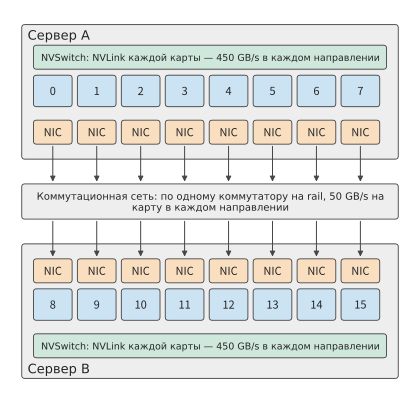
Рис. 7-1. Два фиксированных сервера, по восемь карт на каждом. Карты внутри сервера соединены через NVLink и NVSwitch; у каждой карты есть собственная сетевая карта. Данные между серверами проходят от сетевой карты отправителя через коммутационную сеть к сетевой карте получателя; каждая сетевая карта обеспечивает 50 GB/s в каждом направлении.
Граница серверов на рис. 7-1 — это также коммуникационная граница, неоднократно анализируемая в этой главе. Возьмём тензор градиентов объёмом 192 MiB, результат редукции которого должны получить все шестнадцать участников. В примере 7.6 (раздел 7.6.2) вычисления шага обучения занимают 20 ms, а градиенты готовы через 17 ms. Чтобы полностью скрыть коммуникацию за вычислениями, её необходимо завершить за 3 ms; в этой главе 3 ms принимаются за бюджет данной коммуникации. Этот пример удобен для расчётов по раундам и наглядно показывает главную сложность взаимодействия между серверами: локальные результаты вычислений необходимо передать на другой сервер через сетевую карту, пропускная способность которой значительно ниже, чем у NVLink.
Сетевая карта гораздо медленнее NVLink, поэтому сначала необходимо решить, какие виды коммуникации размещать между серверами. В этой главе используется без повторного определения обзор способов параллелизма из раздела 6.1.4. В первую очередь следует рассмотреть варианты, в которых частые редукции тензорного параллелизма остаются внутри более быстрого соединения, а между серверами размещаются синхронизация градиентов при параллелизме по данным или передача между стадиями конвейерного параллелизма. Если локальной ёмкости недостаточно, контекстному параллелизму требуется контекст большего масштаба либо маршрутизация при экспертном параллелизме пересекает несколько узлов, область коммуникации приходится расширять. Целесообразность такого размещения определяется фактическим трафиком и критическим путём.
Само пересечение границы суперузла не изменяет объём обмениваемых данных. Число передаваемых байтов определяется алгоритмом, размещением, точностью и устранением дубликатов у получателя, а путь определяет, через какой выход пройдут эти байты и сколько времени придётся ждать. Одного знания о том, что сеть использует InfiniBand или RoCE, недостаточно для определения эффективной пропускной способности, задержки передачи, коэффициента переподписки (отношения пропускной способности нисходящих и восходящих подключений коммутатора), размера окна данных в пути и времени восстановления после сбоя. Далее расчёты выполняются по явно заданным параметрам сети; при реальном развёртывании их следует заменить измеренными значениями соответствующей системы.
Эксперимент 7-1. Расширение: разбиение модели между восьмикартовыми серверами
Рассчитайте минимальное число серверов для двух указанных выше моделей инференса, дополнительно выделив на каждой карте 8 GB для KV-кэша и рабочей области. Отдельно изобразите распределение работы при тензорном или экспертном параллелизме внутри сервера и конвейерном параллелизме между серверами, а также при тензорном параллелизме между серверами. Отметьте места межсерверной передачи при одном выполнении prefill и одном выполнении decode.
7.1.2 Модель трафика и ресурсов¶
После определения расположения карт и размера градиентов можно рассчитать, сколько времени займёт прохождение данных через каждый участок пути. Блок данных выходит из памяти GPU, через интерфейс ускорителя поступает на сетевую карту, затем проходит через коммутационную сеть и в конце записывается в память получателя. Один и тот же блок данных должен последовательно пройти через эти интерфейсы и соединения, но разные блоки могут одновременно передаваться на разных участках, образуя конвейер. При длительной передаче большого объёма данных общую пропускную способность определяет участок с наименьшей пропускной способностью. Например, карта может отправлять через NVLink 450 GB/s в каждом направлении, но её сетевая карта способна передавать лишь 50 GB/s в каждом направлении, поэтому скорость длительной передачи с этой карты на другой сервер ограничена значением 50 GB/s сетевой карты.
При переходе от одного пути ко всему кластеру можно сначала выбрать анализируемую границу сети, а затем подсчитать все проходящие через неё данные. Если разделить сетевые узлы на две группы, соединения между ними образуют разрез из главы 6. Если для выполнения задачи требуется передать в некотором направлении через разрез \(V_{\mathcal C}\) байт, а его эффективная пропускная способность в этом направлении равна \(B_{\mathcal C}\), время передачи составляет не менее
Эта формула задаёт нижнюю границу времени передачи: при любом планировании число байтов, передаваемых по соединению за секунду, не может превышать его пропускную способность. Для полнодуплексного соединения оба направления рассчитываются отдельно; если несколько портов совместно используют внутренний интерфейс, для этого интерфейса рассчитывается суммарный трафик. Один и тот же блок данных должен последовательно пройти через все участки цепочки, поэтому сквозная пропускная способность ограничена самым медленным участком, а пропускные способности участков нельзя складывать.
Ширина разреза зависит от организации коммутационной сети. Сеть Clos состоит из нескольких уровней коммутаторов и предоставляет конечным узлам несколько путей через промежуточные уровни коммутации. В иерархической сети Clos leaf-коммутаторы соединены с серверами, а коммутаторы верхнего уровня предоставляют несколько путей между leaf-коммутаторами. Например, каждый порт коммутатора NVIDIA Quantum QM9700 InfiniBand, используемого в эталонной архитектуре DGX SuperPOD, работает на скорости класса NDR для InfiniBand — 400 Gbit/s, то есть 50 GB/s в каждом направлении. Если leaf-коммутатор использует 48 портов для подключения серверов и 16 портов для подключения к верхнему уровню, совокупная нисходящая пропускная способность составляет 2.4 TB/s, а восходящая — 0.8 TB/s. Их отношение 3:1 называется коэффициентом переподписки. Эти восходящие соединения с совокупной пропускной способностью 0.8 TB/s образуют разрез, через который должен пройти весь трафик, покидающий данный leaf-коммутатор. Серверы, подключённые к одному leaf-коммутатору, могут обмениваться данными напрямую; пропускную способность восходящих соединений использует только коммуникация между разными leaf-коммутаторами.
Пример 7.1. Когда выигрыш от увеличения числа карт ограничивается межсерверной коммуникацией? Расположим шестнадцать участников в кольцо для выполнения редукции с расчётом по раундам, описанным в разделе 7.2.1. Каждый сервер отправляет другому 360 MiB, и все эти байты проходят через одну сетевую карту с пропускной способностью 50 GB/s в каждом направлении. При исходном числе карт вычисления занимают 20 ms. При увеличении числа карт вычисления равномерно распределяются между ними, а объём и путь межсерверной передачи не изменяются. Найдите время завершения при полностью последовательном выполнении и при полном перекрытии.
Решение: нижняя граница времени передачи в одном направлении равна
Обозначим отношение нового числа карт к исходному через \(x\); тогда время вычислений станет равным \(20/x\) ms. При последовательном выполнении потребуется \(20/x+7.5\) ms; при полном перекрытии вычислений и коммуникации общее время равно большему из этих двух значений. При удвоении числа карт результаты снижаются примерно с 27.5 и 20.0 ms до 17.5 и 10.0 ms соответственно. При четырёхкратном увеличении последовательное выполнение занимает около 12.5 ms, а выполнение с полным перекрытием — около 7.5 ms. На рис. 7-2 показаны зависимости для обоих вариантов от числа карт.
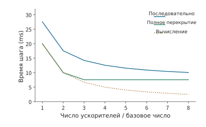
Рис. 7-2. Эффект увеличения числа карт при фиксированном объёме межсерверной передачи. В каждом направлении через одну сетевую карту с пропускной способностью 50 GB/s передаётся 360 MiB; исходное время вычислений составляет 20 ms и сокращается обратно пропорционально увеличению числа карт. Кривые рассчитаны для последовательного выполнения вычислений и коммуникации и для их полного перекрытия; коммуникационная составляющая равна времени передачи через разрез.
Когда время вычислений равно времени передачи, \(20/x=7.5\), откуда \(x\approx2.6\). После этой точки вычисления уже занимают меньше времени, чем передача, поэтому дальнейшее добавление карт не сокращает время выполнения при полном перекрытии. Для дальнейшего сокращения времени необходимо уменьшить объём данных, проходящих через разрез, либо повысить его эффективную пропускную способность, задействовав одновременно больше сетевых карт. В разделе 7.2 будет показано, как реорганизация той же редукции позволяет добиться обоих результатов одновременно.
Подход, при котором общий объём задачи фиксирован, а число карт увеличивается, называется сильным масштабированием; при слабом масштабировании объём задачи увеличивается вместе с числом карт. Например, если объём передачи в каждом направлении также удвоится, а выход останется прежним, время коммуникации увеличится вдвое. Форма кривой масштабирования зависит от того, как с увеличением числа карт изменяются объём вычислений и объём межсерверной передачи.
Эксперимент 7-2. Расширение: как объём коммуникации и пропускная способность выхода ограничивают выигрыш от масштабирования
Используя условия примера 7.1, отдельно рассмотрите два изменения: уменьшение вдвое трафика в каждом направлении и одновременную работу двух сетевых карт, удваивающую пропускную способность выхода. Для каждого случая постройте зависимости времени завершения от кратности увеличения числа карт при последовательном выполнении и полном перекрытии, а также найдите кратность числа карт, при которой время вычислений равно времени коммуникации. Затем примите, что трафик растёт линейно с кратностью числа карт, и найдите кратность, минимизирующую время выполнения при полном перекрытии.
Число уровней сети Clos и бисекционная пропускная способность. Выше восходящие соединения leaf-коммутатора рассматривались как разрез. Чтобы определить ширину разреза всего кластера, нужно исходить из числа портов одного коммутатора. Пусть у каждого коммутатора имеется \(k\) портов с пропускной способностью 50 GB/s в каждом направлении; для QM9700 \(k=64\). Leaf-коммутатор использует \(d\) портов для подключения серверов и \(u\) портов для подключения к spine-коммутаторам верхнего уровня; отношение \(d/u\) и есть коэффициент переподписки. В неблокируемой сети \(d=u=k/2\). В двухуровневой сети Clos каждый spine-коммутатор использует все свои \(k\) портов, подключая каждый к отдельному leaf-коммутатору, а \(k/2\) восходящих соединений каждого leaf-коммутатора подключаются к \(k/2\) spine-коммутаторам. Поэтому такая сеть может содержать не более \(k\) leaf-коммутаторов и \(k^2/2\) конечных узлов. Трёхуровневая сеть с организацией pod по схеме fat-tree, то есть многоуровневой Clos без сужения совокупной пропускной способности между уровнями, где несколько leaf-коммутаторов и группа коммутаторов промежуточного уровня образуют один pod, а разные pod соединяются через коммутаторы верхнего уровня, поддерживает не более \(k^3/4\) конечных узлов. При \(k=64\) двухуровневая сеть соединяет 2048 конечных узлов с помощью 96 коммутаторов. Именно такая конфигурация из 64 leaf-коммутаторов и 32 spine-коммутаторов используется для 2048 GPU в эталонной архитектуре DGX SuperPOD. Трёхуровневая сеть соединяет 65536 конечных узлов с помощью 5120 коммутаторов.34
Совокупная пропускная способность соединений между двумя половинами кластера с одинаковым числом конечных узлов называется бисекционной пропускной способностью (bisection bandwidth). Бисекционная пропускная способность неблокируемой сети равна суммарной пропускной способности половины конечных узлов: для двухуровневой сети с 2048 конечными узлами она составляет \(1024\times50=51.2\) TB/s, а для трёхуровневой — 1638.4 TB/s. При коэффициенте переподписки 3 leaf-коммутатор использует 48 нисходящих и 16 восходящих портов; двухуровневая сеть может подключить 3072 конечных узла, используя всего 80 коммутаторов. У 64 leaf-коммутаторов имеется в общей сложности 1024 восходящих соединения, поэтому бисекционная пропускная способность равна суммарной пропускной способности половины из них — 25.6 TB/s. Это лишь треть от 76.8 TB/s, которые обеспечила бы неблокируемая сеть для тех же 3072 конечных узлов; доля пропускной способности бисекционного разреза на один конечный узел снижается с 50 GB/s до 16.7 GB/s. На рис. 7-3 показана двухуровневая сеть Clos и её бисекционный разрез.
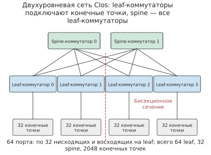
Рис. 7-3. Двухуровневая сеть Clos. Половина портов каждого leaf-коммутатора подключена к серверам, а другая половина — к spine-коммутаторам; любые два leaf-коммутатора могут обмениваться данными через любой spine-коммутатор. Пунктирная линия делит конечные узлы на две половины, а пересекающие её соединения между leaf- и spine-коммутаторами образуют бисекционный разрез. На рисунке для наглядности показаны четыре leaf-коммутатора и два spine-коммутатора; при 64 портах фактически используются 64 leaf-коммутатора и 32 spine-коммутатора.
Когда задание обучения на 1024 картах из раздела 7.6.4 занимает целое число leaf-коммутаторов, его разрез образуют все восходящие соединения этих leaf-коммутаторов:
| Коэффициент переподписки | Нисходящие/восходящие порты на leaf-коммутатор | Число leaf-коммутаторов для 1024 карт | Число соединений в разрезе | Пропускная способность разреза | Доля на карту |
|---|---|---|---|---|---|
| 1:1 | 32/32 | 32 | 1024 | 51.2 TB/s | 50 GB/s |
| 3:1 | 48/16 | 22 | 352 | 17.6 TB/s | 17.2 GB/s |
Коэффициент переподписки также изменяет значения в столбце «выход растёт вместе с числом карт» таблицы из раздела 7.6.4. В этом столбце пропускная способность выхода каждого суперузла принимается равной числу карт, умноженному на 50 GB/s, что подразумевает неблокируемую коммутационную сеть. При коэффициенте переподписки 3 пропускная способность выхода уменьшается до одной трети, а время междоменной передачи утраивается:
| Число карт в суперузле | Междоменная передача на узел | Выход без блокировки | Выход при переподписке 3:1 | Время междоменной передачи (без блокировки → 3:1) |
|---|---|---|---|---|
| 8 | 127 GB | 400 GB/s | 133 GB/s | 0.318 → 0.953 s |
| 64 | 120 GB | 3.2 TB/s | 1.07 TB/s | 37.5 → 112.5 ms |
| 128 | 112 GB | 6.4 TB/s | 2.13 TB/s | 17.5 → 52.5 ms |
| 256 | 96 GB | 12.8 TB/s | 4.27 TB/s | 7.5 → 22.5 ms |
В таблице указано чистое время передачи. Междоменная составляющая в разделе 7.6.4 также включает время запуска \(2(H-1)\) раундов по 0.83 μs каждый. Для суперузла на 128 карт \(H=8\), поэтому суммарное время запуска составляет около 12 μs и почти не влияет на приведённое в таблице время порядка миллисекунд.
Обсуждение: когда разрез сети с переподпиской становится узким местом? Коэффициент переподписки \(r\) уменьшает приходящуюся на каждую карту долю пропускной способности разреза до \(50/r\) GB/s. Если только доля \(f\) байтов, отправляемых сетевой картой, должна покинуть её leaf-коммутатор, условие отсутствия узкого места на восходящих соединениях имеет вид \(f\le1/r\): в неблокируемой сети ограничений нет при любом \(f\), а при \(r=3\) ограничение отсутствует, только если между leaf-коммутаторами проходит менее трети байтов. Если на межсерверной стадии иерархической редукции два парных сервера не подключены к одному leaf-коммутатору — в многорельсовой топологии из раздела 7.2.5 сетевые карты с одинаковыми номерами на разных серверах подключаются к одному leaf-коммутатору, по 32 сервера в группе, поэтому данный случай означает, что серверы находятся в разных группах, — все байты каждой сетевой карты должны пройти между leaf-коммутаторами, то есть \(f=1\). В таком случае разрез сети с переподпиской непосредственно увеличивает длительность этой стадии в \(r\) раз. Если два сервера находятся в одной группе, согласованное образование пар из раздела 7.2.5 позволяет байтам каждой пары пройти только через один leaf-коммутатор, то есть \(f=0\), и восходящие соединения не передают ни одного байта этой редукции. Размещение серверов одной группы синхронизации в одной группе — один из способов уменьшить \(f\).
Эксперимент 7-3. Расширение: как число портов коммутатора и коэффициент переподписки определяют разрез
Измените число портов коммутатора на 128 и отдельно рассчитайте число конечных узлов, число коммутаторов и бисекционную пропускную способность для неблокируемых двухуровневой и трёхуровневой сетей Clos. Сохранив 64 порта, измените коэффициент переподписки на 2:1, рассчитайте пропускную способность разреза раздела на 1024 карты и долю на одну карту, а также время междоменной передачи для суперузла на 128 карт из раздела 7.6.4. Наконец, при коэффициенте переподписки 3 найдите, какая доля байтов каждой сетевой карты на межсерверной стадии иерархической редукции должна оставаться внутри своего leaf-коммутатора, чтобы разрез больше не был узким местом.
7.1.3 Унифицированное соединение¶
Приведённые выше нижние границы показывают ограничения физических соединений. Однако перед программой стоит и другая проблема: для передачи одних и тех же данных внутри машины и между серверами часто приходится использовать разные интерфейсы доступа. Это связано с давно сложившимся разделением ролей между шинами и сетями: тесно связанные соединения подключают устройства к процессору и системе памяти и подходят для частого мелкогранулярного взаимодействия; кластерные сети соединяют множество независимых узлов и должны также обрабатывать отказы узлов и соединений. Когда модель размещается на нескольких серверах, одно вычисление одновременно использует оба механизма. Локальный доступ к памяти и удалённая передача выражают в программе сходные зависимости по данным, но используют разные пути отправки и завершения операций.
Когда автор участвовал в раннем проектировании UB, одной из ключевых задач было создание единого интерфейса для локального и удалённого взаимодействия. Приложению требуется выразить такие действия, как «прочитать эти данные», «передать результат следующей стадии» и «после завершения повторно использовать пространство». Унифицированное соединение предоставляет общий интерфейс для адресации, доступа к данным и коммуникации между устройствами, позволяя участвовать в ней CPU, ускорителям и другим устройствам.
Для понимания этой унификации необходимо различать две вещи. Интерфейс определяет, как программа выражает работу, а физический путь — через какие ресурсы эта работа проходит. Удалённое чтение можно инициировать одной инструкцией, но данные всё равно должны пройти через выход сетевой карты с пропускной способностью 50 GB/s. Асинхронную запись можно отправить заранее, однако получатель сможет начать использовать данные только после их готовности. Поэтому в этой главе сначала определяется обязательный объём трафика, затем — число параллельных запросов, необходимое для полного использования пропускной способности, и наконец анализируется требуемый приложением порядок операций. Преимущества унифицированного интерфейса также проявляются на этих трёх уровнях: уменьшение числа перемещений, сокращение пути инициирования и упрощение взаимодействия. В разделе 6.5.5 уже рассматривались с точки зрения масштаба суперузла два проектных решения UB: подключение контроллера к внутрикристальной шине и раздельное хранение состояния соединения в записях конечных точек и транспортных каналах. В этой главе эффекты этих решений поэтапно рассчитываются вдоль пути одного удалённого доступа.
7.2 Межузловой трафик и физические маршруты¶
7.2.1 Межсерверный трафик при параллелизме по данным¶
Унифицированный интерфейс не позволяет избежать необходимой передачи, однако алгоритм редукции может изменить то, какие данные требуется передавать между серверами. Начнём с параллелизма по данным: каждый участник вычисляет локальные градиенты, затем соответствующие элементы суммируются, после чего каждый участник должен получить полный результат редукции. В качестве примера возьмём градиент проекции gate в FFN первого слоя Qwen3-8B размерности \([12288,4096]\), хранящийся в FP32 по 4 байта на элемент. Входные данные каждого участника имеют объём
В разделе 6.4.2 был выведен кольцевой AllReduce: сначала выполняется ReduceScatter, после которого каждая карта хранит одну часть результата редукции, а затем AllGather собирает все эти части на каждой карте; тензор поровну делится на \(p\) частей, оба этапа состоят из \(p-1\) раундов, и в каждом раунде следующему участнику отправляется одна часть объёмом \(M/p\). Поэтому каждый участник отправляет
Каждый из шестнадцати участников отправляет 360 MiB, суммарно отправляется 5760 MiB за тридцать раундов. Алгоритм определяет общий объём отправки, а распределение участников по серверам — какая его часть должна передаваться между серверами и через какие сетевые карты.
Задача 7.2: какой алгоритм редукции способен завершить передачу за 3 ms? На двух серверах из раздела 7.1 сравним непрерывное кольцо без иерархии, чередующееся кольцо и иерархическую редукцию.
Решение: вычислим объём межсерверной передачи для каждого варианта редукции. В непрерывном кольце участники расположены в порядке 0, 1, …, 15. Из шестнадцати ориентированных рёбер между серверами проходят только 7→8 и 15→0. В каждом раунде по каждому ребру отправляется 12 MiB; за тридцать раундов в каждом направлении отправляется по 360 MiB, всего в двух направлениях — 720 MiB. На сервере A эти байты проходят только через сетевую карту участника 7, а на сервере B — только через сетевую карту участника 15; остальные четырнадцать сетевых карт простаивают. Если вместо этого расположить участников с чередованием 0, 8, 1, 9, …, 7, 15, все шестнадцать рёбер будут проходить между серверами; в каждом раунде каждая сетевая карта отправляет по 12 MiB, а общий объём межсерверной передачи возрастает до 5760 MiB.
При иерархической редукции восемь участников на каждом сервере сначала выполняют локальный ReduceScatter. После семи раундов у каждого участника остаётся одна восьмая результата редукции своего сервера, то есть 24 MiB. Затем два участника с разных серверов, отвечающие за одну и ту же часть, выполняют один AllReduce: каждый делит свои 24 MiB на две части, за один раунд обменивается одной из них и выполняет её редукцию, а за второй раунд получает другую часть. Каждая пара отправляет в обоих направлениях суммарно 48 MiB, а восемь пар — 384 MiB; каждая пара использует собственный rail, поэтому восемь сетевых карт работают одновременно. Наконец, на каждом сервере за семь раундов AllGather собирается полный результат. На рисунках 7-4–7-6 показаны пути трёх вариантов, а на рисунке 7-7 сравнивается количество передаваемых между серверами байтов.
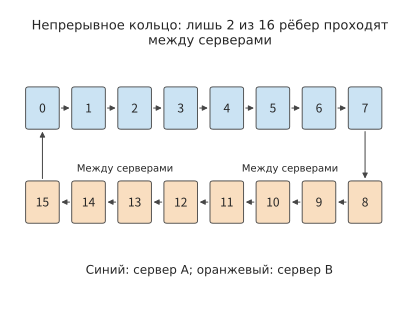
Рисунок 7-4. В непрерывном кольце участники одного сервера расположены рядом. Из шестнадцати ориентированных рёбер между серверами проходят только 7→8 и 15→0, поэтому межсерверный трафик сосредоточен на двух сетевых картах. Цвет обозначает сервер, на котором находится участник.
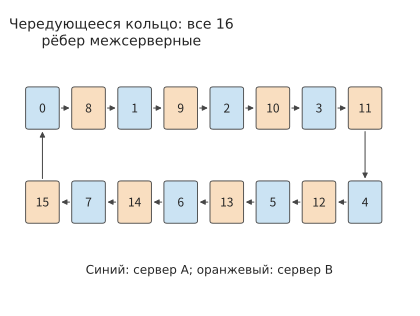
Рисунок 7-5. При чередующемся размещении участников на серверах A и B все шестнадцать ориентированных рёбер проходят между серверами и работают все шестнадцать сетевых карт. Общий объём отправки каждого участника остаётся неизменным.
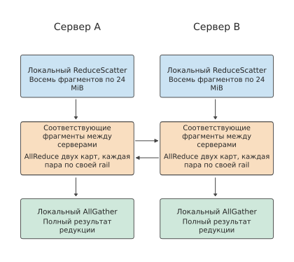
Рисунок 7-6. Каждый сервер сначала выполняет редукцию восьми локальных вкладов в части результата, затем обменивается соответствующими частями с другим сервером и, наконец, локально собирает полный результат. Каждый столбец выполняется сверху вниз; горизонтальные стрелки обозначают межсерверный обмен, а каждая пара участников использует отдельный rail.
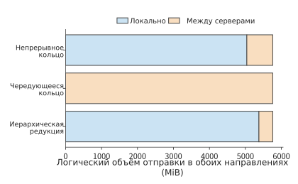
Рисунок 7-7. Логический объём отправки во всех трёх вариантах одинаков и составляет 5760 MiB; оранжевые межсерверные части составляют соответственно 720, 5760 и 384 MiB. Указана сумма по двум направлениям.
Решение: вычислим время редукции по нагрузке на каналы в каждом раунде. Раунды выполняются последовательно, а разные передачи внутри одного раунда — параллельно. Пусть в раунде \(r\) через ресурс \(e\) проходит объём данных \(V_{r,e}\), пропускная способность этого ресурса равна \(B_e\), а время запуска каждого раунда — \(\alpha\). Тогда модель передачи имеет вид
Последовательно рассчитав каждый раунд по стрелкам трёх описанных вариантов, можно преобразовать объём трафика во время. Формула разделяет две зависимости: внутри раунда время определяется самой медленной передачей, а времена разных раундов складываются последовательно. Здесь учитываются только передача данных и время запуска каждого раунда.3
В каждом раунде непрерывного кольца через одну сетевую карту в каждом направлении отправляется 12 MiB, что занимает около 0.25 ms; остальные четырнадцать рёбер того же раунда проходят через NVLink, и передача 12 MiB по каждому из них занимает лишь около 0.03 ms, однако все они должны ждать это одно ребро. Поэтому тридцать раундов занимают около 7.6 ms. В чередующемся кольце каждое из шестнадцати рёбер в каждом раунде отправляет 12 MiB через собственную сетевую карту, поэтому раунд также занимает около 0.25 ms, а тридцать раундов — около 7.6 ms: чередующееся кольцо задействует все сетевые карты, но увеличивает межсерверный трафик в восемь раз, не сокращая время.
В двух межсерверных раундах иерархической редукции каждая сетевая карта передаёт по 12 MiB за раунд, что суммарно занимает около 0.50 ms. Локальные ReduceScatter и AllGather вместе состоят из четырнадцати раундов, в каждом из которых каждый участник отправляет через NVLink 24 MiB; при 450 GB/s это суммарно занимает около 0.78 ms. Запуск шестнадцати раундов занимает около 13 μs, поэтому
Передача в непрерывном кольце уже превышает бюджет в 3 ms, тогда как иерархическая редукция оставляет около 1.7 ms на вычисления редукции, распространение данных и ожидание в очереди. Иерархическая редукция уменьшает объём межсерверной передачи примерно на 47%, а время коммуникации — примерно на 83%. Столь значительное различие между этими долями объясняется не количеством байтов, а путём их передачи: в каждом из тридцати раундов непрерывного кольца приходится ждать, пока межсерверное ребро передаст через сетевую карту 12 MiB; остальные четырнадцать рёбер проходят через NVLink и после завершения примерно за 0.03 ms ожидают это ребро, а другие четырнадцать сетевых карт весь раунд не передают данные. Иерархическая редукция сжимает межсерверную передачу до двух раундов, в каждом из которых восемь сетевых карт одновременно передают по 12 MiB, поэтому эффективная пропускная способность сечения возрастает с 50 GB/s до 400 GB/s.
Обсуждение: насколько быстрым должно быть локальное соединение, чтобы иерархия была выгодна? Обозначим локальную пропускную способность как \(B_L\), оставив пропускную способность сетевой карты равной 50 GB/s в каждом направлении. В четырнадцати локальных раундах иерархической редукции передаётся суммарно 336 MiB, а два межсерверных раунда занимают около 0.5 ms. Пока \(B_L\) не ниже пропускной способности сетевой карты, время непрерывного кольца всегда определяется одним межсерверным ребром и составляет около 7.6 ms. Приравняв времена двух вариантов, \(336\ \mathrm{MiB}/B_L+0.5\ \mathrm{ms}=7.6\ \mathrm{ms}\), получаем \(B_L\approx50\) GB/s: иерархическая редукция быстрее, если локальное соединение не медленнее одной сетевой карты, а 450 GB/s у NVLink намного выше этой границы. На данном сервере иерархическая редукция не несёт дополнительных издержек, поскольку локальный объём отправки каждого участника, 336 MiB, не превышает 360 MiB у непрерывного кольца, а на межсерверном этапе задействованы все восемь сетевых карт.
Иерархическая редукция не всегда обходится без дополнительных затрат. Для сравнения рассмотрим распространённый сервер PCIe, далее называемый контрольной конфигурацией: в каждом сервере установлены четыре A100 80GB PCIe, между которыми данные передаются напрямую через PCIe Gen4 x16 со скоростью 32 GB/s в каждом направлении; также на каждом сервере установлена одна двухпортовая ConnectX-7 с двумя портами по 200 Gbit/s, или 25 GB/s каждый, которые совместно используют слот PCIe Gen4 x16 этой сетевой карты, также ограниченный 32 GB/s в каждом направлении. В непрерывном кольце из восьми участников каждый из четырнадцати раундов передаёт 24 MiB; локальные рёбра ограничены пропускной способностью прямых соединений, межсерверные — слотом сетевой карты, поэтому для каждого раунда используется значение 32 GB/s, а общее время составляет около 11.0 ms. В двух межсерверных раундах иерархической редукции через слот требуется передать по 96 MiB в каждом направлении, что занимает около 6.3 ms; ещё около 9.4 ms занимают шесть раундов локальной коммуникации, и суммарное время составляет около 15.7 ms — больше, чем у непрерывного кольца. Равенство достигается при локальной пропускной способности около 64 GB/s, то есть примерно вдвое выше пропускной способности слота сетевой карты.4 Мост NVLink у A100 PCIe обеспечивает 300 GB/s в каждом направлении, что намного выше этой границы, однако один мост соединяет только две карты, поэтому в кольце из четырёх карт два ребра всё равно проходят через PCIe; если бы такую пропускную способность имело каждое ребро кольца из четырёх карт, время иерархической редукции снизилось бы примерно до 7.3 ms и стало бы меньше времени непрерывного кольца. Причина различия — общий интерфейс: межсерверный этап концентрирует части восьми участников в двух раундах, и весь трафик обоих раундов должен пройти через один слот с пропускной способностью 32 GB/s, поэтому более длинные межсерверные раунды частично сводят на нет экономию удалённо передаваемых байтов; локальные каналы также не быстрее этого слота, поэтому компенсировать дополнительное время локальной редукции не удаётся.
Иерархическая редукция сначала выполняет частичную редукцию через более быстрое локальное соединение, а затем отправляет результат через сетевые карты. Она уменьшает количество передаваемых между серверами байтов, но ещё важнее то, что у каждой сетевой карты появляется собственная часть для передачи. Если межсерверную пропускную способность обеспечивают несколько независимых сетевых карт, иерархия почти ничего не стоит; если же межсерверная пропускная способность предоставляется общим интерфейсом, иерархическая редукция будет быстрее только тогда, когда дополнительное время локальной редукции меньше сэкономленного времени удалённой передачи.
Четвёртый вариант: редукция в сети. В первых трёх вариантах участники передают данные попарно, а коммутатор лишь пересылает их. Редукция в сети позволяет коммутатору выполнять сложение одновременно с пересылкой: NVIDIA SHARP (Scalable Hierarchical Aggregation and Reduction Protocol, масштабируемый протокол иерархической агрегации и редукции) выполняет в микросхеме коммутатора редукцию данных, поступающих с нескольких портов по дереву агрегации, а затем распределяет результат обратно, поэтому конечным узлам не требуется многократно отправлять одни и те же данные.35 Сохраним локальные ReduceScatter и AllGather из иерархической редукции, изменив только межсерверный этап: каждый участник один раз отправляет коммутатору свою часть размером 24 MiB и один раз получает обратно результат редукции; всё выполняется за один раунд. При двух серверах каждая сетевая карта по-прежнему передаёт по 24 MiB в каждом направлении, а общий объём межсерверной передачи по-прежнему составляет 384 MiB, как и при иерархической редукции; время сокращается с 0.505 ms за два раунда до 0.504 ms за один раунд, то есть экономится только одно время запуска в 0.83 μs.
Различие проявляется с увеличением числа серверов. Пусть одну и ту же часть хранят \(S\) серверов. При кольцевом AllReduce каждая сетевая карта отправляет \(2\frac{S-1}{S}\times24\) MiB за \(2(S-1)\) раундов; при редукции в сети каждая сетевая карта всегда отправляет данные один раз и получает их один раз. Время межсерверного этапа приведено в следующей таблице и на рисунке 7-8:
| Число серверов | Кольцо: отправка на сетевую карту | Кольцо: число раундов | Кольцо: время | Редукция в сети: отправка на сетевую карту | Редукция в сети: время |
|---|---|---|---|---|---|
| 2 | 24 MiB | 2 | 0.505 ms | 24 MiB | 0.504 ms |
| 4 | 36 MiB | 6 | 0.760 ms | 24 MiB | 0.504 ms |
| 8 | 42 MiB | 14 | 0.892 ms | 24 MiB | 0.504 ms |
| 16 | 45 MiB | 30 | 0.969 ms | 24 MiB | 0.504 ms |
| 32 | 46.5 MiB | 62 | 1.027 ms | 24 MiB | 0.504 ms |
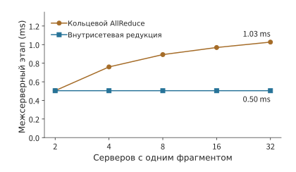
Рисунок 7-8. Время межсерверного этапа при увеличении числа серверов, хранящих одну и ту же часть, с 2 до 32. Объём отправки на сетевую карту в кольце стремится к двум частям, а число раундов растёт как \(2(S-1)\); редукция в сети сохраняет одну часть и один раунд. При двух серверах варианты различаются только одним запуском.
Обсуждение: когда редукция в сети становится заметно быстрее? При двух серверах варианты различаются только одним запуском; начиная с \(S=3\) объём данных кольца в \(2(S-1)/S>1\) раза больше, чем при редукции в сети, и дополнительно требуется \(2S-3\) запусков раундов, поэтому разрыв увеличивается вместе с числом серверов. При 32 серверах время редукции в сети составляет лишь 49% времени кольца. Эта модель учитывает только последовательную отправку через сетевые карты и запуски; количество байтов, которое механизм редукции коммутатора способен обрабатывать в секунду, и поддерживаемые типы данных должны задаваться отдельно. Если трафик превышает его возможности, узким местом вместо сетевых карт становится коммутатор. В статье о SHARP на 128 хостах время AllReduce для 8 байтов снизилось с 6.01 μs до 2.83 μs, а для 4096 байтов — с 46.93 μs до 14.48 μs: для небольших сообщений основная экономия достигается за счёт сокращения числа запусков раундов.35
Эксперимент 7-4 · Расширение: когда редукция в сети оправданна
Замените градиент на BF16 (96 MiB на участника) и повторно вычислите время межсерверного этапа кольцевой редукции и редукции в сети для двух и восьми серверов. Считая, что пропускная способность механизма редукции коммутатора в каждом направлении равна 200 GB/s, определите, станет ли он узким местом при одновременной редукции по восьми rail, и найдите минимальную пропускную способность механизма, при которой редукция в сети всё ещё будет быстрее кольца. Наконец, для входных данных размером 8 KiB из раздела 7.6.3 сравните разницу в суммарном времени запуска двух вариантов для 36 слоёв и двух редукций на слой.
7.2.2 Требования к обмену данными при тензорном и конвейерном параллелизме¶
При параллелизме по данным градиенты всех участников объединяются с помощью редукции. Тензорный параллелизм распределяет вычисления одного слоя между несколькими участниками, а последующие операторы зачастую могут начать работу только после объединения локальных результатов, поэтому обмен данными внутри слоя непосредственно задерживает последующие вычисления. Конвейерный параллелизм разделяет модель на стадии, сосредоточивая обмен между серверами на границах стадий. В этих двух подходах данные пересекают границы серверов разное количество раз.
Сначала рассчитаем объём данных при одной передаче между слоями. Ширина скрытого состояния Qwen3-8B равна 4096, поэтому один скрытый вектор BF16 занимает 8 KiB. При prefill аналогичный тензор для 8192 токенов занимает 64 MiB, а при decode одного запроса — 8 KiB. Примем пропускную способность соединения \(B\) равной 50 GB/s для рассматриваемого в этой главе сетевого адаптера, а время запуска каждой передачи \(\alpha\) — равным 5 μs. Тогда передача \(M\) bytes занимает
Для 64 MiB требуется приблизительно 1,3 ms, а для 8 KiB — приблизительно 5,2 μs. В первом случае время расходуется главным образом на передачу данных, во втором около 97% времени занимает запуск. Время запуска равно времени передачи при \(M=\alpha B=250000\) bytes, то есть приблизительно 244 KiB. Если объём данных значительно превышает это значение, доминирует время передачи и эффективнее повышать пропускную способность; если он значительно меньше, эффективнее сокращать количество передач.
Приведённая выше формула определяет стоимость каждой передачи; для конвейерного параллелизма необходимо также учитывать, как многократные передачи чередуются с вычислениями. При конвейерном параллелизме несколько последовательных слоёв размещаются на одной стадии, а между стадиями передаются активации. Пока предыдущая стадия обрабатывает следующий микробатч, последующая может обрабатывать предыдущий. Рассмотрим четыре стадии прямого прохода, каждая из которых занимает 1 ms. Один микробатч последовательно проходит от первой до четвёртой стадии и завершается через 4 ms. Если последовательно подать восемь независимых микробатчей, первая стадия каждую миллисекунду будет передавать результат одного микробатча следующей стадии, а последний микробатч завершится через 11 ms.
Если проследить на рисунке 7-9 за одинаковыми номерами, каждый микробатч должен пройти все четыре стадии; если проследить вдоль одной строки, одна стадия может последовательно обработать восемь микробатчей. Пустые области слева внизу и справа вверху соответствуют простоям при запуске и завершении конвейера.
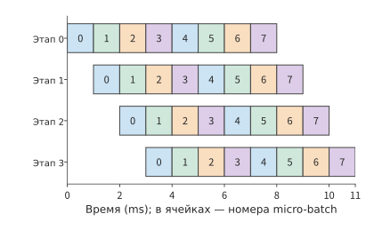
Рисунок 7-9. Обработка восьми микробатчей четырьмя стадиями прямого прохода. Каждая ячейка соответствует 1 ms, числа обозначают номера микробатчей; одинаковые номера перемещаются вправо и вниз, показывая последовательное прохождение микробатчем всех стадий. Каждая стадия выполняет вычисления в течение 8 ms и простаивает 3 ms из общего времени 11 ms. Стадии занимают одинаковое время, а дополнительные затраты на передачу на рисунке не учитываются.
В общем случае для \(p\) равных по длительности стадий, \(m\) независимых микробатчей и длительности каждой стадии \(\tau\) общее время и коэффициент использования каждой стадии соответственно равны
Для четырёх стадий и восьми микробатчей коэффициент использования составляет около 73%. Чтобы достичь 90%, из \(m/(m+3)\ge0.9\) следует, что необходимо не менее 27 независимых микробатчей. Для непрерывной работы всех стадий конвейера требуется достаточно много независимых микробатчей. При decode с малым числом одновременных запросов следующий токен одного запроса зависит от результата предыдущего токена, поэтому добавление серверов не создаёт новых независимых микробатчей; их количество в конвейере увеличивается только при росте числа одновременных запросов.
Таким образом, эти два вида параллелизма порождают разные виды ожидания: при тензорном параллелизме необходимо часто объединять локальные результаты, а при конвейерном параллелизме часть ускорителей простаивает во время запуска и завершения. Тензоры при prefill имеют большой размер, поэтому в первую очередь следует сокращать объём данных, передаваемых между серверами; при decode с малым числом одновременных запросов токены генерируются по одному, поэтому в первую очередь следует сокращать количество запусков обмена данными на каждом слое. Число одновременных запросов, в свою очередь, определяет коэффициент использования конвейера.
7.2.3 Коммуникационная нагрузка при экспертном параллелизме¶
Коммуникация при тензорном и конвейерном параллелизме определяется способом разбиения; в MoE появляется ещё одна переменная: каждый токен может выбирать разных экспертов, поэтому меняются и получатели данных. При экспертном параллелизме эксперты размещаются на разных ускорителях, а токены направляются к соответствующим экспертам согласно маршрутизации. Возьмём 1024 токена, каждый из которых выбирает восемь экспертов: всего получается 8192 операции dispatch. Размер каждой активации составляет 8 KiB, половина пересекает границу серверов, поэтому на вход удалённым экспертам посредством dispatch передаётся 4096 активаций общим объёмом 32 MiB; combine возвращает результаты такого же размера, передавая ещё 32 MiB.7
Пусть число токенов равно \(n\), количество экспертов, выбираемых каждым токеном, — \(k\), размер каждой активации — \(d\) bytes, а доля передач через границу — \(f\). Если каждая операция dispatch передаётся отдельно, объём передачи для dispatch равен \(nkfd\), а вместе с возвращаемыми посредством combine результатами экспертов — \(2nkfd\). Размещение популярных экспертов на сервере отправителя уменьшает \(f\); изменение типа данных или способа кодирования активаций изменяет \(d\).
Распределение этих 32 MiB между получателями также влияет на время передачи. Если весь объём отправить на одну сетевую карту с пропускной способностью 50 GB/s, приём займёт не менее приблизительно 0,67 ms (рис. 7-10); если равномерно распределить данные между восемью сетевыми картами принимающих серверов, каждая из них получит 4 MiB, а время приёма снизится приблизительно до 0,08 ms (рис. 7-11). В конфигурации для сравнения два порта сетевой карты совместно используют один слот PCIe с пропускной способностью 32 GB/s, поэтому независимо от распределения между двумя портами приём 32 MiB займёт не менее приблизительно 1,05 ms. Равномерное распределение трафика между сетевыми картами устраняет узкое место одной сетевой карты; если порты совместно используют слот, следующим узким местом становится общий слот.
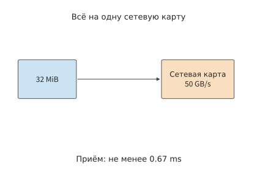
Рис. 7-10. При отправке всех 32 MiB на одну сетевую карту с пропускной способностью 50 GB/s приём занимает не менее приблизительно 0,67 ms.
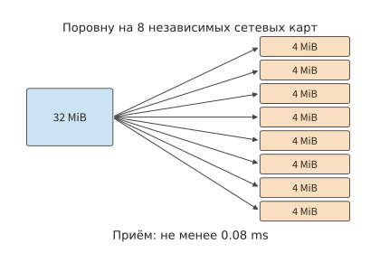
Рис. 7-11. Восемь независимых сетевых карт получают по 4 MiB каждая, сокращая этап приёма приблизительно до 0,08 ms.
После распределения получателей между несколькими сетевыми картами необходимо продолжить отслеживание общих интерфейсов, через которые проходит трафик. На рис. 7-12 отдельно показан общий слот из конфигурации для сравнения: независимо от последующего распределения между двумя портами все 32 MiB сначала должны пройти через один и тот же слот.
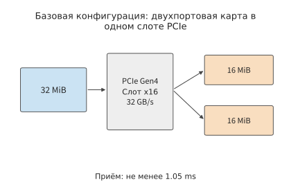
Рис. 7-12. В конфигурации для сравнения все 32 MiB сначала должны пройти через слот PCIe сетевой карты с пропускной способностью 32 GB/s, поэтому этап приёма ограничен приблизительно 1,05 ms. На всех этих схемах учитывается только передача принимаемой полезной нагрузки.
Сравнение этих трёх схем маршрутов показывает, что распределение получателей уменьшает объём данных на каждой сетевой карте; однако через общую точку входа на последней схеме по-прежнему должны пройти все 32 MiB. При расчёте нерегулярной коммуникации также можно сначала отдельно определить объём трафика в каждой из этих точек.
Обозначим полезную нагрузку, передаваемую с ускорителя \(i\) на ускоритель \(j\), через \(V_{ij}\). Сумма элементов одной строки равна объёму данных, отправляемых соответствующим отправителем, а сумма элементов одного столбца — объёму данных, принимаемых соответствующим получателем; сумма элементов, пересекающих определённое сечение, равна объёму передачи через это сечение. Если разделить каждую из этих величин на соответствующую пропускную способность, а затем выбрать максимальное значение, получится применение ресурсной модели из раздела 7.1 к нерегулярному обмену.
По этой матрице также видно, как соотносятся горячие точки dispatch и combine. Если данные отправляются отдельно для каждой пары «токен — эксперт», обратно возвращается вектор того же размера, а получатель не выполняет объединение, то матрица возврата представляет собой транспонированную матрицу отправки: получатель, являющийся горячей точкой для dispatch, становится отправителем — горячей точкой для combine. Одинаковое общее число переданных байтов на двух этапах коммуникации не означает одинакового времени: возвращаемые данные становятся доступны только после завершения вычислений экспертом, а доступная пропускная способность, формат данных и место редукции в двух направлениях также могут различаться. Если dispatch использует FP8, а combine — BF16, возвращаемая полезная нагрузка будет приблизительно вдвое больше полезной нагрузки dispatch; метаданные, такие как scale квантования, учитываются отдельно. В разделе 9.4 эти объёмы трафика и моменты готовности результатов вычислений будут объединены в одном примере расчёта.
Таким образом, размещение экспертов преследует две взаимосвязанные цели: сохранить больше операций dispatch локальными и распределить удалённые операции dispatch между получателями, располагающими свободной пропускной способностью. Репликация популярных экспертов обменивает дополнительную ёмкость на сокращение удалённых передач; входные данные для нескольких экспертов на одном ускорителе можно передать как одну активацию, а после доставки на этот ускоритель распределить между экспертами. Оба способа уменьшают объём передачи по соответствующим маршрутам.
7.2.4 Несколько сетевых адаптеров¶
Распределение по экспертам (expert dispatch) показывает преимущества нескольких параллельных входов и ограничения общего входа. Тот же анализ применим и к отправителю: добавление сетевого адаптера сокращает время передачи, только если он действительно предоставляет дополнительную доступную пропускную способность и на него распределяются данные. Непрерывное кольцо из раздела 7.2.1 — один из примеров: на сервере каждый из восьми сетевых адаптеров подключён к отдельному ускорителю, однако при непрерывном кольце данные для передачи получает только один из них; лишь иерархическая редукция распределяет фрагменты между восемью парами участников, сокращая этап между серверами с 7,6 ms примерно до 0,5 ms. Наличие сетевых адаптеров не означает, что они используются: объём байтов, приходящийся на каждый адаптер, определяется алгоритмом коммуникации.
Контрольная конфигурация демонстрирует другое ограничение. Её двухпортовый сетевой адаптер имеет два порта по 25 GB/s, использующих общий слот PCIe с пропускной способностью 32 GB/s. При использовании одного порта четырнадцать раундов непрерывного кольца с восемью участниками занимают примерно 14,1 ms. Если разделить передаваемые за раз данные на две части и направить их через разные порты, пропускная способность вырастет лишь до разрешённых слотом 32 GB/s, а время сократится примерно до 11,0 ms, но не до приблизительно 7,1 ms, соответствующих суммарным 50 GB/s двух портов. Даже если заменить адаптер на четырёхпортовый ConnectX-7 и задействовать третий порт, слот останется тем же PCIe Gen4 x16, поэтому сократить эту передачу ещё сильнее не получится. После исчерпания пропускной способности общего интерфейса добавление портов больше не повышает пропускную способность.5
Возможна и другая ситуация: сетевой адаптер, напрямую подключённый к одной GPU, занят, а адаптер соседней GPU простаивает. Чтобы воспользоваться соседним выходом, сначала необходимо передать данные через NVLink на соседнюю GPU, добавив ещё один этап локальной передачи. Именно такой путь использует система обмена данными с несколькими сетевыми адаптерами FuseLink: с помощью внутрисерверного соединения GPU он переназначает сетевой буфер на свободный сетевой адаптер.8
Ниже сравниваются два варианта: прямая отправка и ретрансляция через соседнюю GPU. Пропускная способность напрямую подключённого сетевого адаптера составляет 50 GB/s в каждом направлении; каждый из двух доступных соседних адаптеров также обеспечивает 50 GB/s. Пропускная способность NVLink до соседней GPU составляет 450 GB/s в каждом направлении.
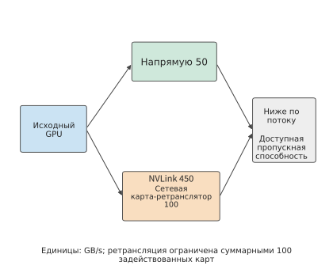
Рисунок 7-13. Путь с использованием соседнего сетевого адаптера. Прямой путь передаёт не более 50 GB/s; два ретранслирующих адаптера обеспечивают в сумме 100 GB/s, причём данные сначала должны пройти по NVLink с пропускной способностью 450 GB/s до соседней GPU. Два пути объединяются далее по потоку, где итоговая пропускная способность дополнительно ограничивается внешней сетью и доступной пропускной способностью получателя. Стрелки показывают направление передачи.
Рассчитаем ветвление на рисунке 7-13: прямой путь и путь ретрансляции могут передавать данные одновременно, однако внутри пути ретрансляции данные должны последовательно пройти два этапа. Поэтому прямой путь и путь ретрансляции в сумме обеспечивают \(50+\min(450,100)=150\) GB/s. Обозначим суммарную пропускную способность, допускаемую внешней сетью и трактом приёма, через \(B_D\). Тогда фактическая пропускная способность отправки равна
где \(B_D\) также измеряется в GB/s. При \(B_D\le50\) напрямую подключённый сетевой адаптер уже полностью использует пропускную способность последующего тракта, поэтому ретрансляция не даёт выигрыша. При \(50<B_D<150\) выигрыш от ретрансляции растёт вместе с доступной пропускной способностью последующего тракта. После достижения 150 GB/s новым узким местом становится суммарная пропускная способность двух задействованных соседних адаптеров. Если NVLink одновременно передаёт трафик локальной редукции и доступная для ретрансляции локальная пропускная способность падает ниже 100 GB/s, путь ретрансляции начинает ограничиваться этим локальным участком. Передача полезной нагрузки объёмом 1,125 GiB по прямому пути с пропускной способностью 50 GB/s занимает примерно 24,2 ms; при доступной пропускной способности последующего тракта 100 GB/s время снижается до 12,1 ms, а при 150 GB/s — до 8,1 ms.
Приведённый анализ использования соседних сетевых адаптеров по пропускной способности предполагает, что объём данных каждой передачи достаточно велик. При распределении (dispatch) и объединении (combine) на этапе декодирования MoE каждый ускоритель должен отправлять тысячи небольших сообщений. В таком случае необходимо также проверить, сколько запросов в секунду способен инициировать сетевой адаптер, то есть величину \(1/\delta\) из раздела 7.3.4. При \(\delta\approx18.6\) ns для реализации надёжного соединения RoCE, рассмотренной в том разделе, сетевой адаптер способен инициировать примерно 54 миллиона запросов в секунду. На линии с пропускной способностью 50 GB/s скорость инициирования становится узким местом раньше пропускной способности только для сообщений размером менее приблизительно 0,93 KB. Одно сообщение при распределении MoE содержит скрытый вектор одного токена: при размерности скрытого состояния 7168 его размер составляет около 7 KiB для FP8 и около 14 KiB для BF16. Оба значения значительно превышают эту точку пересечения, поэтому на ускорителе с востребованным экспертом первой по-прежнему исчерпывается пропускная способность; достаточно распределять данные между соседними сетевыми адаптерами по числу байтов. Скорость инициирования исчерпывается раньше пропускной способности только при размере сообщения менее 1 KB, например при поштучной отправке управляющих сообщений. При рассмотрении размещения реплик экспертов в разделе 9.4.2 способность сетевого адаптера обрабатывать пакеты в такой ситуации также учитывается как ресурс, для которого необходимо предусмотреть резерв.13
И для иерархической редукции, и для размещения экспертов, и для ретрансляции через несколько сетевых адаптеров порядок анализа одинаков: изобразить путь, рассчитать объём данных, передаваемый по каждой линии и через каждый интерфейс, а затем найти операцию с наибольшей продолжительностью.
Эксперимент 7-5 · Основное задание: как локальная пропускная способность и общий выход влияют на выбор алгоритма редукции
Полностью повторите расчёты примера 7.2, а затем пересчитайте непрерывное кольцо и иерархическую редукцию для контрольной конфигурации: четыре A100 80GB PCIe на каждом сервере, двухточечные соединения между ускорителями через PCIe Gen4 с пропускной способностью 32 GB/s в каждом направлении и два порта двухпортового ConnectX-7 по 25 GB/s, использующие общий слот PCIe с пропускной способностью 32 GB/s. Для контрольной конфигурации увеличьте локальную пропускную способность с 32 GB/s до 300 GB/s, обеспечиваемых мостом NVLink, предполагая, что такую пропускную способность имеет каждое ребро между четырьмя ускорителями. Объясните, почему выбор алгоритма редукции в контрольной конфигурации изменится на противоположный, а в конфигурации этой главы — нет. Затем увеличьте число используемых портов на каждом сервере контрольной конфигурации с одного до двух и трёх, сохраняя пропускную способность слота равной 32 GB/s. Постройте график зависимости времени редукции от числа портов и укажите, после какого числа портов дальнейшее увеличение уже не сокращает время.
7.2.5 Многорельсовая топология¶
Иерархическая редукция из раздела 7.2.1 направляет каждую из восьми пар участников по отдельной rail. В эталонной архитектуре DGX SuperPOD вычислительная сеть организована в виде многорельсовой топологии (rail-optimized): восемь сетевых адаптеров каждого сервера подключены к восьми разным leaf-коммутаторам, причём \(i\)-й сетевой адаптер каждого сервера подключён к \(i\)-му leaf-коммутатору. Этот leaf-коммутатор вместе со всеми подключёнными к нему сетевыми адаптерами образует \(i\)-ю rail. В пределах одной группы из 32 серверов трафик одной rail достигает адресата за один переход через leaf-коммутатор, а трафик между разными rail проходит через spine-коммутатор.36 Именно так устроена сеть коммутации «один коммутатор на каждую rail» на рис. 7-1.
На межсерверном этапе иерархической редукции rank \(i\) объединяется в пару с rank \(i+8\): rank \(i\) использует \(i\)-й сетевой адаптер сервера A, а rank \(i+8\) — \(i\)-й сетевой адаптер сервера B; оба адаптера подключены к \(i\)-му leaf-коммутатору. Поэтому трафик каждой из восьми пар участников остаётся внутри своей rail и проходит только через один leaf-коммутатор; ни один байт не проходит через spine-коммутатор. Каждая rail передаёт по 24 MiB в каждом направлении, две фазы занимают в сумме 0,505 мс. Если сосредоточить эти 192 MiB на одном сетевом адаптере, потребуется 4,03 мс; одновременная работа восьми rail сокращает это время примерно в восемь раз.36 В верхней части рис. 7-14 показано такое согласованное формирование пар, а в нижней — рассматриваемое далее несогласованное формирование пар.
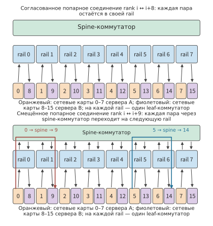
Рис. 7-14. Восемь rail изображены как восемь вертикальных полос; на каждой полосе находятся leaf-коммутатор и сетевые адаптеры с одинаковыми номерами на двух серверах. В верхней части rank \(i\) объединяется в пару с rank \(i+8\): байты каждой пары остаются на своей полосе и проходят только через один leaf-коммутатор. В нижней части rank \(i\) объединяется в пару с rank \(i+9\): каждая пара должна перейти с \(i\)-й rail через spine-коммутатор на \(i+1\)-ю rail, поэтому все 192 MiB в каждом направлении проходят через spine-уровень.
Если изменить формирование пар так, чтобы rank \(i\) объединялся с rank \(i+9\) (rank 7 — с rank 8), rank \(i\) по-прежнему использует \(i\)-ю rail, но узел на другом конце использует уже \(i+1\)-ю rail. Байты каждой пары должны сначала попасть в \(i\)-й leaf-коммутатор, а затем через spine-коммутатор перейти в \(i+1\)-й leaf-коммутатор. Это относится ко всем восьми парам без исключения, поэтому все 192 MiB в каждом направлении проходят через spine-уровень. Объём данных, отправляемых каждым сетевым адаптером, не изменился, и нижняя граница времени межсерверного этапа по-прежнему составляет 0,505 мс. Изменилось то, что теперь эти байты занимают каналы spine-коммутатора, которые приходится совместно использовать с межрельсовым трафиком других заданий; кроме того, трафик проходит через многопутевое хеширование, рассматриваемое в разделе 7.5.3. Согласованность формирования пары зависит только от совпадения номеров rank внутри соответствующих серверов: если значения \(i \bmod 8\) равны, обмен остаётся внутри одной rail; если не равны — проходит через spine-уровень. Чередующееся кольцо (рис. 7-5) в многорельсовой топологии также несёт эти издержки: все шестнадцать его рёбер пересекают границы серверов, причём ребро \(i\to i+8\) согласовано, а ребро \(i+8\to i+1\) — нет, поэтому половина байтов проходит через spine-уровень.
Применим это правило к суперузлу из 128 карт, описанному в разделе 7.6.4. В каждом из шестнадцати серверов установлено по восемь карт, а группа тензорного параллелизма занимает все восемь карт одного сервера. Карта с координатой тензорного параллелизма \(t\) на каждом сервере является \(t\)-й картой и использует \(t\)-ю rail. После редукции внутри суперузла шестнадцать участников параллелизма по данным с одной координатой обмениваются между суперузлами шардом градиента этой координаты. Шарды всех восьми координат имеют одинаковый размер — на каждой карте \(G=8\) GB, — поэтому каждая из восьми rail передаёт одну восьмую объёма передачи между суперузлами: 14 GB из 112 GB. Ни одна rail не загружена сильнее остальных. Более загруженная rail появляется только при разных размерах шардов, например при неравномерном разбиении тензора, либо при отказе сетевого адаптера, когда его трафик через NVLink перенаправляется на соседний адаптер, как описано в разделе 7.2.4.
Эксперимент 7-6 · Продолжение: согласование rail и трафик spine-уровня
На двух серверах измените формирование пар так, чтобы rank \(i\) объединялся с rank \(((i+4)\bmod 8)+8\), и вычислите число байтов, проходящих через spine-уровень. Затем смоделируйте отказ сетевого адаптера 3 на сервере B: трафик rank 11 через NVLink поровну использует сетевые адаптеры 2 и 4. Вычислите объём байтов, передаваемый каждой rail, и время межсерверного этапа. Наконец, в суперузле из 128 карт из раздела 7.6.4 замените конфигурацию на TP16, где одна группа охватывает два сервера, и объясните, шарды каких координат передаёт каждая rail и остаётся ли нагрузка равномерной.
7.3 Пути удалённого доступа и параллелизм¶
7.3.1 Передача данных и уведомление о завершении¶
В разделе 7.2 лишь рассчитывалось, по каким каналам проходят байты и сколько времени занимает их передача, но не объяснялось, как именно эти байты передаются получателю. На межсерверном этапе иерархической редукции ускоритель 0 уже получил сегмент после локальной редукции, и теперь его необходимо передать ускорителю 8. Передача данных включает две операции: записать сегмент в место, доступное для чтения ускорителем 8, и сообщить ускорителю 8, что данные готовы. Первая операция изменяет местоположение данных, а вторая сообщает получателю, когда можно начинать вычисления.
При одностороннем чтении и записи из раздела 6.5.5 инициатор напрямую обращается к заранее разрешённой удалённой памяти. Например, ускоритель 0 записывает сегмент в область приёма ускорителя 8: сетевая карта инициатора считывает сегмент из локальной памяти, а сетевая карта целевой стороны записывает его в память ускорителя 8; программа на другой стороне в этом перемещении не участвует. Двусторонний обмен сообщениями требует взаимодействия отправителя и получателя: получатель заранее отправляет запрос на приём и предоставляет буфер, а коммуникационная система сопоставляет поступившее сообщение с соответствующим запросом. Крупные сегменты с заранее известным целевым адресом удобно передавать прямым чтением или записью. Уведомления от нескольких отправителей лучше помещать в очередь сообщений, которая различает отдельные уведомления и передаёт их соответствующим потребителям данных, далее называемым потребителями.
Таким образом, крупные данные и уведомления можно обрабатывать раздельно: сначала записать сегмент, а затем отправить короткое сообщение о том, что сегмент доступен. Объединение записи и уведомления в одну операцию отправки также позволяет избежать одной дополнительной операции инициирования. Получив уведомление, потребитель начинает редукцию; порядок записи и уведомления подробно рассматривается в разделе 7.4.
Запись и уведомление завершают передачу данных. Если получатель также должен обработать данные заданным способом, используется удалённый вызов процедур (remote procedure call, RPC): другой стороне отправляется запрос на выполнение указанной функции, а один вызов включает передачу параметров, удалённое выполнение и возврат результата. Способ кодирования параметров напрямую влияет на накладные расходы этого пути: JSON представляет собой текстовый формат обмена данными, а base64 кодирует каждые 3 байта двоичных данных четырьмя текстовыми символами. При помещении 1 MiB двоичных данных в поле JSON в формате base64 объём закодированной полезной нагрузки увеличивается примерно на треть. Переход на двоичные запросы одновременно сокращает число передаваемых байтов и объём работы по кодированию.
В серии прилагаемых к книге измерений RPC между хостами размер запроса уменьшился приблизительно с 1,33 MiB до 1,00 MiB, а медианное время обработки на CPU клиента — примерно с 9,8 ms до 1,1 ms. В 11 из 20 пар полноценных вызовов общее время сократилось; длительность сетевой передачи и ожидания пересылки колебалась сильнее.10 Эти измерения разделяют затраты времени на два вида: сокращение объёма кодирования экономит локальное время CPU, но для уменьшения длительности всего вызова необходимо также сократить ожидание при сетевой передаче, пересылке и удалённом выполнении.
Эксперимент 7-7 · Дополнительное задание: насколько устранение преобразования при кодировании сокращает время удалённого вызова
Выберите из прилагаемых записей пары вызовов с одинаковой полезной нагрузкой и постройте временную шкалу кодирования на клиенте, отправки, ожидания, декодирования и выполнения на сервере. Объясните, почему время выполнения на сервере уже входит во время ожидания на клиенте. Рассчитайте, на сколько уменьшается число передаваемых байтов после исключения кодирования base64, и проанализируйте, как доля затрат на кодирование влияет на ускорение полного вызова.
7.3.2 Инициирование обмена данными непосредственно ускорителем, который их сформировал¶
В разделе 7.3.1 чтение и запись, сообщения и RPC рассматривались с точки зрения получателя. На стороне отправителя возникает другой вопрос: кто первым узнаёт, что данные готовы, и кто отвечает за отправку запроса. Шард карты 0 формируется на GPU. Если обмен данными инициирует CPU, то GPU сначала сообщает о готовности, CPU формирует запрос и передаёт его сетевой карте, а после завершения операции возвращает статус GPU. На этом пути управления приходится несколько раз передавать управление, и даже если полезная нагрузка никогда не проходит через память CPU, сами эти передачи требуют времени.
Сетевая карта RDMA уже может обращаться к авторизованной удалённой памяти; технология NVIDIA GPUDirect RDMA дополнительно позволяет сетевой карте напрямую обращаться к зарегистрированной и авторизованной памяти GPU, поэтому полезную нагрузку не нужно передавать через память хоста. Когда обмен данными инициирует CPU, он по-прежнему отвечает за отправку запроса и обработку уведомления о завершении; при инициировании обмена ускорителем GPU самостоятельно формирует или запускает запрос и считывает статус завершения, поэтому данные можно отправить сразу после окончания вычислений. URMA — предоставляемый UB унифицированный интерфейс удалённого доступа к памяти. Обращение GPU к памяти другого устройства через NVLink и инициированный устройством асинхронный доступ через UB представляют собой реализации такого непосредственного взаимодействия для соответствующих путей передачи. На рисунках 7-15–7-18 последовательно показаны RPC между хостами, GPUDirect RDMA с отправкой запроса через CPU, доступ GPU через NVLink и инициированный устройством доступ URMA.
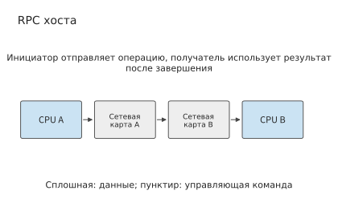
Рисунок 7-15. Параметры RPC между хостами отправляются с хоста, на котором находится CPU A, проходят через сетевую карту и сеть, достигают хоста с CPU B, после чего удалённая сторона выполняет запрос. Стрелка обозначает путь данных параметров, а результат возвращается в обратном направлении.
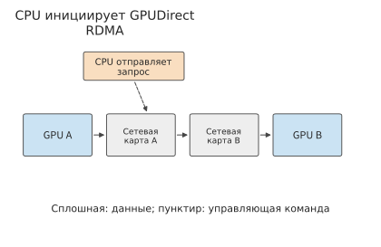
Рисунок 7-16. Данные передаются непосредственно из памяти GPU через сетевую карту в память удалённого GPU; пунктирная линия обозначает отправку запроса через CPU, при этом полезная нагрузка не проходит через память CPU. Отображение памяти и права доступа настраиваются заранее.
После исключения памяти хоста из пути данных можно также изменить сторону, инициирующую операцию. На рисунке 7-17 GPU самостоятельно инициирует обращение к памяти другого устройства, устраняя необходимость каждый раз передавать запрос через CPU.
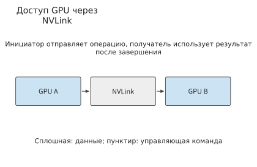
Рисунок 7-17. GPU обращается к памяти другого GPU через NVLink, а инициирующий GPU выполняет авторизованную операцию доступа.
На рисунке 7-18 те же отношения инициирования и завершения перенесены на интерфейс асинхронного доступа UB. Если проследить полезную нагрузку по сплошной линии, а управление — по связям отправки запроса и завершения, можно разделить затраты на передачу данных и управление запросами.
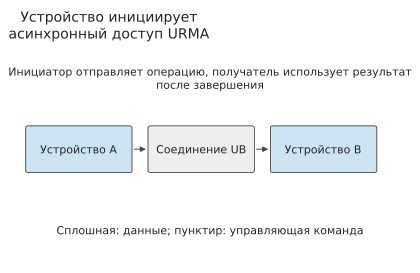
Рисунок 7-18. Устройство отправляет через URMA асинхронные операции чтения и записи, а полезная нагрузка проходит по соединению UB до целевого устройства; после завершения запроса статус и результат проверяются в соответствии с требованиями интерфейса.
Это изменение можно объяснить с помощью формулы времени передачи из раздела 7.2. Если воспользоваться примером из раздела 7.2.2 с каналом 50 GB/s, передача 8 KiB данных занимает около 0,16 μs; если время запуска сократить с 5 μs до 2 μs, общее время уменьшится примерно с 5,2 μs до 2,2 μs, то есть более чем вдвое. Передача полезной нагрузки размером 64 MiB сама по себе занимает около 1,3 ms, поэтому экономия тех же 3 μs оказывается пренебрежимо малой. Следовательно, при передаче небольших объёмов данных в первую очередь следует сокращать затраты на отправку запросов, а при передаче больших объёмов — увеличивать пропускную способность.
Централизованная организация обмена данными на стороне хоста позволяет предоставить различным программам универсальный механизм отправки запросов и обработки завершения. При выполнении модели производители и потребители данных, а также условия их готовности чётко определены, поэтому часто выполняемые операции инициирования и обработки завершения можно перенести на устройство: система заранее настраивает отображение адресов и права доступа, после чего устройство непрерывно инициирует вычисления и обмен данными без промежуточной передачи управления хосту при каждой операции. Выигрыш заключается в сокращении времени запуска, как в приведённом выше примере.
Операционная система отвечает за настройку отображения памяти, прав доступа и выделение ресурсов; устройство — за быстрое выполнение уже авторизованных операций; уведомление о завершении возвращает результат операции среде выполнения. При таком разделении обязанностей поток на устройстве, инициирующий обмен данными, также может ограничивать пропускную способность. Чтобы проанализировать это ограничение, сначала нужно определить, сколько времени занимает ожидание одного запроса и можно ли во время ожидания инициировать другие запросы, а затем вычислить количество запросов, обрабатываемых за единицу времени.
7.3.3 Семантика памяти: Load/Store и Read/Write¶
Чтобы различать эти два варианта, сначала нужно разделить способы выражения доступа. Удалённый доступ обычно выражается двумя способами: инструкциями процессора для чтения и записи (Load/Store) и явными асинхронными запросами на чтение и запись (Read/Write). В обоих случаях необходимо регистрировать ещё не завершённые запросы; различие заключается в том, кто управляет этими записями.
Результат Load может непосредственно стать входными данными последующих инструкций. Процессор отслеживает эту зависимость и во время ожидания выполняет другие независимые инструкции. В случае асинхронного запроса целевой адрес, длина и условие завершения помещаются в очередь; программное обеспечение может последовательно отправить несколько задач, а перед использованием результатов дождаться завершения соответствующих запросов. В первом случае зависимости передаются механизму исполнения инструкций, во втором — событиям и среде выполнения. В этой книге Load/Store называется синхронным доступом, чтобы подчеркнуть, что зависимостями инструкций управляет аппаратное обеспечение, а не то, что у процессора в каждый момент может быть только одна незавершённая операция доступа к памяти. Современные процессоры способны параллельно выполнять несколько независимых Load, а Store могут сначала попадать в буфер.
| Критерий сравнения | Load/Store | Асинхронные Read/Write |
|---|---|---|
| Инициация и путь | Инструкция процессора, направляемая посредством отображения адресов в доступную память; в UB её может обслуживать контроллер на кристалле | Отправка запроса с адресом, длиной и другими параметрами; продвижение через очередь, doorbell или интерфейс инициации устройства |
| Зависимости и завершение | Аппаратное обеспечение отслеживает потребителей Load; для удалённой видимости Store отдельно требуются гарантии порядка | Среда выполнения ожидает заданного события завершения, после чего использует результат или освобождает буфер |
| Типичная область применения | Мелкогранулярное чтение, доступ по указателям, часто используемые данные, для которых важны низкие накладные расходы на отправку | Пакетное перемещение активаций, KV, весов и явные конвейеры |
| Ограничения параллелизма | Зависимости инструкций, слоты незавершённых обращений к памяти, преобразование адресов и аппаратные ресурсы | Очереди запросов и завершений, зарегистрированная память, возможности отправки программного обеспечения или устройства |
| Обработка сбоев | Зависит от механизмов платформы для тайм-аутов, исключений и ошибок памяти | Ошибки могут сообщаться отдельно для каждого запроса; всё равно необходимо обрабатывать тайм-ауты, частичную запись и освобождение буферов |
Оба интерфейса могут использовать семантику памяти, однако по одному лишь названию интерфейса нельзя судить о когерентности кэшей. Односторонние Read/Write не требуют, чтобы удалённое приложение для каждого запроса отправляло соответствующий запрос приёма (Receive), но всё равно требуют предварительного разрешения и гарантии действительности памяти на всё время операции; Load/Store также не гарантируют автоматическую когерентность общих кэшей между узлами. Реализованный в OpenURMA путь Load/Store не поддерживает когерентность кэшей между узлами: зависимости между записью, публикацией и чтением должно организовывать само приложение. Исключение обменов через PCIe достигается благодаря изменению расположения контроллера и пути запроса; простое переименование программного интерфейса в Load не даст тех же преимуществ.31
Разложение задержки одного удалённого чтения. Разобьём критический путь одного удалённого чтения 64 B на несколько этапов и зададим задержку каждого из них; сумма задержек всех этапов даст полное время чтения. Здесь сравниваются три пути: асинхронное чтение через периферийную сетевую карту PCIe, асинхронное чтение через контроллер шины на кристалле (интерфейс URMA в UB) и инструкция Load через контроллер шины на кристалле. Заданы следующие условия: одно прохождение по шине на кристалле занимает 30 ns; одна запись doorbell через PCIe — 150 ns, одно чтение PCIe DMA — 500 ns, запись — 250 ns; прохождение линии в одном направлении — 100 ns; попадание в строку памяти на целевой стороне (нужная строка DRAM уже открыта) — 30 ns; задержка конвейера сетевой карты вычисляется по числу тактов при частоте 322 MHz: 9 тактов для периферийной сетевой карты, 25 тактов для асинхронного пути UB и 8 тактов для пути Load; отправка через интерфейсную библиотеку, построение дескриптора запроса и опрос записи о завершении относятся к программным накладным расходам. В следующей таблице этапы перечислены в порядке прохождения критического пути; пустая ячейка означает, что на данном пути этого этапа нет.
| Этап | Категория | Периферийная сетевая карта PCIe | Асинхронное чтение UB | UB Load |
|---|---|---|---|---|
| Отправка через интерфейсную библиотеку | Программная отправка | 50 | 50 | |
| Построение дескриптора запроса | Программная отправка | 30 | 30 | |
| Запись doorbell | Прохождение PCIe | 150 | ||
| Чтение дескриптора сетевой картой через DMA | Прохождение PCIe | 500 | ||
| Отправка по шине на кристалле | Шина на кристалле | 30 | 30 | |
| Передающий конвейер сетевой карты | Конвейер сетевой карты | 28 | 78 | 25 |
| Линия в прямом направлении | Линия | 100 | 100 | 100 |
| Приёмный конвейер сетевой карты на целевой стороне | Конвейер сетевой карты | 28 | 78 | 25 |
| Чтение памяти хоста сетевой картой через DMA на целевой стороне | Прохождение PCIe | 500 | ||
| Доступ к памяти по шине на кристалле на целевой стороне | Шина на кристалле | 30 | 30 | |
| Попадание в строку памяти на целевой стороне | Память и завершение | 30 | 30 | 30 |
| Отправка ответа сетевой картой на целевой стороне | Конвейер сетевой карты | 28 | 78 | 25 |
| Линия в обратном направлении | Линия | 100 | 100 | 100 |
| Получение ответа сетевой картой | Конвейер сетевой карты | 28 | 78 | 25 |
| Запись полезной нагрузки ответа через DMA | Прохождение PCIe | 250 | ||
| Запись сведений о завершении через DMA | Прохождение PCIe | 250 | ||
| Завершение по шине на кристалле | Шина на кристалле | 30 | 30 | |
| Опрос очереди завершений | Память и завершение | 70 | 5 | |
| Опрос через интерфейсную библиотеку | Память и завершение | 30 | 30 | |
| Сериализация выделения порядкового номера | Память и завершение | 50 | ||
| Итого (расчёт) | 2222 | 746 | 419 | |
| Измерено в симуляции | 2236 | 757 | 500 |
Время конвейера сетевой карты в таблице округлено, а итоговые значения получены суммированием до округления. Суммарное время пути через периферийную сетевую карту PCIe составляет 2222 ns, из которых 1650 ns приходится на пять прохождений PCIe; в асинхронном пути UB этапов PCIe нет, а его суммарное время составляет 746 ns; путь Load исключает также программную отправку и опрос, поэтому его суммарное время составляет 419 ns. На рис. 7-19 три пути представлены в виде составных полос по категориям этапов. В реализации OpenURMA автора при потактовой симуляции двух узлов в тех же условиях были измерены значения 2236, 757 и 500 ns, которые отличаются от расчётных соответственно на 14, 11 и 81 ns. Разница обусловлена постоянными накладными расходами симулятора на передачу данных между модулями; у пути Load меньше всего этапов и самое короткое общее время, поэтому доля этих накладных расходов в нём максимальна.32
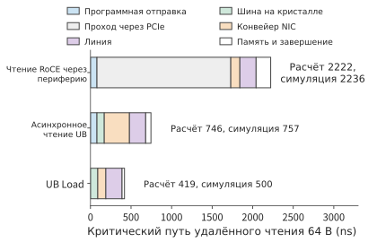
Рис. 7-19. Критические пути трёх вариантов представлены составными полосами по категориям этапов. На пути через периферийную сетевую карту PCIe светло-серый участок соответствует пяти прохождениям PCIe; у двух путей через шину на кристалле этого участка нет, а путь Load дополнительно исключает программную отправку и опрос завершения. Справа от полос указаны расчётные значения и результаты симуляции.
Дополнительные этапы пути через периферийную сетевую карту PCIe — не девять отдельных неэффективных участков, каждый из которых можно оптимизировать, а следствие трёх структурных причин. Во-первых, запрос сначала необходимо записать как дескриптор в память хоста, а затем сетевая карта должна его прочитать, поэтому возникают два этапа: отправка через интерфейсную библиотеку и построение дескриптора. Во-вторых, сетевая карта и процессор имеют собственные адресные пространства, поэтому возникают три этапа: запись doorbell, DMA дескриптора и DMA на целевой стороне. В-третьих, после завершения операции необходимо уведомить процессор через границу адресных пространств, поэтому возникают DMA ответа, DMA записи о завершении и два опроса. После подключения контроллера к шине на кристалле этапы второй категории объединяются в одно прохождение по этой шине. После перехода на инструкцию Load собственный механизм процессора для отслеживания зависимостей заменяет механизм уведомления о завершении, поэтому этапы первой и третьей категорий исчезают.
Существует и четвёртый путь: сетевая карта остаётся периферийным устройством PCIe, но дескриптор запроса создаётся и используется процессором внутри неё, то есть применяется третье место инициации из раздела 6.4.4. Согласно расчёту по той же таблице, этот путь исключает два прохождения — запись doorbell и чтение дескриптора сетевой картой через DMA, — что в сумме даёт 650 ns. Отправка через программный интерфейс и построение дескриптора запроса, занимающие 80 ns, выполняются процессором сетевой карты; для них используются те же значения. Запись полезной нагрузки через DMA, запись сведений о завершении через DMA и чтение через DMA на целевой стороне сохраняются. Итог составляет около 1572 ns — между 2222 ns для периферийного варианта и 746 ns для пути через шину на кристалле. Исключаются прохождения на пути управления, но передачу данных и уведомление о завершении всё равно приходится выполнять между двумя адресными пространствами. Этот путь не симулировался: значение получено только расчётом по данным таблицы.
При изменении задержки линии меняется и соотношение между тремя путями. Общее время каждого пути равно фиксированным накладным расходам плюс удвоенная задержка линии в одном направлении \(L\): для периферийной сетевой карты PCIe это 2022 ns плюс \(2L\), для асинхронного пути UB — 546 ns плюс \(2L\), для пути Load — 219 ns плюс \(2L\). На рис. 7-20 показан случай изменения \(L\) от 50 ns до 500 ns: три прямые имеют одинаковый наклон, но разные точки пересечения с осью; абсолютная разница всегда составляет около 1.8 μs, тогда как относительная разница сокращается с 5.3 раза при \(L=100\) ns до 2.5 раза при \(L=500\) ns. Чем короче линия, тем больше относительная выгода от расположения контроллера, поэтому наиболее заметна она внутри суперузла; на длинных линиях между дата-центрами основную часть общего времени составляет задержка самой линии. Эти две составляющие имеют разную природу. Величина \(2L\) определяется скоростью распространения сигнала, её невозможно исключить ни на одном пути, и она представляет собой физический нижний предел времени одного удалённого чтения. Часть фиксированных накладных расходов, превышающая фиксированные накладные расходы пути Load, — это цена уровня абстракции, причём только пять прохождений PCIe составляют 1650 ns. Разница между расчётными значениями и результатами симуляции, равная 14, 11 и 81 ns, относится к первому типу расхождений, описанному в разделе 1.3.4: модель не учитывает постоянные накладные расходы на передачу между модулями симулятора. После добавления этой величины расхождение исчезает, и искать дополнительные накладные расходы реализации не требуется.
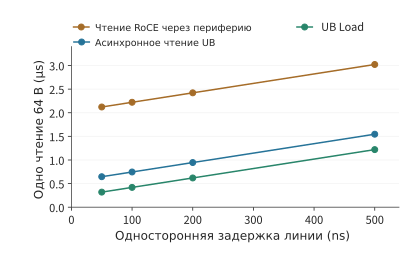
Рис. 7-20. Зависимость общего времени одного чтения 64 B от задержки линии в одном направлении. Наклон всех трёх прямых равен 2, а точки пересечения с осью определяются соответствующими фиксированными накладными расходами; разница между путями обусловлена фиксированными накладными расходами и не зависит от задержки линии.
Далее при одинаковой задержке доступа сравним параллелизм и зависимости, а затем рассмотрим повторное использование данных. Первое применимо к обоим типам интерфейсов, второе относится к выбору размещения: «обращаться к удалённым данным по требованию или заранее переносить их в локальную память». Прямое удалённое чтение не равнозначно Load, а предварительный перенос не связан с каким-либо одним конкретным интерфейсом.
Рассмотрим восемь независимых удалённых чтений. Аппаратное обеспечение способно одновременно обрабатывать восемь операций, каждая из которых при прохождении по указанному в таблице пути через периферийную сетевую карту PCIe занимает около 2.2 μs с учётом накладных расходов на отправку. Последовательное выполнение по схеме «отправить, дождаться, использовать» займёт около 17.8 μs; если отправить все восемь операций одновременно, их результаты поступят вместе примерно через 2.2 μs. Если первое чтение возвращает адрес для второго, а второе — адрес для третьего, то каждое следующее чтение можно отправить лишь после завершения предыдущего. Число чтений, которые можно инициировать одновременно, зависит от числа запросов с известными адресами и без взаимных зависимостей.
Параллельное чтение использует независимость между разными запросами. Если несколько запросов обращаются к одним и тем же данным, можно воспользоваться другим отношением: при первом обращении перенести данные в локальную память, а при последующих чтениях многократно использовать эту копию. Предположим, что потребитель полностью считывает неизменяемый снимок KV объёмом 144 MiB и в локальной памяти достаточно места для его размещения. Удалённое чтение и перенос выполняются через описанную в этой главе сетевую карту с пропускной способностью 50 GB/s в каждом направлении; для локального чтения используется пропускная способность HBM в H100, равная 3350 GB/s. С учётом запуска и записи на целевой стороне одно удалённое чтение занимает около 3.02 ms, фиксированные затраты на один перенос — около 3.07 ms, а каждое последующее локальное чтение — около 0.046 ms.16
Обозначим число повторных использований через \(r\). Приближённое время двух путей равно
Чтение после переноса становится быстрее при \(r>3.07/(3.02-0.046)\approx1.03\), то есть выгода появляется начиная со второго полного чтения. При однократном чтении прямое удалённое чтение немного быстрее (3.02 ms против 3.12 ms); при четырёх чтениях предварительный перенос в локальную память сокращает общее время примерно с 12.1 ms до 3.3 ms. По сети снимок передаётся только один раз, а объём передачи уменьшается с 576 MiB до 144 MiB. На рис. 7-21 показаны два пути использования, а на рис. 7-22 — точка пересечения накопленного времени.
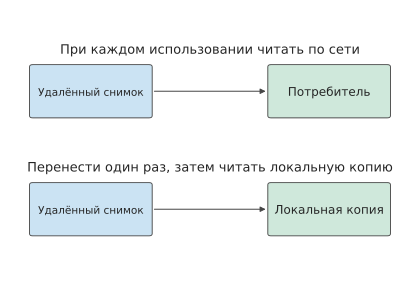
Рис. 7-21. При каждом обращении к удалённой стороне одни и те же данные передаются повторно; в нижней части рисунка данные сначала переносятся в локальную память, а затем многократно используются. Оба пути обрабатывают один и тот же неизменяемый снимок.
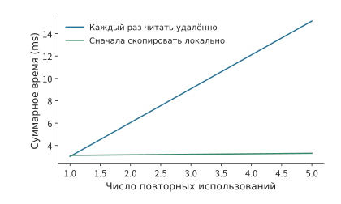
Рис. 7-22. Накопленное время двух методов при каждом полном чтении снимка объёмом 144 MiB. Предварительный перенос в локальную память требует однократных фиксированных затрат, но начиная со второго чтения экономит время.
Различие между двумя кривыми обусловлено выбором: «однократно оплатить перенос или каждый раз выполнять чтение через сеть». Теперь изменим объём данных, читаемых за одно обращение. Если один вызов обращается лишь к небольшому числу участков снимка, его можно передать по ссылке, чтобы удалённая функция читала данные по требованию. Предположим, что при каждом обращении читается только 10% снимка, а вариант с переносом всё равно копирует его целиком. Тогда стоимость удалённого чтения по требованию составляет около \(0.302r\) ms, каждое локальное обращение после переноса — около 0.0046 ms, а точка пересечения соответствует примерно 10.3 обращения. Следовательно, предварительный перенос в локальную память начинает сокращать общее время чтения лишь с 11-го обращения (рис. 7-23).
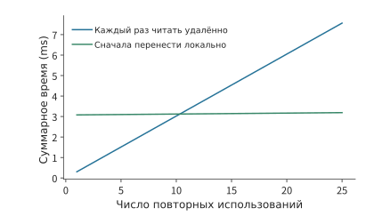
Рис. 7-23. При каждом удалённом и локальном чтении используется только 10% данных, однако при переносе снимок всё равно копируется целиком; поэтому для компенсации фиксированных затрат требуется больше повторных использований.
Таким образом, выбор между удалённым чтением по требованию и переносом всего снимка в локальную память следует делать с учётом доли данных, охватываемой каждым обращением, и числа повторных использований. URPC — это интерфейс удалённого вызова процедур поверх унифицированной системы соединений, который предоставляет удалённый доступ в форме вызова функций и поддерживает такой способ работы; передача по ссылке позволяет вызываемой стороне получать только фактически необходимые данные. В разделе 7.4 будет объяснено, когда следует уведомлять другие устройства об использовании этих объектов и когда освобождать занимаемое ими пространство.2
7.3.4 Модель параллелизма и пропускной способности¶
В разделе 7.3.3 повторное использование сокращало количество удалённых чтений; для запросов, которым всё же приходится проходить по сети, необходимо обеспечить постоянное наличие данных для передачи по каналу. В этом разделе рассчитывается, сколько параллельных запросов требуется для канала с пропускной способностью 50 GB/s в каждом направлении на одной сетевой карте из примера этой главы. Слот запроса — это запись, в которой хранятся адрес, длина и состояние незавершённого запроса: она выделяется при отправке запроса и освобождается после обработки состояния завершения, а до освобождения не может использоваться новым запросом. Предположим, что при каждом удалённом обращении передаётся 256 B, а от отправки запроса до освобождения его слота проходит 2 μs. За эти 2 μs канал может передать 100 000 B, что соответствует объёму данных 390,6 обращения. Чтобы во время ожидания по каналу постоянно передавались данные, необходимо поддерживать не менее 391 транзакции в полёте, то есть уже отправленных, но ещё не полностью обработанных запросов. На рис. 7-24 показан жизненный цикл слота от выделения до освобождения.
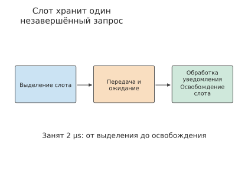
Рис. 7-24. Запрос занимает слот с момента выделения записи, проходит этапы передачи и ожидания, а после обработки состояния завершения запись возвращается. Здесь 2 μs охватывают весь период занятости слота.
В общем случае, если полезная нагрузка одной транзакции равна \(m\), время занятости слота — \(T\), а целевая пропускная способность — \(B\), требуемый параллелизм составляет
Произведение пропускной способности на задержку — это произведение целевой пропускной способности и времени ожидания, выражающее объём данных в полёте, необходимый для непрерывного использования канала во время ожидания. Если дополнительно разделить его на полезную нагрузку одной транзакции, получится количество запросов. Чем быстрее канал, чем дольше ожидание и чем меньше данных возвращает каждый запрос, тем больше незавершённых запросов система должна учитывать одновременно.
Пример 7.3. Почему недостаточное количество слотов удалённого чтения в полёте не позволяет полностью использовать исходящую пропускную способность? Каждая транзакция передаёт 256 B и занимает слот в течение 2 μs, а пропускная способность канала равна 50 GB/s. Найдите эффективную пропускную способность чтения при использовании 128 активных слотов. Затем предположите, что минимальный интервал запуска двух последовательных транзакций блоком обработки запросов равен 18,6 ns — это значение реализации надёжного соединения RoCE, рассматриваемой далее в этом разделе, — и найдите верхнюю границу эффективной пропускной способности при одновременном ограничении количеством слотов и скоростью запуска.
Решение: 128 слотов оборачиваются раз в 2 μs и обеспечивают полезную нагрузку \(128\times256\) B, поэтому максимальная пропускная способность составляет приблизительно 16,4 GB/s. Если в полёте находится только одна транзакция, она составит 0,128 GB/s. Количество выделенных слотов и количество слотов, фактически используемых одновременно, — разные величины.
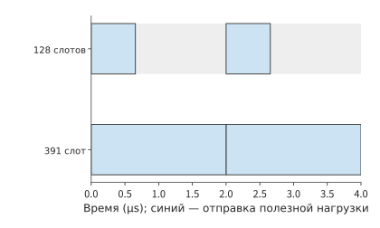
Рис. 7-25. Все 128 слотов расходуются приблизительно за 0,66 μs, после чего для продолжения отправки приходится ждать освобождения первого слота через 2 μs. Для покрытия времени ожидания достаточно 391 слота. Синим показана передача полезной нагрузки, серым — простой канала.
Серые интервалы на рис. 7-25 возникают из-за того, что слоты ещё не освободились; однако даже при достаточном количестве слотов запросы могут не успевать отправляться. Если блок обработки запросов запускает одну транзакцию каждые 18,6 ns, он может запускать не более примерно 54 миллионов транзакций в секунду, поэтому транзакции размером 256 B способны обеспечить лишь около 13,7 GB/s — меньше 16,4 GB/s, доступных при 128 слотах. Даже если увеличить количество слотов до 391, блок обработки запросов не успеет отправлять их с требуемой скоростью. Объединив ограничения пропускной способности канала, количества запросов в полёте и скорости запуска, получим
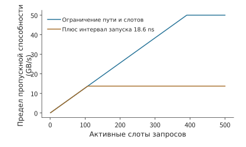
Рис. 7-26. Синяя линия учитывает только ограничения канала и слотов, а оранжевая дополнительно учитывает ограничение на запуск одного запроса каждые 18,6 ns. Увеличение количества слотов поднимает синюю линию, тогда как оранжевая по-прежнему ограничена скоростью отправки около 13,7 GB/s.
где \(T\) — время, в течение которого запрос занимает слот, а \(\delta\) — минимальный интервал запуска двух последовательных запросов. Первая величина определяет, через какое время слот можно использовать повторно, а вторая — сколько запросов можно запускать в секунду. На рис. 7-26 сравнивается эффективная пропускная способность при учёте только слотов и при дополнительном учёте ограничения скорости запуска.11
Обсуждение. Какой параллелизм удалённого чтения необходим для достижения 50 GB/s? При сохранении размера транзакции 256 B интервал запуска требуется сократить до \(256/(50\times10^9)=5.12\) ns, что даже меньше 6,2 ns в описанной ниже реализации UB; кроме того, необходимо поддерживать не менее 391 операции в полёте. Другой вариант — объединять соседние обращения: если передавать по 4 KiB за одну транзакцию, для достижения 50 GB/s достаточно интервала запуска не более 82 ns, тогда как интервал 18,6 ns соответствует приблизительно 220 GB/s, что намного превышает возможности канала; при времени ожидания 2 μs для поддержки 50 GB/s потребуется всего 25 слотов. В первом случае повышается частота транзакций, а во втором каждый запрос передаёт больше данных, снижая накладные расходы на отправку в расчёте на байт.
Один из конкретных источников интервала запуска \(\delta\) виден в реализации OpenURMA: самая медленная ступень конвейера отправки принимает один запрос каждые 2 такта, поэтому при частоте 322 MHz \(\delta\approx6.2\) ns, а максимальная частота составляет около 161 миллиона запросов в секунду. В реализации надёжного соединения RoCE, созданной с помощью того же набора инструментов для сравнения, распределение порядковых номеров в каждом соединении имеет последовательную зависимость, каждая транзакция занимает 6 тактов, \(\delta\approx18.6\) ns, а максимальная частота составляет около 54 миллионов транзакций в секунду. При моделировании непрерывной пачки из 256 транзакций измеренная установившаяся скорость составила соответственно 150 и 54 транзакции на микросекунду: для RoCE результат совпадает с расчётными 53,7 транзакции, а результат UB приблизительно на 7% ниже расчётных 161 транзакции; при увеличении пачки до 1000 транзакций скорость UB возрастает примерно до 159 транзакций на микросекунду, отличаясь от расчётного значения приблизительно на 1%. Подстановка в \(m/\delta\) даёт для транзакций размером 64 B соответственно 10,3 GB/s и 3,4 GB/s, а для транзакций размером 4 KiB — 660 GB/s и 220 GB/s; последние два значения намного превышают 50 GB/s в каждом направлении для сетевой карты 400 Gbit/s из этой главы. Иными словами, при малой полезной нагрузке узким местом служит скорость запросов, а при большой — линия передачи.32
Почему чтение и запись подчиняются разным ограничениям. В PCIe величины \(N\) и \(\delta\) в формуле имеют конкретное происхождение. PCIe — это шина с коммутацией пакетов, и каждое чтение или запись DMA представляет собой пакет уровня транзакций (TLP). Запись является posted-транзакцией: пакет с адресом и данными отправляется и считается завершённым сразу после отправки, не ожидая ответа. Чтение является non-posted-транзакцией: пакет запроса отправляется с тегом, а данные возвращаются в одном или нескольких пакетах завершения и сопоставляются с исходным запросом по этому тегу. Количество одновременно находящихся в полёте запросов чтения у инициатора ограничивается двумя факторами: кредитами, заранее предоставленными получателем для каждого класса транзакций, и количеством тегов, которые может выделить инициатор. На рис. 7-27 показаны оба вида транзакций.
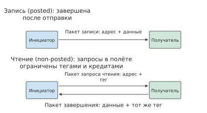
Рис. 7-27. Запись является posted-транзакцией и завершается сразу после отправки одного пакета; при чтении сначала отправляется пакет запроса с тегом, а затем ожидается пакет завершения с тем же тегом, доставляющий данные. Количество операций чтения в полёте не может превышать количество тегов и кредитов.
Ограничения по кредитам и тегам можно наблюдать на реальной платформе. Автор измерил оба ограничения в KV-Direct. Использовавшаяся программируемая сетевая карта обращалась к памяти хоста через PCIe Gen3 x8 с теоретической пропускной способностью 7,87 GB/s; к каждому чтению или записи DMA размером 64 B добавлялись 26 B заголовка пакета и заполнения, поэтому верхняя граница с учётом пакетных накладных расходов составляла 5,6 GB/s, или 87 миллионов операций в секунду. Время кругового обхода случайного DMA-чтения составляло около 1050 ns, поэтому для полного использования канала требовалось 92 одновременно находящихся в полёте чтения; однако хост предоставлял для DMA-чтения только 84 кредита, а DMA-движок FPGA поддерживал лишь 64 тега. Таким образом, в полёте могло находиться не более 64 чтений, что при делении на время кругового обхода 1050 ns давало верхнюю границу около 61 миллиона операций в секунду; измеренная частота случайных чтений по 64 B составила 60 миллионов операций в секунду, что практически совпадает с этой границей. Запись не требует ответа и не занимает тег, поэтому измеренный результат близок к верхней границе, определяемой пакетными накладными расходами. На рис. 7-28 эти границы показаны вместе: чтение ограничивается количеством операций в полёте, а запись — скоростью обработки пакетов; это пример раздельного действия членов \(Nm/T\) и \(m/\delta\) в формуле. Сетевая карта самостоятельно и конвейерно выполняет вычисление адреса, обращение к памяти и обработку результата именно для того, чтобы во время ожидания результата одного чтения продолжать отправлять другие запросы. Эти числа также иллюстрируют порядок проверки из раздела 1.3.4: модель последовательно уточняется с учётом трёх верхних границ — пропускной способности канала, пакетных накладных расходов и количества тегов в полёте, — пока расхождение с измерениями не сокращается приблизительно до 1,6%; на этом этапе в модели уже нет пропущенных факторов, поэтому оставшееся расхождение не требует дальнейшего исследования.12
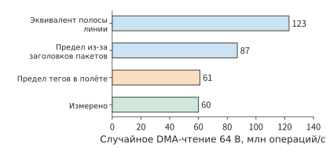
Рис. 7-28. Верхние границы и измеренный результат случайного DMA-чтения по 64 B на платформе KV-Direct. Пропускная способность канала соответствует 123 миллионам операций в секунду, накладные расходы заголовка пакета снижают верхнюю границу до 87 миллионов, а 64 тега при времени кругового обхода 1050 ns допускают лишь 61 миллион операций; измеренный результат составляет 60 миллионов операций, следовательно, количество тегов в полёте является узким местом чтения на этой платформе.
Когда один канал PCIe совместно используется двумя типами трафика, это различие приводит к асимметричной конкуренции. Предположим, что в направлении к GPU по каналу PCIe одновременно идут два потока: сетевая карта отправляет удалённые данные непосредственно в память GPU с помощью posted-записи, а движок копирования GPU переносит данные из памяти хоста в GPU, отправляя запросы чтения, ответы на которые возвращаются в GPU в виде пакетов завершения. Когда канал насыщается, posted-запись согласно протоколу должна продолжать продвигаться, тогда как сторона чтения после исчерпания тегов для операций в полёте не может отправлять новые запросы и вынуждена ждать возвращения пакетов завершения, поэтому ей достаётся значительно меньше половины пропускной способности. В направлении от GPU ситуация иная: копирование из GPU в память хоста представляет собой posted-запись, инициируемую GPU, а при удалённом чтении памяти GPU он должен отправлять пакеты завершения. Оба потока должны сначала получить данные из HBM, а затем отправить их в канал через тракт передачи GPU, поэтому узкое место находится внутри GPU, а не в канале, и оба потока деградируют более сходным образом. Оба направления показаны на рис. 7-29. При анализе такой конкуренции сначала необходимо определить, является каждый поток posted-записью или чтением с пакетами завершения, а затем выяснить, на какой стороне канала и в каком общем компоненте они объединяются. Более позднее исследование общих путей PCIe с помощью инструмента тестирования производительности rPCIeBench также показывает, что объём работы в полёте и конкуренция на входе влияют на распределение пропускной способности.15 Приведённая выше формула позволяет определить узкое место: исчерпана ли пропускная способность канала, ещё не освободились ли слоты запросов или слишком низка скорость запуска запросов.
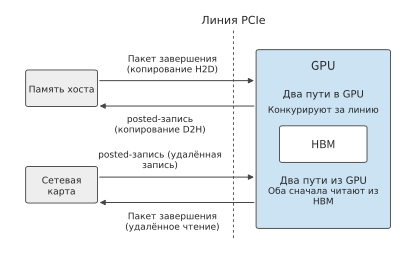
Рис. 7-29. В направлении к GPU posted-запись сетевой карты конкурирует за канал с пакетами завершения, возвращаемыми памятью хоста движку копирования: первая не ожидает ответа, а вторые ограничены количеством тегов для операций в полёте. В направлении от GPU posted-запись при копировании D2H и пакеты завершения удалённого чтения должны сначала получить данные из HBM и совместно используют внутренний тракт передачи GPU.
Иерархическая редукция сокращает объём передаваемых между серверами данных, а параллельная отправка обеспечивает непрерывную передачу по сети; кроме того, программе необходимо знать, когда эти данные можно использовать и когда можно освободить занимаемое ими пространство.
Эксперимент 7-8 · Расширение: сколько транзакций в полёте требуется для полного использования пропускной способности удалённого чтения
В примере 7.3 увеличьте время занятости слота с 2 μs до 4 μs; это время отсчитывается от отправки запроса до момента, когда слот можно использовать повторно. Отдельно рассчитайте количество транзакций в полёте, необходимое для поддержания целевой пропускной способности при передаче 256 B и 4 KiB за одну транзакцию. При фиксированном интервале запуска 18,6 ns найдите минимальный размер транзакции, необходимый для достижения 50 GB/s; затем повторите расчёт для интервала 6,2 ns реализации UB. Наконец, замените независимые адреса цепочкой указателей и объясните, как время чтения всей цепочки зависит от её длины.
7.4 Передача данных, порядок и управление состоянием¶
7.4.1 Создание и использование сегментов данных, повторное использование буферов¶
После доставки данных получатель может ещё не начать их использовать либо уже использовать их. Это похоже на передачу следующему производственному этапу поддона с материалами: поддон уже доставлен, но получателю всё ещё требуется время на обработку материалов, и до её завершения их нельзя заменить следующей партией. Аналогично, при передаче данных необходимо отдельно определять завершение отправки, видимость данных для получателя и завершение их потребления получателем. В разделе 7.3.4 время занятости слота считалось известным; здесь на основе этих событий определяется момент освобождения буфера.
При иерархической редукции карта 0 передаёт локальный сегмент карте 8, а карта 8 складывает его со своим сегментом. Отправителю необходимо знать, когда можно перезаписать исходный буфер; получателю — когда можно читать целевой буфер; следующей операции записи — когда этот целевой буфер можно перезаписать. Этим трём случаям соответствуют разные события.
От создания до освобождения сегмент проходит следующие этапы: создание данных, запись на удалённую сторону, обеспечение видимости данных для получателя, отправка уведомления о готовности, чтение и обработка данных и, наконец, освобождение пространства. Возможность повторного использования исходного буфера зависит от того, гарантирует ли семантика завершения интерфейса, что передача больше не читает из него. Прежде чем получатель начнёт использовать данные, необходимо гарантировать, что запись уже видна ему, а уведомление о готовности опубликовано и проверено в соответствии с соглашением. Перезаписывать целевой буфер можно только после того, как получатель закончит использовать находящиеся в нём данные. Само по себе завершение сетевой передачи не заменяет уведомления «использование завершено».
Например, отправка завершается на отметке 5 μs, потребитель начинает чтение на отметке 8 μs и заканчивает на отметке 12 μs. После завершения отправки отправитель может повторно использовать исходный буфер, но целевой буфер можно перезаписать только на отметке 12 μs. Если следующая запись перезапишет целевой адрес на отметке 6 μs, потребитель прочитает уже следующие данные. Каждый байт будет правильно передан по сети, однако принимающая программа использует неверные данные.
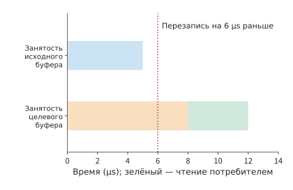
Рисунок 7-30. Исходный буфер занят до завершения отправки на отметке 5 μs; целевой буфер остаётся занят до завершения использования потребителем на отметке 12 μs. Зелёным показан интервал чтения 8–12 μs. Пунктиром отмечена ошибочная преждевременная перезапись целевого адреса на отметке 6 μs.
На рисунке 7-30 два интервала занятости завершаются при наступлении разных событий. Если представить стрелками требования «какого события необходимо дождаться», получится граф зависимостей, описывающий корректную передачу: узлы обозначают работу, а ребро \(u\to v\) означает, что \(v\) должно начаться после завершения \(u\). Момент завершения каждого узла получается сложением наиболее позднего момента завершения всех его предшественников и времени выполнения самого узла. Цепочка с наибольшей длительностью от начального до конечного узла является критическим путём.
Эта модель одновременно объясняет корректность и производительность. Отсутствие зависимости «данные видимы → отправить уведомление» может привести к чтению потребителем ещё не опубликованных данных; лишнее ребро «необходимо также дождаться несвязанной передачи» увеличивает ожидание. Задача управления состоянием — регистрировать, какие узлы завершены, какие зависимости удовлетворены и какие ресурсы можно вернуть.
Принадлежность буфера также влияет на количество копирований. Если коммуникационная библиотека выделяет для отправки отдельный зарегистрированный буфер, результат вычислений сначала потребуется скопировать в него, метаданные — упаковать вместе с данными, а на стороне получателя — распаковать и перенести данные в непрерывную область. Все эти операции копирования и упаковки занимают время SM. Прямая запись результатов вычислений в зарегистрированный буфер позволяет исключить этот этап, но порядок событий, рассматриваемый в данном разделе, становится строже: отправку можно инициировать только после завершения вычислительной записи и обеспечения её видимости для сетевой карты; до фактического завершения отправки этот буфер нельзя перезаписывать; получатель должен по тем же правилам определять, когда данные можно читать, а буфер — освободить.14
7.4.2 Разделение уровня транзакций и транспортного уровня: Jetty и общее состояние¶
Система должна сохранять эти зависимости и состояния завершения. Нужно ли при добавлении каждого коммуникационного отношения сохранять ещё один одинаковый набор транспортных записей? Редукция между шестнадцатью участниками затрагивает лишь небольшое количество коммуникационных отношений. По мере масштабирования системы один процесс получает несколько потоков, каждый из которых обращается к нескольким удалённым целям, поэтому количество отношений растёт как произведение. Приложение должно регистрировать, кто отправил запрос и кому следует направить уведомление о завершении; транспортный уровень должен поддерживать порядковые номера, подтверждения, повторные передачи и состояние перегрузки. Первое идентифицирует приложение, второе обеспечивает надёжную передачу данных.
Конечная точка приложения — логическая сущность, от имени которой программа отправляет коммуникационные операции и получает уведомления о завершении; транспортное состояние хранит ход передачи, включая порядковые номера, подтверждения, повторные передачи и скорость отправки. Возьмём 64 конечные точки приложения, каждая из которых обращается к 128 удалённым целям: всего получается 8192 отношения. Если для каждого отношения отдельно хранить транспортное состояние размером 1 KiB, только транспортная часть займёт 8 MiB. Если отношения, направленные к одной цели, совместно используют одно транспортное состояние, потребуется лишь 128 экземпляров общим объёмом 128 KiB. Экономия достигается за счёт отказа от отдельных транспортных состояний для разных коммуникационных отношений с одной и той же целью.
Идентичность приложения по-прежнему необходимо сохранять. Каждая конечная точка занимает 256 B, всего 16 KiB; привязка каждого отношения занимает 64 B, всего 512 KiB. С учётом этих частей общий объём состояния при отдельном состоянии каждого отношения составляет около 8,52 MiB, а при совместном использовании по целям — около 0,64 MiB. Количество экземпляров транспортного состояния уменьшается до 1/64 исходного значения, а общий объём состояния — приблизительно до 1/13.18
Пусть количество конечных точек равно \(L\), количество целей — \(P\), а каждая конечная точка, привязка отношения и экземпляр транспортного состояния занимают соответственно \(e,r,t\) bytes. Тогда
В статье об OpenURMA это разделение описывается с помощью другой оценки: если локальный интерфейс содержит \(L\) конечных точек приложения, обращающихся к \(P\) удалённым хостам, количество основных записей конечных точек и транспортных контекстов растёт как \(O(L+P)\); если же каждое прикладное отношение использует отдельное надёжное соединение, эта часть растёт как \(O(LP)\). Этот вывод относится только к основному аппаратному состоянию, которое допускает совместное использование: программные отображения, разрешения, незавершённые запросы и кэши не обязательно занимают пространство лишь аддитивного порядка. В приведённой выше формуле сохранён член \(LPr\), поскольку в данной учебной схеме явно учитываются записи привязки каждого отношения. В конце этого подраздела расчёт повторяется с размерами записей из реализации.31
Две формулы непосредственно показывают экономию пространства благодаря совместному использованию: \(LPt\) превращается в \(Pt\), тогда как прикладные отношения \(LPr\) сохраняются. В UB Jetty отделяется от транспортного канала (раздел 6.5.5) именно по этой схеме: одно транспортное состояние может обслуживать несколько прикладных отношений.2
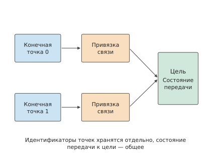
Рисунок 7-31. Две конечные точки приложения по отдельности хранят данные идентификации и записи привязки, а привязки отношений указывают на общее транспортное состояние одной цели. Общая часть поддерживает ход передачи, но конечные точки по-прежнему могут различать свои запросы.
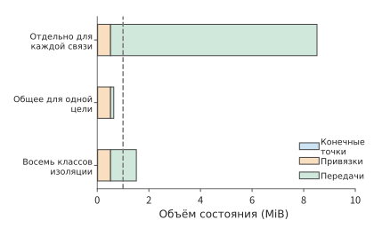
Рисунок 7-32. 64 конечные точки обращаются к 128 целям. Синим показаны записи конечных точек, оранжевым — привязки отношений, зелёным — транспортное состояние. Пунктирная линия обозначает объём 1 MiB; при разделении на восемь изолированных групп для каждой цели сохраняется восемь независимых экземпляров транспортного состояния.
На рисунке 7-31 несколько отношений совместно используют одно транспортное состояние. Это экономит пространство, но может привести к конкуренции за окно отправки этого канала, возможности планирования и ресурсы восстановления. Разделение уровней не требует помещать все транзакции в одну глобально упорядоченную очередь: порядок выполнения прикладных транзакций, порядок их завершения и порядок прибытия сообщений по-прежнему необходимо задавать отдельно. Если реализация использует общую очередь FIFO или последовательное ожидание, потеря пакета или длительный запрос приведут к блокировке начала очереди (head-of-line blocking: если первый запрос останавливается, находящиеся за ним несвязанные запросы также вынуждены ждать). Возможность продолжить выполнение независимых транзакций уменьшает последствия, но не устраняет конкуренцию за общую пропускную способность и окно. Если большое количество незавершённых запросов одного коммуникационного отношения занимает общую очередь, короткие запросы других отношений вынуждены ждать. Если для разных видов нагрузки создать \(K\) групп независимого транспортного состояния, общий объём состояния составит
Для приведённой выше конфигурации фиксированная часть равна 528 KiB, а каждая дополнительная группа независимого транспортного состояния добавляет 128 KiB. В хранилище объёмом 1 MiB помещается не более трёх полных групп независимого транспортного состояния; четырём группам требуется 1040 KiB, что уже превышает доступный объём; восьми группам требуется около 1,52 MiB. На рисунке 7-32 показан объём состояния для этих стратегий совместного использования. Следовательно, изоляцию видов нагрузки необходимо организовывать в пределах доступного хранилища: выделение отдельного транспортного состояния критически важной нагрузке и совместное использование состояния остальными видами нагрузки позволяет уменьшить помехи для критически важной нагрузки.
Помимо совместного использования разными отношениями, состояние можно хранить иерархически. Полное состояние размещается в основной памяти, а часто используемая часть кэшируется на сетевой карте. Совместное использование уменьшает дублирование записей, позволяя кэшу того же размера вместить больше коммуникационных отношений. Если часто используемое состояние остаётся в кэше, сокращается и количество его чтений из основной памяти. Таким образом, экономия пространства состояния позволяет также снизить накладные расходы на обработку запросов.
Размеры записей в реализации и общий объём состояния. Приведённые выше значения 256, 64 и 1024 B заданы в этом разделе. Структуры состояния реализации OpenURMA дают проверяемый набор размеров: каждый Jetty занимает 20 B, каждый зарегистрированный сегмент памяти — 32 B, каждый транспортный канал — 56 B; для сравнения, реализация надёжного соединения RoCE хранит для каждого соединения контекст QP размером 512 B. Пусть \(N\) локальных конечных точек обращаются к \(M\) удалённым конечным точкам. При двух вариантах организации объём состояния, сохраняемого сетевой картой, равен
В сопоставлении с предыдущими формулами здесь \(e=52\), \(t=56\), а \(r=0\): эта реализация размещает привязки отношений в программном отображении, поэтому сетевая карта не хранит аппаратное состояние для каждого отношения. При \(N=M=1024\) попарным соединениям требуется около 512 MiB, а конечным точкам и каналам — лишь 108 KiB, то есть приблизительно в 4855 раз меньше. Даже если дополнить запись Jetty всеми полями спецификации до размера 48 B, отношение всё равно превышает три тысячи. На рисунке 7-33 эти две кривые представлены в логарифмическом масштабе: наклон одной равен 2, другой — 1, а их отношение линейно растёт с \(N\).
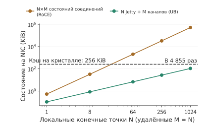
Рисунок 7-33. Состояние, сохраняемое сетевой картой при обращении N локальных конечных точек к M = N удалённым конечным точкам для двух вариантов организации. Попарные соединения превышают объём внутрикристального кэша 256 KiB уже при N немногим больше 20, тогда как конечные точки и каналы даже при N = 1024 занимают меньше половины кэша.
Общий объём состояния и переполнение внутрикристального кэша. Сетевая карта кэширует контексты на кристалле, а не поместившаяся часть остаётся в памяти хоста. При объёме кэша 256 KiB попарные соединения переполняют его при \(512N^2+32N>262144\), то есть при \(N\ge23\); конечные точки и каналы — при \(108N>262144\), то есть при \(N\ge2428\). После переполнения при каждой операции приходится заново считывать контекст. Цена зависит от места его хранения: сетевая карта — периферийное устройство PCIe — читает его из памяти хоста, поэтому инициатор и целевая сторона выполняют по одной операции чтения PCIe DMA, что добавляет к каждой операции около 1000 ns; контроллер внутрикристальной шины читает его из локальной памяти, поэтому на каждой стороне выполняется один переход через внутрикристальную шину и одно обращение к памяти, что добавляет около 200 ns. На рисунке 7-34 задержка двух путей, выведенная в разделе 7.3.3, представлена как функция количества активных конечных точек. Коммуникация «все со всеми» при обучении обычно задействует от нескольких десятков до нескольких тысяч конечных точек — именно этот диапазон. В нём каждое чтение при попарных соединениях требует заново считывать контекст. Симулятор автора определяет переполнение по количеству записей, а не по количеству байтов: 512 для RoCE и 2048 для UB. Поэтому точка переполнения UB в нём соответствует 1024 конечным точкам. При обоих способах оценки вывод одинаков: точка переполнения для конечных точек и каналов отстоит более чем на порядок, а цена после переполнения также на порядок меньше.32
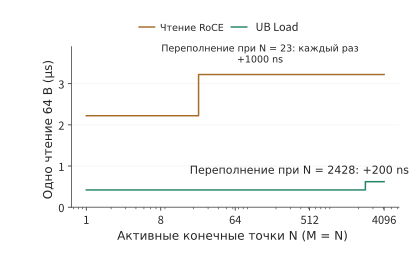
Рисунок 7-34. Зависимость задержки одного чтения 64 B от количества активных конечных точек при внутрикристальном кэше объёмом 256 KiB. Для попарных соединений задержка возрастает на 1000 ns при 23 конечных точках, а для конечных точек и каналов — на 200 ns при 2428 конечных точках. Ось абсцисс имеет логарифмический масштаб.
Эксперимент 7-9 · Расширенный: сколько изолированных групп может поддерживать общее транспортное состояние
Сохранив 64 конечные точки, обращающиеся только к одной удалённой цели, вычислите общий требуемый объём хранилища для отдельного и общего транспортного состояния. Затем увеличьте количество активных целей до 128, доступный объём хранилища — до 2 MiB и определите максимальное количество полных изолированных групп. Сравните влияние увеличения количества конечных точек и количества целей на фиксированное и транспортное состояние. Наконец, используйте размеры записей из реализации — Jetty 20 B, транспортный канал 56 B, контекст соединения 512 B — и определите количество конечных точек, при котором каждый из двух вариантов организации переполнит внутрикристальный кэш объёмом 1 MiB.
7.4.3 Зависимости операций и изоляция отказов¶
В разделе 7.4.2 независимые транспортные группы использовались для уменьшения взаимных помех между разными видами нагрузки. Внутри одной группы операций также может возникнуть лишнее ожидание — это зависит от того, какие операции система принудительно выполняет последовательно. Рассмотрим в качестве примера публикацию сегмента картой 0. Операция A записывает данные D, операция B публикует уведомление «D готовы», а операция C передаёт другие, несвязанные данные. Для корректного использования D необходимо сохранить порядок A→B, тогда как C может использовать другой независимый транспортный путь.
Пример 7.4. Какие операции могут завершиться раньше при ослаблении ограничений порядка? Запись A занимает 20 μs, последующее восстановление — 80 μs, после его завершения D становятся видимыми; B занимает 2 μs; C занимает 10 μs. Сравните два варианта: последовательное завершение A, B и C и требование выполнять B только после завершения A.
Решение: цепочка зависимостей записи, восстановления и уведомления занимает \(20+80+2=102\) μs. При последовательном выполнении C начинается лишь на отметке 102 μs, и вся группа завершается на отметке 112 μs. Если сохранить только необходимую зависимость, C начинается в начальный момент и завершается за 10 μs; цепочка публикации по-прежнему завершается на отметке 102 μs. Вся группа завершается на 10 μs раньше, но C — на 102 μs раньше. Эти варианты показаны соответственно на рисунках 7-35 и 7-36.
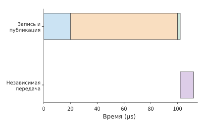
Рисунок 7-35. Независимая передача также поставлена после публикации: сначала запись 20 μs, затем восстановление и обеспечение видимости данных 80 μs, уведомление 2 μs и, наконец, независимая передача 10 μs.
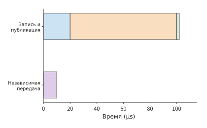
Рисунок 7-36. Запись, восстановление и уведомление по-прежнему выполняются последовательно; передача, использующая независимые ресурсы, начинается на отметке 0 μs. Синим показана запись, оранжевым — восстановление, зелёным — уведомление, фиолетовым — независимая передача.
Если время восстановления увеличится до 200 μs, при последовательном выполнении C завершится лишь на отметке 232 μs, а при независимом — по-прежнему на отметке 10 μs. Удаление лишней зависимости ограничивает вызванную восстановлением остановку цепочкой, которой действительно нужны эти данные. Для последующей задачи, ожидающей C, такая изоляция гораздо важнее, чем ускорение всей группы на 10 μs.17
Глобальный порядок упрощает описание последовательности операций верхним уровнем, но помещает независимую работу в ту же цепочку ожидания. Если граф вычислений уже явно задаёт зависимость публикации A→B, интерфейс и среда выполнения могут гарантировать порядок именно для этой зависимости, позволяя C выполняться независимо. Приложение предоставляет более точные сведения о зависимостях, а сеть на их основе гарантирует порядок только для связанных операций. Это одновременно гарантирует, что после получения уведомления получатель прочитает уже записанные данные, и уменьшает ненужное ожидание.
Теперь предположим, что все операции используют один обрабатывающий модуль: он занят с начала записи A до завершения уведомления B, поэтому C может выполняться только после них. В этом случае само использование ресурса добавляет ребро порядка от цепочки публикации к C, и при обоих вариантах выполнение завершается на отметке 112 μs. Следовательно, программные и ресурсные зависимости необходимо изображать на одном графе: даже после ослабления ограничений порядка в программе ресурсные ограничения по-прежнему ограничивают параллелизм.
Пример проектирования: аппаратные издержки задания порядка по требованию. В авторской реализации OpenURMA четыре режима обслуживания порядка UB и три метки выполнения реализованы в одном конвейере отправки. Тактовая симуляция показывает: независимо от требуемого запросом режима порядка от отправки запроса до выхода первого пакета проходит 24 такта. Трекер порядка заставляет запрос ждать только тогда, когда тот явно требует завершения предшествующих операций; если незавершённых предшествующих операций не больше четырёх, ожидание не превышает 50 тактов, то есть около 155 ns. Запросы, не требующие порядка, этих издержек не несут. Ещё важнее эффект изоляции: когда запрос одного инициатора останавливается в ожидании предшествующей операции, восемь запросов без требований к порядку от четырёх других инициаторов всё равно полностью отправляются за 78 тактов, то есть около 242 ns; остановленный запрос не задерживает остальных инициаторов. Для сравнения, в надёжном соединении RoCE запросы одного QP должны выполняться строго по порядку: если один запрос ожидает, все последующие также ожидают. Именно так на аппаратном уровне проявляется вариант из примера 7.4, в котором C поставлена после A и B.31
Предпосылки проектирования: как глобальный порядок упрощает репликацию и координацию?
В исследовании 1Pipe автор изучал архитектуру, в которой сеть обеспечивает глобальный полный порядок. Если все участники наблюдают операции в одной последовательности, верхний уровень может использовать более простую модель порядка для репликации и координации. При дальнейшей обработке отказов порядок и доставку необходимо рассматривать отдельно: если отправитель завершит работу посреди отправки, система должна определить, какие узлы уже получили данные; если получатель окончательно завершит работу, система должна решить, какие задачи продолжать выполнять. Для решения этих проблем необходимо отделить гарантии порядка от механизмов доставки и восстановления и явно выразить действительно необходимые приложению зависимости.
В приведённом выше примере уведомление можно отправить только после завершения записи. Получатель также должен прочитать данные в правильный момент, иначе даже при корректном порядке уведомлений он может использовать старое значение. Пусть начальное значение D равно 0 и на отметке 2 μs изменяется на 1; флаг готовности становится видимым на отметке 3 μs. Потребитель преждевременно читает D на отметке 1 μs, а флаг — на отметке 4 μs. В результате у него сохраняются новый флаг и старые данные. Даже если на отметке 5 μs вернуть результаты чтения в порядке «флаг, данные», сохранённое значение D всё равно будет равно 0.
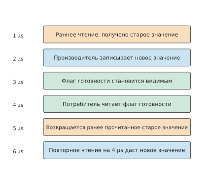
Рисунок 7-37. Фактическое чтение, обновление данных, уведомление о готовности и возврат результата перечислены во временном порядке. На отметке 5 μs по-прежнему возвращается старое значение, прочитанное на отметке 1 μs; если на отметке 4 μs обнаружить конфликт и выполнить повторное чтение, новое значение будет получено на отметке 6 μs.
На рисунке 7-37 перенос вправо пустой точки, обозначающей момент возврата результата, не перемещает закрашенную точку, обозначающую фактический момент получения значения. Этот контрпример показывает, что требование порядка должно применяться именно к моменту чтения данных. Потребитель может прочитать D после наблюдения флага либо выполнить предварительное чтение, проверить наличие конфликта и при необходимости прочитать повторно. Если после обнаружения конфликта на отметке 4 μs повторное чтение занимает 2 μs, правильные данные будут получены на отметке 6 μs. Упорядочивание на стороне получателя переносит ожидание на принимающую сторону, а проверка конфликтов определяет, какие результаты предварительного чтения остаются действительными. Чтобы гарантии порядка действительно упрощали программирование, необходимо сохранять эти состояния и выполнять соответствующие проверки.
7.4.4 Освобождение слотов запросов и обратное давление¶
Слоты запросов из раздела 7.3.4 освобождаются только после того, как программное обеспечение обработает уведомление о завершении; лишь затем ими могут воспользоваться новые запросы. У буферов данных, рассмотренных в разделе 7.4.1, другой срок использования: пока получатель не закончил использовать данные, буфер необходимо сохранять. Если передача ускоряется, а уведомления о завершении обрабатываются недостаточно быстро, накапливается множество запросов со статусом «операция завершена, слот не освобождён».
Возьмём 16 операций по 8 KiB каждая, которые можно отправлять не чаще одного раза в 1 μs и которые завершаются через 5 μs после отправки. При наличии 16 слотов последняя операция отправляется на отметке 15 μs, а к отметке 20 μs завершаются все передачи. Программное обеспечение каждые 20 μs читает и обрабатывает четыре уведомления о завершении. Для 16 уведомлений требуется четыре цикла, поэтому все соответствующие слоты будут освобождены только на отметке 80 μs.
Если слотов всего восемь, первые восемь отправок быстро занимают их все. Девятая отправка должна ждать до отметки 20 μs, когда программное обеспечение обработает уведомления о завершении и освободит слоты; последующие запросы продолжают отправляться партиями, и все передачи завершаются только на отметке 48 μs. Удвоение количества слотов переносит момент завершения передачи с 48 на 20 μs, но полное освобождение всех слотов всё равно происходит лишь на отметке 80 μs.19
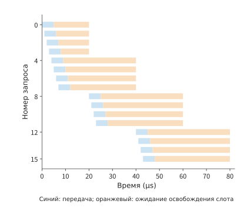
Рисунок 7-38. Синим показан интервал от отправки до завершения передачи, оранжевым — ожидание обработки уведомления о завершении программным обеспечением. Слот освобождается только после завершения оранжевого интервала. Моменты времени всех запросов взяты из журнала событий.
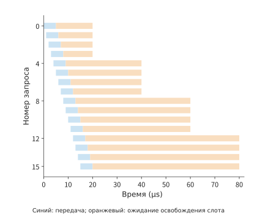
Рисунок 7-39. После увеличения количества слотов последующие запросы отправляются раньше. Уведомления о завершении по-прежнему обрабатываются партиями по четыре каждые 20 μs, поэтому последний слот всё равно освобождается на отметке 80 μs. Временная шкала одинакова на обоих рисунках.
Сравнение рисунков 7-38 и 7-39 показывает: увеличение количества слотов сдвигает синие полосы передачи влево, но длительное оранжевое ожидание справа сохраняется. Устойчивую пропускную способность определяет скорость окончательного освобождения этих слотов. Согласно модели параллелизма и пропускной способности поток обработки уведомлений о завершении обрабатывает лишь \(4/(20\times10^{-6})=200000\) элементов в секунду. При размере элемента 8 KiB это соответствует устойчивой пропускной способности обработки около 1,64 GB/s. Чтобы при таком размере операций достичь 50 GB/s одной сетевой карты, в среднем необходимо обрабатывать около 6,1 миллиона элементов в секунду, то есть приблизительно один элемент каждые 0,164 μs. Увеличение количества слотов позволяет лишь принять кратковременный всплеск запросов; при длительной нагрузке необходимо повысить скорость обработки уведомлений о завершении или увеличить объём данных одной операции.
Если уведомления о завершении обрабатываются недостаточно быстро, отправку вышестоящим компонентом необходимо ограничивать. Это и есть обратное давление из главы 5: когда слоты запросов заполнены, конечная точка приостанавливает или замедляет отправку, пока не освободится слот. Обратное давление управляет вышестоящим компонентом, ограничивая количество незавершённых запросов и предотвращая неограниченный рост объёма незавершённой работы. Если буфер можно освободить только после завершения использования данных удалённой программой, обратное давление распространяется между устройствами; когда множество задач совместно используют транспортное состояние, область его распространения становится ещё шире.
После отказа также необходимо сначала завершить старые запросы и только затем освободить занимаемое ими пространство. После отмены запросов система сначала прекращает новые отправки, затем ожидает завершения старых обращений, находящихся в пути, либо изолирует их и лишь после этого освобождает пространство. Иначе запоздавшая старая запись перезапишет новый объект. Присвоение нового номера версии при каждом повторном использовании объекта, отзыв прав доступа и изоляция потерявшей связь конечной точки служат одной цели: не позволить старым запросам обратиться к уже перераспределённому пространству. После запуска восстановления по тайм-ауту система должна перед повторным использованием пространства подтвердить завершение старых запросов либо запретить им дальнейший доступ. Если несколько конечных точек совместно используют сеть, такая же разница между скоростью поступления и скоростью обработки превращается в очереди внутри коммутатора.
Эксперимент 7-10 · Основной: как ослабление порядка операций уменьшает ожидание, сохраняя корректность данных
Измените длительность независимой операции C в примере 7.4 на 50 μs и определите время завершения всей группы операций и независимой операции при двух вариантах выполнения. Затем предположите, что после получения уведомления потребителю требуется 30 μs на обработку данных, и отметьте наиболее ранний момент, когда в целевой буфер можно записать новые данные. Для контрпримера со старым значением постройте два пути выполнения: чтение после ожидания и предварительное чтение с последующим повторным чтением.
7.5 Перегрузка и надёжность в общей сети¶
7.5.1 От фиксированного трафика к изменяющемуся во времени спросу¶
Добавим к конфигурации из предыдущих разделов ещё одно задание обучения на двух серверах и разместим оба задания в многорельсовой топологии из раздела 7.2.5: два сервера каждого задания относятся к разным группам (по 32 сервера в каждой), поэтому межсерверный трафик в пределах одной rail уже не достигает цели за один переход, а проходит через восходящий канал leaf-коммутатора на уровень spine. Потоки обоих заданий на этой rail хешируются на один восходящий канал 400 Gbit/s, обеспечивающий 50 GB/s в каждом направлении. На межсерверном этапе иерархической редукции каждая сетевая карта отправляет данные со скоростью 50 GB/s, поэтому при совпадении пиков двух заданий спрос превышает пропускную способность канала.
Пример 7.5. Почему очередь возникает, даже если в среднем используется только 40% пропускной способности канала? Каждое из двух заданий раз в 100 ms создаёт пик передачи длительностью 20 ms со скоростью 50 GB/s, а в остальное время ничего не передаёт. Предположим, что изначально очередь пуста, задания отправляют данные по указанному расписанию, а буфер достаточно велик, чтобы вместить весь накопившийся объём.
Решение: средний суммарный спрос двух заданий равен
По сравнению с 50 GB/s средняя утилизация составляет всего 40%. Однако при одновременном начале двух пиков скорость поступления превышает скорость выходного канала на 50 GB/s, и за 20 ms объём накопившихся данных достигает
После завершения пика для опустошения очереди потребуется ещё \(1\ \mathrm{GB}/50\ \mathrm{GB/s}=20\) ms. Оба задания прекращают отправку на отметке 20 ms, но выходной канал продолжает передавать эти данные ещё 20 ms. Если задержать второе задание на 20 ms, пики полностью разойдутся, в любой момент будет поступать не более 50 GB/s, а очередь останется пустой. В обоих вариантах передаётся одинаковый объём данных; различается только относительное время начала отправки двух заданий. На рисунке 7-40 показана скорость поступления при разной степени перекрытия, а на рисунке 7-41 — соответствующий объём накопившихся данных.20
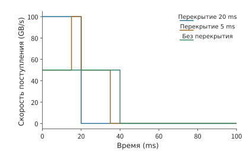
Рисунок 7-40. Каждое из двух заданий отправляет данные по 20 ms каждые 100 ms со скоростью 50 GB/s. Разная степень перекрытия пиков создаёт разную суммарную скорость поступления при общем выходном канале 50 GB/s.
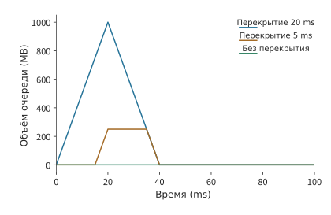
Рисунок 7-41. Накопление во времени разности между скоростью поступления и скоростью выходного канала даёт три пиковых значения: 1000, 250 и 0 MB. В этом расчёте предполагается бесконечный буфер.
Обсуждение. При каком смещении времени отправки в общем выходном канале начнут накапливаться данные? При длительности перекрытия \(h\) дополнительный объём накопившихся данных равен \((100-50)h\). Перекрытие на 5 ms создаёт очередь объёмом 250 MB. Если для этого всплеска выделен буфер всего 512 KiB и изначально очередь пуста, допустимое время перекрытия составляет приблизительно \(512\ \mathrm{KiB}/50\ \mathrm{GB/s}=10.5\) μs. Даже если погрешность времени отправки приводит лишь к перекрытию порядка миллисекунд, это намного превосходит возможности такого буфера.
Идея разведения пиков уже реализована в существующих системах. CASSINI использует периодичность коммуникаций при обучении, размещая задания и планируя время обмена так, чтобы развести пики, а также отслеживает дрейф и корректирует расписание.21 В сопутствующем эксперименте этой книги сравнивались два задания распределённого параллельного обучения по данным (DDP), выполнявшиеся на CPU, с однократным разведением пиков: после задержки одного из заданий на 50 ms их фазы продолжили смещаться во время выполнения, и в трёх измерениях время завершения всей группы заданий, напротив, увеличилось примерно на 2–3%.22 При периодическом планировании фазу необходимо поддерживать постоянно, тогда как управление перегрузкой корректирует отклонившуюся от ожидаемой скорость передачи по обратной связи в реальном времени.
7.5.2 Задержка обратной связи и ёмкость буфера¶
Разведение пиков уменьшает их перекрытие, но фактическое время отправки всё равно может отклоняться от расписания. Поэтому, когда очередь начинает расти, необходимо своевременно замедлить отправителей. Если данные поступают быстрее, чем передаются выходным каналом, избыток накапливается в очереди. Обозначим длину очереди через \(Q\), скорость поступления через \(\lambda(t)\), а скорость выходного канала через \(B\). Пока очередь не пуста и не заполнена,
Если скорость поступления выше скорости передачи, очередь растёт; если ниже — накопившийся объём уменьшается.
Для своевременного снижения скорости поступления применяются механизмы двух типов. Управление потоком на уровне канала позволяет соседнему получателю при нехватке буфера приостановить вышестоящий узел и предотвратить переполнение приёмного буфера. Сквозное управление перегрузкой передаёт сведения об узком месте отправителю, который снижает скорость передачи. Первый механизм быстро предотвращает локальное переполнение, второй адаптирует скорость источника к пропускной способности всего маршрута.
Продолжим пример со скоростью поступления 100 GB/s и выходным каналом 50 GB/s. Пусть общий объём буфера равен 512 KiB, из которых уже занято 256 KiB. Каждую микросекунду дополнительные 50 KB данных занимают оставшееся пространство, которого хватит примерно на 5,2 μs. Если обратная связь приведёт к снижению скорости лишь через 20 μs, возникнет 1 MB избыточных данных; после вычета оставшегося пространства около 738 KB будет отброшено.23
Обозначим оставшийся буфер через \(Q_{\mathrm{free}}\), а задержку от обнаружения перегрузки до снижения скорости — через \(T_f\). Чтобы избежать переполнения, должно выполняться условие
Таким образом, при заданных скоростях поступления и передачи допустимую задержку обратной связи можно вычислить по размеру буфера. Если удвоить свободное пространство, допустимая задержка обратной связи также удвоится; если удвоить разность между скоростью поступления и скоростью выходного канала, допустимая задержка сократится вдвое. При указанных выше скоростях снижение скорости через 50 μs приведёт к накоплению дополнительных 2,5 MB данных.
После получения обратной связи накопившиеся данные ещё нужно удалить из очереди. Если снизить скорость отправки только до 50 GB/s, скорость поступления сравняется со скоростью выходного канала, а уже существующая очередь не изменится. После снижения до 40 GB/s каждую секунду появляется запас 10 GB для опустошения очереди, поэтому для 512 KiB потребуется около 52 μs. От начальной точки очередь вернётся к нулю примерно через 72 μs. Управление перегрузкой должно не только останавливать рост очереди, но и оставлять запас пропускной способности для её опустошения. На рисунке 7-42 показан этот контур обратной связи, а на рисунке 7-43 — заполнение и опустошение буфера.
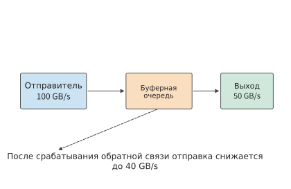
Рисунок 7-42. Данные по сплошной линии поступают в очередь и передаются через выходной канал; пунктирная линия обозначает обратную связь о перегрузке, возвращающуюся отправителю. До получения и применения обратной связи прежняя скорость отправки продолжает заполнять очередь.
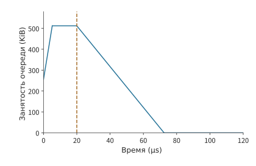
Рисунок 7-43. До применения обратной связи буфер продолжает заполняться. Скорость поступления равна 100 GB/s, скорость выходного канала — 50 GB/s, а буфер объёмом 512 KiB изначально заполнен наполовину. На отметке 5,2 μs он заполняется полностью, и до снижения скорости на отметке 20 μs избыточные входящие данные продолжают отбрасываться; после снижения до 40 GB/s выходной канал опустошает очередь с чистой скоростью 10 GB/s. Время обратной связи и величина снижения скорости заданы условиями.
На рисунке 7-43 момент применения обратной связи определяет, как долго очередь остаётся заполненной, а величина снижения скорости — крутизну нисходящего участка. Все механизмы управления перегрузкой воздействуют на очередь именно посредством этих двух величин. Явное уведомление о перегрузке (ECN) позволяет коммутатору помечать пакеты, возвращая отправителю сведения о состоянии очереди; DCQCN — алгоритм, использующий такие уведомления для регулирования скорости передачи RDMA; методы на основе задержки выявляют образование очереди по изменению времени кругового обхода; C-AQM в UB обеспечивает совместное активное управление очередью конечными узлами и коммутационной сетью: отправитель замедляется на основании состояния очереди ещё до её переполнения. Чтобы понять эти механизмы, сначала нужно определить, какую часть пути обратной связи сокращает каждый из них и что именно меняет отправитель после получения информации. Пороговые значения, шаг обновления и частота обратной связи совместно определяют скорость и амплитуду реакции очереди.
Схождение «многие к одному» и управление потоком на уровне канала. В приведённом выше примере скорость поступления 100 GB/s создавалась двумя заданиями. Однако коллективные коммуникации сами по себе могут создавать ещё более резкие всплески. Если ReduceScatter реализован напрямую, каждый участник отправляет фрагмент \(j\) непосредственно его владельцу \(j\), завершая операцию за один раунд. Если \(N\) участников поочерёдно отправляют данные целевым узлам в одинаковом порядке, причём каждый делает это на полной скорости сетевой карты \(B\), то в период, когда очередь доходит до владельца \(j\), остальные \(N-1\) отправителей одновременно передают данные ему, и ведущий к нему выход коммутатора получает данные со скоростью \((N-1)B\). Если порядок отправки сместить по rank, каждый целевой узел в любой момент будет получать только один поток. Ситуация, когда несколько отправителей одновременно передают данные в один выходной канал, называется incast. Подставим \(\lambda=(N-1)B\) в приведённую выше формулу: каждый отправитель передаёт с \(B=50\) GB/s, выходной канал также имеет скорость 50 GB/s, а свободный буфер равен 1 MiB. При \(N=8\) скорость поступления составляет не 50 GB/s одного потока, а суммарные 350 GB/s семи потоков:37
| \(N\) | Число отправителей | Скорость поступления | Избыточная скорость | Допустимая задержка обратной связи |
|---|---|---|---|---|
| 8 | 7 | 350 GB/s | 300 GB/s | 3,50 μs |
| 16 | 15 | 750 GB/s | 700 GB/s | 1,50 μs |
| 64 | 63 | 3150 GB/s | 3100 GB/s | 0,34 μs |
Управление потоком на уровне канала и сквозное управление перегрузкой соответствуют здесь двум расстояниям обратной связи. Одна из реализаций управления потоком на уровне канала — управление потоком на основе приоритетов (Priority-based Flow Control, PFC) из IEEE 802.1Qbb: когда очередь входного порта превышает порог, он отправляет соседнему вышестоящему порту кадр приостановки, останавливающий канал для конкретного приоритета. Расстояние обратной связи составляет всего один переход: для кабеля длиной 30 m при 5 ns/m кадр приостановки идёт вверх 150 ns, уже находящиеся в линии данные идут вниз 150 ns, а сериализация пакета размером 1500 B при 50 GB/s занимает ещё 30 ns — итого 0,33 μs. Избыточные данные, продолжающие поступать в течение этих 0,33 μs, должны поместиться в буфер. Зарезервированное для них пространство называется headroom, то есть буферным запасом: при \(N=8\) требуется \(300\ \mathrm{GB/s}\times0.33\ \mu\mathrm{s}=99\) KB, при \(N=16\) — 231 KB, при \(N=64\) — 1,02 MB; все эти значения не превышают 1 MiB. В статье о DCQCN для максимального размера передаваемого блока (MTU) 1500 B приводится пример с 22,4 KB на порт для каждого приоритета. Для сквозного управления перегрузкой, то есть маркировки ECN и снижения скорости DCQCN, расстоянием обратной связи служит круговой обход длительностью 20 μs. За эти 20 μs объём поступивших избыточных данных составит соответственно 6,0, 14 и 62 MB, то есть 5,7, 13,4 и 59,1 MiB, и ни одно из этих значений не помещается в буфер размером 1 MiB. На рисунке 7-44 показаны рост очереди и два расстояния обратной связи для трёх значений \(N\).
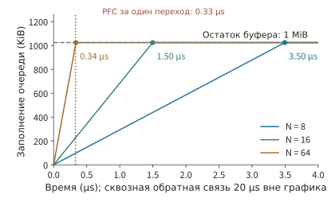
Рисунок 7-44. При \(N=8\), 16 и 64 очередь растёт с избыточной скоростью 300, 700 и 3100 GB/s; точками отмечены моменты заполнения свободного буфера объёмом 1 MiB: 3,50, 1,50 и 0,34 μs. Вертикальная пунктирная линия обозначает расстояние обратной связи PFC в один переход, равное 0,33 μs: до этого момента ни одна из трёх линий не достигает заполнения. Сквозная обратная связь длительностью 20 μs находится за пределами горизонтальной оси рисунка.
Два расстояния определяют распределение обязанностей: PFC за 0,33 μs останавливает соседний узел на расстоянии одного перехода, не позволяя буферу переполниться в течение 20 μs, необходимых DCQCN; затем DCQCN снижает скорость источника до уровня, который способен выдержать выходной канал, после чего приостановку можно снять. Условие работы без потери пакетов только за счёт сквозной обратной связи имеет вид \((N-2)\times50\ \mathrm{GB/s}\times20\ \mu\mathrm{s}\le Q_{\mathrm{free}}\): буфер размером 1 MiB допускает только \(N\le3\), а 4 MiB — лишь \(N\le6\). Если увеличить буфер до 4 MiB, допустимая задержка обратной связи составит 13,98, 5,99 и 1,35 μs, что по-прежнему намного меньше 20 μs.37 Цена PFC рассматривается в разделе 7.5.4: приостановка может по переходам распространяться вверх по сети, а при образовании циклической зависимости возникает взаимная блокировка.
Эксперимент 7-11 · Продолжение: как размер буфера и величина снижения скорости влияют на устранение очереди
Пусть скорость поступления равна 100 GB/s, скорость выходного канала — 50 GB/s, а начальный объём накопившихся данных — 256 KiB. Найдите допустимую задержку обратной связи при общем размере буфера 512 KiB и 1 MiB. Предположите, что обратная связь применяется точно в момент заполнения буфера, а скорость поступления после замедления составляет соответственно 50, 45 и 40 GB/s. Найдите время от применения обратной связи до полного опустошения очереди и объясните, почему при одном из условий очередь опустошить невозможно.
Эксперимент 7-12 · Продолжение: буфер и расстояние обратной связи при incast
Измените скорость выходного канала на 100 GB/s, что соответствует двум сетевым картам, оставив скорость каждого отправителя равной 50 GB/s. Пересчитайте допустимую задержку обратной связи и headroom PFC для \(N=8\), 16 и 64. Затем увеличьте длину кабеля до 100 m, найдите расстояние обратной связи в один переход и определите, останется ли headroom при \(N=64\) в пределах 1 MiB. Наконец, для времени кругового обхода 5 μs найдите максимальное \(N\), при котором избежать потери пакетов можно только за счёт сквозной обратной связи.
7.5.3 Многопутевая передача и повторная передача¶
Управление по обратной связи снижает скорость отправки и тем самым ослабляет перегрузку. Если на других маршрутах остаётся свободная пропускная способность, трафик можно перенаправить туда. Сеть Clos предоставляет несколько возможных маршрутов. Распределение разных соединений по разным маршрутам позволяет рассредоточить трафик с перегруженных каналов. Распределение пакетов одной передачи по нескольким маршрутам позволяет одновременно использовать пропускную способность нескольких каналов, но также переносит на получателя различия в задержках этих маршрутов.
Возьмём BF16-векторы скрытых состояний для четырёх токенов общим объёмом 32 KiB, разделим их на восемь пакетов по 4 KiB и циклически распределим по двум независимым маршрутам со скоростью 50 GB/s. Сериализация каждого пакета занимает около 82 ns, а отправка четырёх пакетов по каждому маршруту — около 0,33 μs. Если задержка распространения на обоих маршрутах равна 1 μs, все данные будут доставлены примерно за 1,33 μs; передача тех же восьми пакетов по одному маршруту потребует около 1,66 μs. Каждый из двух маршрутов выполняет половину работы по отправке, и передача завершается параллельно.24
Изменим задержку распространения на втором маршруте на 9 μs. Последний пакет этого маршрута прибудет только примерно через 9,33 μs. Последующие пакеты, раньше прибывшие по быстрому маршруту, должны ждать заполнения предшествующего пробела, а получателю потребуется буферизовать до 12 KiB данных, пришедших не по порядку. При том же общем числе байтов использование дополнительного маршрута оказывается намного медленнее передачи по одному маршруту, поскольку экономия времени сериализации составляет лишь около 0,33 μs и намного меньше дополнительных 8 μs задержки маршрута.
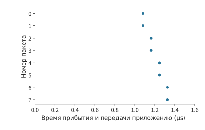
Рисунок 7-45. При задержке распространения 1 μs на обоих маршрутах все восемь пакетов прибывают примерно за 1,33 μs. Точки обозначают прибытие, а горизонтальные линии — ожидание заполнения пробела после прибытия.
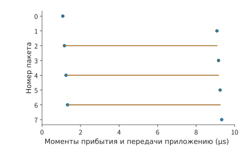
Рисунок 7-46. Задержка распространения на втором маршруте увеличена до 9 μs. Последующие пакеты быстрого маршрута прибывают раньше, но всё равно ждут заполнения предшествующего пробела; все данные становятся доступны для доставки примерно через 9,33 μs. Точки обозначают прибытие пакетов, горизонтальные линии — ожидание заполнения пробела после прибытия, вертикальная ось — номер пакета.
Горизонтальные линии на рисунках 7-45 и 7-46 показывают, что завершение передачи по быстрому маршруту ещё не означает, что все данные можно передать приложению. Два маршрута сокращают время отправки, но могут увеличить время ожидания отсутствующих пакетов. Условие, при котором двухпутевая передача оказывается быстрее, можно вычислить напрямую. При одном маршруте необходимо отправить восемь пакетов, а при двух — по четыре пакета на каждом. Сериализация одного пакета занимает около 82 ns, поэтому два маршрута экономят примерно 0,33 μs. Если дополнительная задержка распространения второго маршрута относительно первого превышает эти 0,33 μs, равномерное распределение теряет преимущество по времени. В канале со скоростью 50 GB/s этот запас лишь немногим больше удвоенной задержки распространения по кабелю длиной 30 m, равной примерно 150 ns, поэтому даже небольшое различие между маршрутами сводит выигрыш на нет. Равномерно делить передачу объёмом в несколько десятков KiB между маршрутами с разными задержками обычно невыгодно. Выбор маршрута или неравномерное распределение должно уменьшать число пакетов на медленном маршруте, чтобы последние пакеты обоих маршрутов прибывали как можно ближе по времени. Многопутевая передача выгодна, только когда время сериализации выделенного каждому маршруту объёма намного превышает различие в задержках маршрутов. Рассматриваемое ниже попакетное распыление 8 MiB относится именно к этому случаю.
Помимо медленного распространения возможна потеря пакетов, которая приводит к ожиданию другого характера. Пусть пакет с номером 0 потерян и повторно передаётся через 20 μs после завершения его первоначальной отправки. Тогда все данные можно передать приложению лишь примерно через 21,2 μs: доставка ждёт заполнения пробела и не зависит от того, насколько рано прибыли остальные пакеты. К этому моменту другие семь пакетов уже находятся у получателя, который буферизовал 28 KiB полезной нагрузки; повторно передать нужно только отсутствующие 4 KiB. Если же начиная с отсутствующего пакета повторно отправить его и все последующие пакеты, придётся снова передать 32 KiB. Выборочная повторная передача использует состояние, фиксирующее ход приёма, и благодаря этому уменьшает объём повторной передачи. На рисунке 7-47 показан случай, когда повторно отправляется только пакет с номером 0. Двухузловая симуляция OpenURMA демонстрирует такое же различие: транспортный уровень UB использует выборочное подтверждение и повторно отправляет только отсутствующие пакеты, поэтому пропускная способность плавно снижается с ростом доли потерянных пакетов; при возврате на N шагов с той же долей потерь приходится повторно передавать всё окно.31
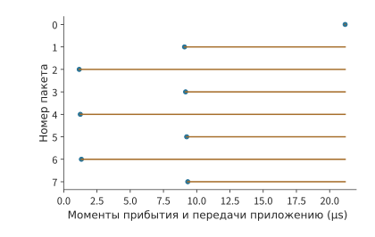
Рисунок 7-47. После потери пакета с номером 0 он повторно передаётся через заданное в примере время ожидания, а остальные семь пакетов сохраняются у получателя. После повторной отправки только отсутствующего пакета все данные становятся доступны для доставки примерно через 21,2 μs. Точки обозначают прибытие пакетов, горизонтальные линии — ожидание заполнения пробела после прибытия, вертикальная ось — номер пакета.
У повторной передачи есть ещё одна независимая проблема: когда считать, что пробел требует восстановления. Если ждать слишком долго, пауза после фактической потери будет большой. Если повторно передать пакет, который лишь задержался на медленном маршруте, возрастёт объём дублирующего трафика. Распределение задержек маршрутов определяет допустимую степень нарушения порядка при обнаружении потерь, а состояние, хранимое получателем, — объём данных, которые можно буферизовать после отсутствующего пакета. Надёжная доставка совместно с зависимостями приложений из раздела 7.4 определяет, какие уже прибывшие операции можно продолжать выполнять.
Конфликты хеширования на нескольких маршрутах. Выше пакеты одной передачи распределялись по нескольким маршрутам. Другой подход, упомянутый в начале раздела, распределяет маршруты по соединениям, то есть потокам. Он не нарушает порядок пакетов, но несколько потоков могут оказаться на одном канале. Когда межгрупповые потоки покидают leaf-коммутатор, для каждого из них необходимо выбрать один из его восходящих каналов. Обычно коммутатор хеширует поля адресов и портов заголовка пакета и по результату выбирает восходящий канал. Этот механизм называется многопутевой маршрутизацией с равной стоимостью (equal-cost multipath, ECMP): все пакеты одного потока проходят по одному маршруту, а разные потоки распределяются по разным восходящим каналам в соответствии с хешем. Хеширование носит случайный характер, поэтому вероятность попадания двух потоков на один восходящий канал ненулевая. Конфликтовать друг с другом могут межгрупповые потоки одного leaf-коммутатора. Хотя смещённое сопоставление из раздела 7.2.5 направляет восемь потоков на уровень spine, они выходят из восьми разных leaf-коммутаторов, на каждом из которых есть только один межгрупповой поток, поэтому на восходящих каналах одного leaf-коммутатора они не встретятся. Выравнивание rail сводит к минимуму число межгрупповых потоков на каждом leaf-коммутаторе именно для предотвращения таких конфликтов. Пусть \(n\) потоков одинаковой скорости на одном leaf-коммутаторе независимо и равномерно хешируются на его \(m\) восходящих каналов: у неблокирующего leaf-коммутатора при \(k=64\) их 32, а у leaf-коммутатора с переподпиской 3:1 — 16. Обозначим через \(L_{\max}\) число потоков на самом загруженном восходящем канале. При отсутствии конфликтов самый загруженный восходящий канал несёт \(\lceil n/m\rceil\) потоков. Если потоки справедливо делят пропускную способность своего канала, а вся группа вынуждена ждать завершения самого медленного потока, её скорость составляет лишь \(\lceil n/m\rceil/\mathrm{E}[L_{\max}]\) от скорости без конфликтов. Распределение максимальной нагрузки вычисляется точно; p99 в таблице — 99-й процентиль \(L_{\max}\), то есть в 99% результатов хеширования число потоков на самом загруженном восходящем канале не превышает это значение:38
| Число потоков \(n\) | Число восходящих каналов \(m\) | Число потоков на самом загруженном восходящем канале без конфликтов | \(\mathrm{E}[L_{\max}]\) | p99 | Вероятность отсутствия конфликтов | Скорость относительно варианта без конфликтов |
|---|---|---|---|---|---|---|
| 8 | 32 | 1 | 1,66 | 3 | 38,6% | 60,1% |
| 8 | 16 | 1 | 2,06 | 4 | 12,1% | 48,5% |
| 32 | 32 | 1 | 3,53 | 6 | \(1.8\times10^{-13}\) | 28,3% |
| 32 | 16 | 2 | 4,83 | 8 | 0 | 41,4% |
| 128 | 16 | 8 | 13,36 | 18 | 0 | 59,9% |
Если на одном leaf-коммутаторе есть только восемь межгрупповых потоков, вероятность полного отсутствия конфликтов на неблокирующем leaf-коммутаторе составляет 38,6%. При возникновении конфликта два потока попадают на один восходящий канал и получают по половине его пропускной способности. На самый загруженный восходящий канал в среднем приходится 1,66 потока, поэтому средняя скорость всей группы составляет лишь 60,1% от скорости без конфликтов. Если число восходящих каналов leaf-коммутатора с переподпиской уменьшено вдвое, вероятность отсутствия конфликтов падает до 12,1%, а скорость — до 48,5%. Хуже всего ситуация, когда каждый из 32 серверов группы создаёт один межгрупповой поток, а неблокирующий leaf-коммутатор имеет ровно 32 восходящих канала: поскольку число потоков равно числу каналов, практически неизбежно, что некоторые восходящие каналы останутся свободными, а на других скопятся по три-четыре потока; скорость всей группы снизится до 28,3%. Если потоков намного больше, чем восходящих каналов, относительные колебания случайного распределения уменьшаются: для 32 потоков на 16 восходящих каналах скорость составляет 41,4%, а для 128 потоков на 16 каналах — 59,9%. На рисунке 7-48 показана нагрузка самого загруженного канала для этих конфигураций. Условие смены характера зависимости: цена конфликтов максимальна, когда число потоков близко к числу восходящих каналов, и меньше, когда потоков намного меньше или намного больше каналов. Избежать этой цены можно двумя способами: использовать выравнивание rail, уменьшая число межгрупповых потоков на одном leaf-коммутаторе, либо отказаться от распределения по потокам в пользу описанного ниже попакетного распыления.
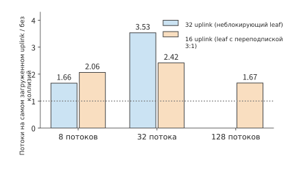
Рисунок 7-48. Когда \(n\) межгрупповых потоков одного leaf-коммутатора хешируются на его \(m\) восходящих каналов, величина, обратная отношению ожидаемого числа потоков на самом загруженном восходящем канале к числу потоков на нём при отсутствии конфликтов, равна скорости всей группы относительно варианта без конфликтов. Неблокирующий leaf-коммутатор имеет 32 восходящих канала, а leaf-коммутатор с переподпиской 3:1 — 16. При распределении 32 потоков по 32 восходящим каналам отношение максимально и равно 3,53; при распределении 128 потоков по 16 восходящим каналам оно снижается до 1,67.
Попакетное распыление. Распределение пакетов одного потока по нескольким маршрутам устраняет конфликты хеширования потоков ценой нарушения порядка, рассчитанного в начале этого раздела. Разделим prefill-активации объёмом 8 MiB, то есть BF16-векторы скрытых состояний для 1024 токенов, на 2048 пакетов по 4 KiB и циклически распределим их по восьми маршрутам со скоростью 50 GB/s и задержками распространения от 1 до 8 μs. Каждый маршрут передаёт 1 MiB, сериализация которого занимает 20,97 μs; с учётом дополнительных 8 μs на самом медленном маршруте все данные прибывают через 28,97 μs, или приблизительно 29,0 μs. Для передачи тех же 8 MiB по одному маршруту требуется 167,8 μs на сериализацию и 1 μs на распространение — всего 168,8 μs. Распыление экономит время сериализации, но добавляет различие в задержках маршрутов. Согласно условию из начала раздела распыление будет быстрее, пока задержка самого медленного маршрута меньше \(168.8-21.0=147.8\) μs; здесь она составляет всего 8 μs. Цена нарушения порядка состоит в необходимости буферизовать раньше прибывшие пакеты: пакеты быстрого маршрута ждут пакеты с меньшими номерами на медленном маршруте, поэтому получатель одновременно хранит до 339 пакетов, или 1,39 MB.38
Ultra Ethernet, спецификация Ethernet для AI и высокопроизводительных вычислений, включает оба этих механизма в транспортный уровень: пакеты распыляются по нескольким маршрутам с помощью значений энтропии (entropy — поле заголовка пакета, по которому коммутатор хешированием выбирает маршрут); типичные конфигурации используют от 64 до 256 значений энтропии, а когда обратная связь указывает на перегрузку маршрута, на него направляется меньше пакетов. Потерянные пакеты восстанавливаются с помощью выборочного подтверждения: повторно передаются только отсутствующие пакеты, а не всё окно с возвратом на N шагов.38 Это в точности соответствует модели на рисунке 7-47: распыление предоставляет пропускную способность всех каналов, выборочная повторная передача ограничивает цену потери отсутствующими пакетами, а получатель ради этого хранит состояние для обработки нарушения порядка.
Эксперимент 7-13 · Продолжение: как различия в задержках маршрутов и повторная передача откладывают доставку по порядку
Изменяйте задержку распространения на втором маршруте от 1 до 9 μs и найдите её значение, при котором время завершения при равномерном распределении по двум маршрутам равно времени завершения при использовании только первого маршрута. Затем распределите пять пакетов на первый маршрут и три на второй и найдите время завершения, если задержка распространения первого маршрута равна 1 μs, а второго — 9 μs. Сохранив условие потери первого пакета, увеличьте время ожидания перед восстановлением с 20 до 40 μs и вычислите момент, когда данные впервые можно будет доставить по порядку, а также объём данных, который к этому моменту потребуется буферизовать.
Эксперимент 7-14 · Продолжение: границы конфликтов хеширования и распыления
Найдите ожидаемую нагрузку самого загруженного канала и скорость относительно варианта без конфликтов при распределении 16 потоков по 32 восходящим каналам. Сравните результат с приведённым в таблице распределением восьми потоков по 16 восходящим каналам, имеющим такое же \(n/m=1/2\). Затем задайте задержки маршрутов от 1 до 30 μs с равными интервалами и найдите время завершения и пиковый объём буфера для пакетов, пришедших не по порядку. После этого найдите задержку самого медленного маршрута, при которой распыление перестаёт быть быстрее одного маршрута. Наконец, измените размер пакета на 1 KiB и объясните, как изменятся число пакетов и объём в байтах при пиковом нарушении порядка.
7.5.4 Взаимная блокировка¶
В разделе 7.5.3 уже прибывшие пакеты приходилось хранить до заполнения пробела, прежде чем освободить пространство. Противодавление конечных узлов и управление потоком на уровне канала также могут распространять такое ожидание вверх по сети: если у получателя нет свободного места, вышестоящий узел не может продолжать передачу. Если действие, освобождающее ресурс, само требует этого ресурса, возникает цикл. Рассмотрим два запроса, занимающих ресурсы A и B. Для завершения первому запросу необходимо получить B, а второму — A. Каждый ждёт, пока другой первым освободит ресурс.
В системе редукции такой цикл может охватывать несколько уровней: запросы заполняют приёмный буфер, ответ о завершении ждёт очереди отправки, а очередь отправки, в свою очередь, ждёт освобождения удалённым узлом пространства, занятого запросом. Если изобразить связь «удерживает предыдущий ресурс и запрашивает следующий» в виде ребра, получится граф зависимостей ресурсов. Когда каждый ресурс цикла удерживается, все условия освобождения одновременно перестают выполняться. На рисунке 7-49 показан такой цикл, а на рисунке 7-50 — описанное ниже решение с резервированием пути для ответа.
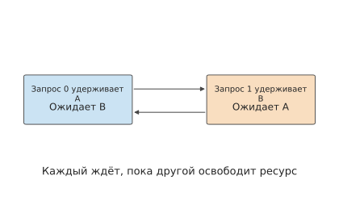
Рисунок 7-49. Два запроса удерживают соответственно A и B, причём каждый ожидает ресурс, удерживаемый другим. Стрелки обозначают отношения ожидания; ни один запрос не может завершиться и освободить ресурс.
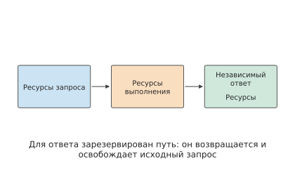
Рисунок 7-50. Запрос, выполнение и ответ используют независимые ресурсы, запрашиваемые в установленном порядке. Для ответа зарезервированы буфер и возможность отправки, поэтому он может вернуться и освободить исходный запрос.
Один из способов решения — установить строгий порядок запроса ресурсов: например, все задания сначала запрашивают A, а затем B. Тогда задание, удерживающее B, уже не возвращается к ожиданию A, и цикл разрывается. Другой способ — зарезервировать для ответа о завершении отдельный буфер и возможность отправки. Пусть у получателя заполнены все восемь слотов данных, а отправитель ждёт их освобождения. Если ответ тоже должен занимать эти слоты данных, всё остановится. Добавление отдельного слота ответа позволяет вернуть сообщение об освобождении после обработки данных, благодаря чему освобождается пространство хотя бы одного запроса и очередь данных может продолжить работу.
Виртуальные каналы разделяют ресурсы с помощью логически обособленных очередей. Если направить запросы и ответы в разные каналы, а затем установить направление запроса ресурсов, можно построить ациклическую структуру зависимостей. Реальный эффект здесь обеспечивают независимая ёмкость и порядок использования.
При обращении к памяти также может потребоваться преобразование адреса и чтение таблицы страниц. Если исходный запрос ждёт преобразования адреса, а для преобразования требуется ещё одно удалённое обращение, они могут образовать такой же цикл, конкурируя за один и тот же исчерпанный набор слотов. При участии автора в проектировании UB приходилось совместно анализировать зависимости между обработкой транзакций, обращениями к памяти и передачей по каналам. Только резервирование ресурсов для уведомлений о завершении, преобразования адресов и восстановления после сбоев позволяет предотвратить остановку системы при перегрузке или отказе.
7.6 От совершенствования коммуникации к выполнению задачи¶
7.6.1 Критический путь начинается с готовности данных¶
В разделах 7.2–7.5 передача, ожидание, уведомление о завершении и освобождение пространства прослеживались на примере одного набора данных. Чтобы определить, сколько времени обучения позволят сэкономить эти улучшения, необходимо также учесть вычисления, создающие и использующие эти данные, и установить момент начала коммуникации. Одна карта может очень рано войти в вызов коллективной коммуникации, но, если другая карта ещё не вычислила градиент, первая будет ждать её внутри вызова. Это ожидание учитывается во времени выполнения коммуникационного вызова, хотя его первопричина находится в предшествующих вычислениях или подготовке данных.
Рассмотрим четырёх участников, которым необходимо выполнить локальную редукцию и которые готовы соответственно в моменты 0, 0, 0 и 2 ms. После готовности всех участников выполняется обмен длительностью 0.4 ms. Согласно графу зависимостей из раздела 7.4, момент начала обмена равен максимальному из четырёх моментов готовности, поэтому вся группа завершает работу через 2.4 ms. Если сократить длительность обмена вдвое, время завершения составит 2.2 ms; если все четыре участника будут готовы в начальный момент, оно составит 0.4 ms. Эти две оптимизации воздействуют на разные узлы графа зависимостей; три соответствующих случая последовательно показаны на рисунках 7-51–7-53.26
Рисунок 7-51. В исходном расписании первые три участника ждут, пока четвёртый будет готов через 2 ms, после чего выполняют обмен длительностью 0.4 ms. Серым показано состояние до готовности, оранжевым — ожидание других участников, синим — обмен.
Рисунок 7-52. Моменты готовности не изменились, длительность обмена сократилась с 0.4 ms до 0.2 ms, поэтому вся группа завершает работу через 2.2 ms вместо 2.4 ms. Серым показано состояние до готовности, оранжевым — ожидание других участников, синим — обмен.
Рисунок 7-53. Все четыре участника одновременно готовы в начальный момент, обмен по-прежнему занимает 0.4 ms, и вся группа завершает работу через 0.4 ms. Масштаб временной оси одинаков на всех трёх рисунках. Синим показан обмен; каждая строка соответствует одному участнику.
Такая рассинхронизация готовности встречается и в крупномасштабных системах обучения. При диагностике производительности обучения система крупномасштабного распределённого обучения MegaScale обнаружила, что пропускная способность сети оставалась стабильной, однако разница во времени начала коммуникации между участниками постоянно увеличивалась, а вместе с ней росло и ожидание в ReduceScatter. Дальнейший анализ показал, что эта разница связана с операциями хоста во время прямого прохода.25 Измерения для четырёх процессов, выполненные на CPU с помощью библиотеки коллективной коммуникации Gloo в сопутствующем эксперименте к этой книге, также показывают ту же зависимость: при входных данных размером 4 KiB, когда один участник опаздывает примерно на 25.1 ms, медиана времени завершения всей группы возрастает приблизительно с 1.6 ms до 26.6 ms; хвостовой участок после прибытия последнего участника по-прежнему занимает около 1.6 ms.27
Поэтому временную шкалу задачи следует строить начиная с момента создания данных. Градиенты разделяются на несколько бакетов, и редукцию каждого бакета можно начинать сразу после вычисления входящих в него градиентов; пока вычисляется следующий бакет, предыдущий может передаваться. Коммуникации разных бакетов конкурируют за сетевую карту и каналы связи, а обновление параметров должно ждать завершения редукции последнего бакета. Разделение на бакеты позволяет начать коммуникацию раньше и выполнять её одновременно с последующими вычислениями градиентов.
7.6.2 Расчёт времени обмена в иерархической сети¶
Пример 7.6. Что следует оптимизировать в первую очередь: алгоритм редукции, порядок выполнения или пропускную способность канала? Используем градиент размером 192 MiB из предыдущего примера. Градиент готов через 20 ms после начала вычислений, а обновление после редукции занимает 2 ms. Сравним плоское кольцо с иерархической редукцией, а затем рассмотрим недостаточный параллелизм, раннее начало обмена и деградацию каналов.
Решение. Сначала вычислим длительность шага обучения при последовательном выполнении редукции и вычислений. Вычисление → редукция → обновление образуют последовательную цепочку. Согласно модели передачи из раздела 7.2, общее время для плоского кольца составляет приблизительно \(20+7.6+2=29.6\) ms, а для иерархической редукции — около \(20+1.3+2=23.3\) ms. Время обмена уменьшается примерно на 83%, но длительность всего шага — лишь приблизительно на 21%. Остальное время занимают вычисление длительностью 20 ms и обновление длительностью 2 ms.
В общем случае, если время, не затрагиваемое оптимизацией, равно \(T_c\), время обмена — \(T_n\), а обмен ускоряется в \(s\) раз, то общее ускорение составляет
Теперь рассмотрим ограничение числа параллельных запросов из раздела 7.3. Если на каждой сетевой карте одновременно находятся в обработке только 128 транзакций по 256 B, а время оборота слота составляет 2 μs, то без учёта скорости отправки удалённая пропускная способность каждой сетевой карты ограничена 16.4 GB/s. При иерархической редукции каждая сетевая карта передаёт между серверами в общей сложности 24 MiB, поэтому одна только удалённая передача занимает около 1.5 ms. С учётом локального обмена и запуска общее время обмена составляет около 2.3 ms, а длительность всего шага — приблизительно 24.3 ms. Чтобы вернуться примерно к 23.3 ms, необходимо увеличить число активных транзакций до 391 и обеспечить достаточную скорость отправки. После замены алгоритма редукции нужно также добиться такой скорости отправки и обработки запросов, которая позволит реализовать преимущества этого алгоритма.
Теперь рассмотрим перекрытие. Предположим, что через 17 ms после начала вычислений данные для обмена уже готовы, а остальные вычисления требуют ещё 3 ms. Эти 3 ms вычислений можно выполнять одновременно с обменом. Они используют независимые аппаратные ресурсы, не конкурирующие друг с другом, а обновление должно дождаться завершения обоих процессов. Тогда
На рисунках 7-54–7-59 последовательно показаны шесть вариантов организации выполнения, причём во всех используется одинаковый масштаб времени. Серый интервал вычислений остаётся неизменным, длина синего интервала обмена определяется объёмом передачи и пропускной способностью, а его начало — моментом готовности данных.
Рисунок 7-54. Последовательное выполнение с плоским кольцом: вычисление — 20 ms, обмен — около 7.6 ms, обновление — 2 ms. Серым показано вычисление, синим — обмен, зелёным — обновление; точка обозначает готовность данных для обмена.
Рисунок 7-55. Здесь используется иерархическая редукция, но вычисление, обмен и обновление по-прежнему выполняются последовательно. Обмен сокращается приблизительно до 1.3 ms, а весь шаг занимает около 23.3 ms. Серым показано вычисление, синим — обмен, зелёным — обновление; точка обозначает готовность данных для обмена.
Рисунок 7-56. Здесь используется иерархическая редукция, а длительность вычислений и обновления остаётся неизменной. Ограничение в 128 транзакций, одновременно обрабатываемых каждой сетевой картой, снижает удалённую пропускную способность, из-за чего обмен растягивается приблизительно до 2.3 ms, а весь шаг — до 24.3 ms. Серым показано вычисление, синим — обмен, зелёным — обновление; точка обозначает готовность данных для обмена.
Рисунок 7-57. Здесь обмен по плоскому кольцу начинается раньше, через 17 ms, и перекрывается с ещё не завершившимися вычислениями. Обмен длительностью 7.6 ms выходит за пределы интервала вычислений, поэтому обновление ожидает его завершения; весь шаг занимает около 26.6 ms. Серым показано вычисление, синим — обмен, зелёным — обновление; точка обозначает готовность данных для обмена.
Рисунок 7-58. Здесь обмен для иерархической редукции начинается раньше, через 17 ms. Он завершается через 18.3 ms, раньше вычислений, поэтому обновление начинается через 20 ms, а весь шаг занимает 22 ms. Серым показано вычисление, синим — обмен, зелёным — обновление; точка обозначает готовность данных для обмена.
Рисунок 7-59. Здесь за основу взята иерархическая конфигурация с ранним началом обмена, но число доступных сетевых карт сокращено до одной. В каждом из двух межсерверных раундов через неё приходится передавать 96 MiB, поэтому обмен занимает около 4.8 ms, выходит за пределы интервала вычислений, а весь шаг длится приблизительно 23.8 ms. На всех приведённых временных диаграммах используется одинаковый диапазон горизонтальной оси. Серым показано вычисление, синим — обмен, зелёным — обновление; точка обозначает готовность данных для обмена.
Если данные готовы через 17 ms и обмен перекрывается с вычислениями, весь шаг с плоским кольцом занимает около 26.6 ms, а с иерархической редукцией — приблизительно 22.0 ms. Иерархический обмен завершается примерно через 18.3 ms, то есть раньше, чем заканчиваются вычисления через 20 ms, поэтому обновление начинается сразу после них. Даже если данные будут готовы не позднее чем через 18.7 ms, иерархический обмен всё ещё полностью перекроется вычислениями. Дальнейшее сокращение времени обмена уже не изменит этот критический путь: для дальнейшего уменьшения общего времени потребуется ускорить вычисление или обновление.
Обсуждение. Станет ли редукция снова узким местом шага обучения после сокращения числа сетевых карт? Если из восьми линий rail останется доступна только одна, все восемь фрагментов каждого сервера придётся передавать через оставшуюся сетевую карту. В каждом раунде в каждом направлении передаётся 96 MiB, а за два раунда — в общей сложности 192 MiB, поэтому время удалённой передачи увеличивается приблизительно с 0.5 до 4.0 ms, а всё время обмена — примерно до 4.8 ms. Если данные готовы через 17 ms, обмен завершается только через 21.8 ms, а весь шаг занимает около 23.8 ms. После увеличения времени обмена возрастает его доля, выполняемая уже после окончания вычислений.
Последовательно сравним эти временные диаграммы: сокращение объёма обмена укорачивает синюю полосу, недостаточный параллелизм удлиняет её, а более ранняя готовность данных сдвигает её влево. Зелёное обновление может начаться только после завершения как вычислений, так и обмена. Модели трафика, параллелизма и зависимостей также задают понятный порядок улучшений. Сначала следует с помощью иерархической редукции сократить межсерверную передачу и обеспечить каждую сетевую карту фрагментом для передачи, затем — полностью задействовать пропускную способность каналов за счёт параллельной отправки и обработки запросов. После достижения предела пропускной способности нужно искать обмены, которые можно начать раньше. Когда время обмена полностью перекрывается вычислениями, следует оптимизировать вычисление или обновление, которые теперь определяют момент завершения.
7.6.3 Коммуникационные узкие места при обучении и инференсе¶
Синяя полоса на рис. 7-54 может значительно сократиться, поскольку передача больших объёмов градиентов занимает основную часть времени коммуникации. При decode с низким параллелизмом скрытый вектор размером 8 KiB многократно передаётся между слоями; сама передача данных занимает крайне мало времени, а основная часть задержки приходится на запуск каждой операции. Рассмотрим кольцо из восьми участников: запуск каждого раунда занимает 5 μs, эффективная пропускная способность каждого участника равна \(B\), а при входном объёме \(M\) время одной редукции составляет
Четырнадцать запусков суммарно занимают 70 μs. Если принять пропускную способность сетевого адаптера из этой главы равной 50 GB/s и приравнять время передачи полезной нагрузки ко времени запусков, получим \(M=2\) MB, то есть примерно 1,91 MiB. При входном объёме выше этого порядка величины растёт доля времени, затрачиваемая на передачу данных; 8 KiB значительно меньше, поэтому основное время уходит на запуски.
Рис. 7-60. В исходной конфигурации запуск каждого раунда занимает 5 μs, а пропускная способность равна 50 GB/s. На зелёной кривой пропускная способность увеличена втрое, до 150 GB/s; на оранжевой время запуска каждого раунда сокращено до 2 μs. При малом объёме данных основное влияние оказывает запуск, при большом — передача.
Если двигаться слева направо по горизонтальной оси рис. 7-60, то на участке с малым объёмом данных общее время остаётся почти постоянным, а на участке с большим объёмом растёт вместе с полезной нагрузкой. Повышение пропускной способности главным образом уменьшает наклон правой части графика, а сокращение времени запуска сдвигает вниз кривую на плоском участке слева.
Для входного объёма 8 MiB увеличение пропускной способности с 50 до 150 GB/s сокращает время одной редукции примерно с 364 до 168 μs; для входного объёма 8 KiB — лишь примерно с 70,3 до 70,1 μs. Предположим, выполняется модель из 36 слоёв, в каждом из которых внимание и FFN требуют по одной такой редукции. Тогда 72 последовательные редукции при обоих значениях пропускной способности занимают примерно 5,1 ms, а разница составляет около 14 μs. Однако сокращение времени запуска каждого раунда с 5 до 2 μs позволяет уменьшить время 72 редукций примерно на 3,0 ms.28
Поэтому обучение и prefill с большим batch легче выигрывают от сокращения объёма передаваемых данных, увеличения пропускной способности и перекрытия операций; для decode с низким параллелизмом важнее сократить синхронизацию между серверами внутри слоя и ускорить пути запуска и завершения операций. Этим также объясняется схема конвейерного параллелизма, рассмотренная в разделе 7.2: размещение одной стадии локально позволяет сократить удалённые коммуникации внутри неё, а количество одновременно обрабатываемых независимых запросов определяет утилизацию конвейера.
Помимо среднего времени, завершение задачи могут задерживать и редкие длительные ожидания. Рассмотрим 100 коммуникаций: 98 из них занимают по 0,4 ms, одна из-за поздней готовности требует дополнительных 2 ms, а ещё одна из-за восстановления — дополнительных 10 ms. Среднее время составляет примерно 0,52 ms; p99 соответствует 99-му элементу отсортированного по возрастанию ряда и равен 2,4 ms. Если сократить обычное время передачи вдвое, p99 снизится до 2,2 ms; если же число событий восстановления увеличится до двух, p99 будет определяться коммуникацией, включающей восстановление после сбоя, и составит 10,4 ms.26
Обычная передача, задержка подготовки данных и восстановление после сбоя — каждый из этих факторов может стать основным при определении времени завершения задачи. Для частых передач малых объёмов данных необходимо снижать накладные расходы каждого запуска; для длительного восстановления после сбоя — ограничивать область его воздействия. После коммуникационного сбоя во время обучения также требуется заново создать коммуникационную группу и восстановить состояние обучения; этот процесс подробнее рассматривается в главе 10.
При сравнении пропускной способности и накладных расходов на запуск схема коммуникации остаётся неизменной. Однако можно изменить и саму схему: корректировка схемы параллелизма и распределения экспертов позволяет сократить число передач; непосредственный запуск коммуникации ускорителем либо перенос обработки запуска и завершения на модуль разгрузки позволяет сократить время каждой передачи. Маршрутизация MoE, dispatch и combine предъявляют требования к сетевым операциям; способность сети эффективно выполнять эти операции, в свою очередь, влияет на гранулярность экспертов и их размещение между узлами. Если специализированное оборудование ускоряет вычисления модели, а время коммуникации остаётся прежним, её доля на критическом пути возрастает.
Такой же анализ трафика применим к переносу состояния при инференсе. Продолжим анализ одного и того же сеанса DeepSeek V4.1, рассматриваемого на протяжении всей книги, и предположим, что этот запрос необходимо перенести на экземпляр, не содержащий его глобальный KV-кэш. Сначала вычислим время передачи полезной нагрузки, соответствующей глобальной истории: контекст равен 128K, а передача выполняется через один ConnectX-7, работающий на скорости 200 Gbit/s и обеспечивающий эффективную пропускную способность 25 GB/s. Передача 439,281 MiB для V4-Flash занимает примерно 18,425 ms, а 111,250 MiB для V4.1 — примерно 4,666 ms. Сжатие состояния сокращает время передачи по этому пути примерно на 13,759 ms.30
Эти 13,759 ms — экономия времени, которую схема миграции может обеспечить на этапе передачи. Если запрос последовательно проходит через очередь, поиск в кэше, передачу и восстановление локального состояния SWA, время восстановления равно сумме этих четырёх этапов; насколько сокращается передача, настолько же сокращается общее время. В главе 9 этот путь восстановления будет сопоставлен с ожиданием на исходном экземпляре и повторным вычислением из входных данных, чтобы определить, где следует выполнять запрос.
7.6.4 Фиксированные 1024 ускорителя: как пересмотреть выбор при увеличении суперузла¶
В предыдущих разделах путь анализировался на примере шестнадцати участников. В этом разделе масштаб увеличивается до 1024 ускорителей: общее число ускорителей остаётся неизменным, а размер суперузла увеличивается с 8 до 64, 128 и 256 ускорителей, чтобы выяснить, какие временные показатели изменятся. Сначала зафиксируем объём вычислений и схему параллелизма, затем по отдельности изменим сетевые условия и в конце заново сравним степени параллелизма.33
Фиксированные модель и объём обучения. Используется конфигурация Qwen3-32B: 64 слоя, размерность скрытого состояния 5120, число параметров \(P=32\times10^9\). 1024 ускорителя H100 SXM 80 GB организованы с тензорным параллелизмом 8 и параллелизмом по данным 128, что обозначается как TP8×DP128; каждая восьмиускорительная группа тензорного параллелизма целиком находится внутри одного суперузла. За одно обновление всегда обрабатывается \(2^{20}\) токенов, а каждая реплика параллелизма по данным обрабатывает один микробатч из 8192 токенов; глобальный размер батча, точность и смысл обновления оптимизатора остаются неизменными. Состояние обучения оценивается в 16 bytes на параметр, то есть 64 GB на ускоритель; дополнительно предполагается, что 8 GB достаточно для активаций и рабочей области. ZeRO (Zero Redundancy Optimizer, оптимизатор с нулевой избыточностью, который распределяет состояния оптимизатора, градиенты и параметры между репликами параллелизма по данным) пока не используется.
Градиенты передаются в BF16, размер хранящегося на каждом ускорителе фрагмента составляет \(G=2P/8=8\) GB. Пусть суперузел содержит \(S\) ускорителей, тогда число суперузлов \(H=1024/S\), а для каждой координаты тензорного параллелизма внутри суперузла имеется \(q=S/8\) участников параллелизма по данным. На рис. 7-61 показана группировка внутри суперузла из 64 ускорителей: восемь ускорителей в одной строке образуют одну реплику модели, а ускорители в одном столбце принадлежат одной группе синхронизации градиентов.
Рис. 7-61. Суперузел из 64 ускорителей состоит из восьми групп тензорного параллелизма. Восемь ускорителей в одной строке обрабатывают разные фрагменты модели для одного микробатча; восемь ускорителей в одном столбце сначала объединяют соответствующие градиенты внутри узла, а затем обмениваются тем же фрагментом с другими суперузлами. Использование всех ускорителей одним заданием обучения не означает, что все они образуют одну группу тензорного параллелизма.
Объём передачи между суперузлами. Сначала \(q\) участников параллелизма по данным внутри узла выполняют ReduceScatter, после чего на каждом ускорителе остаётся фрагмент градиента размером \(G/q\); затем \(H\) суперузлов, хранящих один и тот же фрагмент, выполняют AllReduce; наконец, внутри узла выполняется AllGather. При кольцевом алгоритме каждый ускоритель отправляет между узлами \(2(H-1)G/(Hq)\) данных. Умножив это значение на \(8q\) ускорителей внутри узла, получим объём отправки суперузла в каждом направлении:
При увеличении узла с 8 до 128 ускорителей \(q\) возрастает с 1 до 16, и число байтов, передаваемых каждым ускорителем между узлами, уменьшается, однако суммарный объём отправки одного суперузла снижается лишь со 127 GB до 112 GB. Таким образом, увеличение суперузла в 16 раз не означает, что объём данных, проходящих через внешний интерфейс, также уменьшится в 16 раз.
Для внутриузловой сети NVLink принимается пропускная способность 450 GB/s на ускоритель в каждом направлении: 8 ускорителей соответствуют одному HGX H100; конфигурации от 64 до 256 ускорителей соответствуют NVLink Switch System, которая может объединить до 256 GPU Hopper в один домен NVLink с полной коммутируемой пропускной способностью 115.2 TB/s — ровно по 450 GB/s для каждого из 256 ускорителей. Для межузловой сети на каждый ускоритель приходится одна ConnectX-7 с пропускной способностью 50 GB/s в каждом направлении. Задержки запуска одного раунда внутри узла и между узлами, \(\alpha_L\) и \(\alpha_R\), принимаются равными 0.83 μs, как в разделе 7.1.1. Обозначим внутриузловую пропускную способность на один ускоритель в каждом направлении через \(B_L\), пропускную способность одной сетевой карты в каждом направлении через \(B_{\mathrm{NIC}}\), а доступную одностороннюю пропускную способность внешнего интерфейса всего суперузла через \(B_{\mathrm{out}}\). Тогда время иерархической синхронизации градиентов равно
Слагаемые последовательно соответствуют локальной редукции и сборке, запуску межузлового обмена и более медленному из двух ограничений: сетевой карты или общего внешнего интерфейса. В реальной системе также могут сказываться сечение коммутационной сети и параллельный локальный обмен; в этом примере предполагается, что сеть обеспечивает указанную пропускную способность, а этапы не перекрываются.
Полное время шага обучения. Эффективная вычислительная производительность каждого ускорителя принимается равной 41% от пиковой производительности H100 SXM для плотных вычислений BF16, составляющей 989.4 TFLOP/s, то есть около 405.7 TFLOP/s; 41% — это заявленный BF16 MFU при обучении Llama 3 405B на 16384 ускорителях H100 с TP8, PP16 (конвейерный параллелизм из 16 стадий) и DP128. Согласно определению из раздела 1.2.2, значение 41% означает, что 59% пиковой вычислительной мощности не преобразуется в вычисления модели. Часть этой мощности уходит на работу, не учитываемую в подобных оценках первого порядка, например на квадратичную составляющую механизма внимания и повторные вычисления для экономии видеопамяти во время обучения; другая часть теряется из-за ожидания, которое можно сократить, например из-за разброса времени готовности из раздела 7.6.1 и недостаточного числа запросов в пути из раздела 7.3.4. Время вычислений оценивается как \(6P\times2^{20}/(1024\times405.7\ \mathrm{TFLOP/s})\approx0.485\) s без учёта квадратичной составляющей механизма внимания. Для каждого слоя прямой и обратный проходы в сумме считаются как четыре операции AllReduce тензорного параллелизма; скрытый тензор BF16 для 8192 токенов занимает 80 MiB, что для 64 слоёв даёт около 0.086 s. На обновление оптимизатора дополнительно отводится 0.050 s. Тогда время шага и пропускная способность \(\Theta\) при фиксированном расписании, выраженная в токенах в секунду, равны
Это оценка для фиксированного расписания, в котором вычисления, обмен тензорного параллелизма, синхронизация градиентов и обновление выполняются последовательно; в реальной системе из временной шкалы готовности градиентов вычитается уже перекрытая часть. Для сравнения также рассчитывается непрерывное кольцо параллелизма по данным без иерархии: для каждой координаты тензорного параллелизма имеется только одно межузловое ребро кольца, нагрузка которого не распределяется между другими сетевыми картами. В таблице ниже для каждого случая выбран более быстрый из двух алгоритмов.
| Ускорителей в суперузле | Суперузлов | Локальных участников DP \(q\) | Междоменная отправка на узел | Внешний интерфейс масштабируется с числом ускорителей: время шага / пропускная способность | Внешний интерфейс фиксирован на 400 GB/s: время шага / пропускная способность |
|---|---|---|---|---|---|
| 8 | 128 | 1 | 127 GB | 0.939 s / 1.117 млн токенов/s | 0.939 s / 1.117 млн токенов/s |
| 64 | 16 | 8 | 120 GB | 0.690 s / 1.520 млн токенов/s | 0.939 s / 1.117 млн токенов/s |
| 128 | 8 | 16 | 112 GB | 0.672 s / 1.560 млн токенов/s | 0.935 s / 1.122 млн токенов/s |
| 256 | 4 | 32 | 96 GB | 0.663 s / 1.581 млн токенов/s | 0.896 s / 1.171 млн токенов/s |
В сценарии «внешний интерфейс масштабируется с числом ускорителей» принимается \(B_{\mathrm{out}}=S\times50\) GB/s, то есть сетевые карты каждого ускорителя со скоростью 400 Gbit/s подключены к коммутационной сети. Это означает, что для более крупных узлов предусмотрено больше одновременно работающих внешних портов и достаточная пропускная способность коммутационной сети; сам по себе рост узла не делает внешний интерфейс шире. В сценарии «внешний интерфейс фиксирован» каждый суперузел подключён к коммутационной сети QM9700 только восемью линиями по 400 Gbit/s, то есть суммарно 400 GB/s, как у одного сервера HGX. В последнем случае для конфигурации с 64 ускорителями иерархическая редукция занимает около \(31.1+300.0=331.1\) ms и оказывается медленнее непрерывного кольца, занимающего около 317.7 ms, поэтому в таблице выбрано непрерывное кольцо. Это соответствует критерию целесообразности локальной редукции из раздела 7.2. Столбец «внешний интерфейс масштабируется с числом ускорителей» также подразумевает неблокирующую коммутационную сеть: как рассчитано в разделе 7.1.2, переподписка 3:1 уменьшает внешний интерфейс каждого суперузла втрое, из-за чего междоменная составляющая для узла из 128 ускорителей возрастает примерно с 17.5 ms до 52.5 ms, а время шага увеличивается приблизительно на 35 ms; в разделе 7.2.5 объясняется, как эти междоменные байты равномерно распределяются по восьми магистралям в многорельсовой топологии.
Рис. 7-62. Глобальное число токенов и общее число ускорителей фиксированы. Синяя линия соответствует увеличению внешней пропускной способности каждого узла, оранжевая — ограничению внешней пропускной способности уровнем 400 GB/s, зелёная — увеличению локальной пропускной способности с 450 до 900 GB/s при масштабируемом внешнем интерфейсе. В каждой точке выбирается более быстрый из указанных вариантов: непрерывное кольцо или иерархическая редукция; по вертикальной оси отложена оценка пропускной способности в штатном режиме при фиксированном расписании.
На рис. 7-62 показано изменение пропускной способности с размером суперузла при трёх сетевых конфигурациях. При увеличении размера суперузла с 8 до 64 ускорителей и масштабировании внешнего интерфейса пропускная способность возрастает примерно на 36%. Суперузел из 8 ускорителей состоит всего из одного сервера, поэтому каждому ускорителю приходится синхронизировать через сетевую карту весь собственный фрагмент градиента размером 8 GB, что занимает 0.318 s — треть времени шага. При 64 ускорителях градиент сначала редуцируется по NVLink до одной восьмой исходного размера, и каждый ускоритель обменивается между узлами лишь этим небольшим фрагментом, благодаря чему синхронизация градиентов сокращается примерно до 69 ms. Увеличение размера суперузла со 128 до 256 ускорителей повышает пропускную способность лишь приблизительно на 1.3%, поскольку к этому моменту вычисления и обмен тензорного параллелизма уже занимают 86% времени шага. Если дополнительно увеличить внутреннюю пропускную способность с 450 до 900 GB/s, то есть до пропускной способности пятого поколения NVLink в каждом направлении, для узла из 128 ускорителей получаем около 0.614 s и 1.709 млн токенов/s; этот выигрыш обусловлен повышением внутренней пропускной способности, а не самим размером узла.
Повторное сравнение степеней параллелизма. Более крупный высокоскоростной домен может вместить более крупную группу тензорного параллелизма, но заполнять его целиком необязательно. Для суперузла из 128 ускорителей при масштабируемом внешнем интерфейсе переберём тензорный параллелизм 8, 16, 32 и 64, которому соответствует параллелизм по данным 128, 64, 32 и 16; глобальное число токенов остаётся неизменным. Число последовательностей, обрабатываемых каждой репликой параллелизма по данным, соответственно возрастает, при этом каждая последовательность по-прежнему содержит 8192 токена; число строк локальных матриц и объём передачи при тензорном параллелизме необходимо пересчитать. Если предположить, что все эти формы обеспечивают принятую в примере эффективную вычислительную производительность, время шага составит приблизительно 0.672, 0.753, 0.942 и 1.333 s соответственно. В этом случае TP8 по-прежнему оказывается лучшим вариантом: чем крупнее группа тензорного параллелизма, тем большим объёмом активаций приходится обмениваться каждой реплике, и экономия на локальной синхронизации градиентов не компенсирует увеличение обмена активациями. Когда степень тензорного параллелизма превышает число KV-голов, равное восьми, также необходимо поддерживать схемы с репликацией KV; в этом примере предполагается, что kernel поддерживает такие схемы и располагает достаточным запасом ресурсов.
Этот отбор показывает, что 1024 ускорителя могут совместно обучать одну модель, но это не означает, что каждый слой модели следует разбивать между всеми 1024 ускорителями. При переходе к инференсу несколько более мелких экземпляров также могут независимо обрабатывать запросы и изолировать сбои; в разделе 6.7.4 тем же методом рассчитано влияние размера суперузла на пропускную способность декодирования. В реальном обучении при иной эффективности локальных матриц, других ограничениях памяти или возможностях перекрытия лучшими могут оказаться комбинации тензорного, контекстного и конвейерного параллелизма; следует расширить набор вариантов и пересчитать их, как в разделе 6.7.3, а не считать TP8 из этого примера универсальным ответом.
Затраты на восстановление после сбоев. Все приведённые выше значения пропускной способности предполагают, что задание никогда не прерывается. При синхронном обучении отказ одного ускорителя может остановить всё задание; реплику параллелизма по данным нельзя просто отбросить, как независимый экземпляр инференса, поскольку это изменит образцы и градиенты, используемые в текущем обновлении. Если система не поддерживает локальное восстановление или эластичную схему без изменения смысла обучения, необходимо откатиться к согласованной контрольной точке. Пусть через каждые \(I\) секунд полезных вычислений задание приостанавливается на \(C\) секунд для сохранения контрольной точки, частота прерываний задания равна \(\lambda\), а восстановление занимает \(R\). Если сбои происходят редко и их моменты приблизительно равномерно распределены внутри интервала между контрольными точками, долю накладных расходов можно грубо оценить как
Здесь оценивается только средний полезный прогресс без гарантий хвостовой задержки. Для независимых отказов ускорителей частоту прерываний можно суммировать по числу ускорителей, а отказы общего оборудования суперузла следует учитывать по фактическим доменам отказа: считать все отказы независимыми нельзя. Частота прерываний взята из статистики исследовательского кластера Meta: задание на 1024 ускорителях в среднем прерывается раз в 7.9 часа, причём частота прерываний пропорциональна числу ускорителей, что соответствует среднему интервалу между отказами каждого ускорителя около 337 дней, или около 8090 часов; эти же данные используются в главе 10. Эта статистика уже включает отказы общего оборудования, поэтому в примере не добавляется отдельная составляющая отказов общего оборудования суперузла и частота прерываний не зависит от размера суперузла; любое прерывание запускает восстановление всего задания. Через каждые 600 секунд полезных вычислений обучение приостанавливается на 10 секунд для сохранения контрольной точки. Время восстановления включает фиксированные 60 секунд плюс время чтения 64 GB состояния каждого ускорителя затронутого суперузла через одну линию PCIe Gen5 x16 с пропускной способностью 64 GB/s в каждом направлении. Для узлов из 128 и 256 ускорителей время восстановления составляет соответственно 188 и 316 секунд, а дополнительные накладные расходы — около 3.4% и 3.8%. При масштабируемом внешнем интерфейсе эффективная пропускная способность составляет приблизительно 1.509 и 1.523 млн токенов/s: восстановление узла из 256 ускорителей занимает больше времени, но дополнительные расходы всё ещё меньше прироста его штатной пропускной способности.
Частота прерываний получена из статистики одного кластера, а интервал между контрольными точками и канал восстановления заданы как входные параметры. Увеличение узла может сократить число общих устройств, но также может увеличить ущерб от одного сбоя и объём данных восстановления; при наличии резервных ускорителей, локального восстановления или иной частоты отказов значения следует подставить заново. Поэтому при сравнении вариантов необходимо одновременно указывать штатную пропускную способность, модель восстановления и эффективный прогресс обучения за целевой период; протоколы сохранения контрольных точек и восстановления подробнее рассматриваются в главе 10.
7.6.5 Развёртывание и распространённые заблуждения¶
Большие градиенты, передача малых объёмов данных и восстановление после сбоев подчёркивают соответственно значимость пропускной способности, накладных расходов на запуск и ожидания зависимостей. Сравнивать варианты развёртывания также следует исходя из этих рабочих нагрузок. InfiniBand, RoCE и UB предоставляют конкретные механизмы соединения и обмена данными; при выборе варианта развёртывания сначала сравните пути передачи данных с помощью трёх моделей из этой главы. Соединения между GPU и сетевыми картами, общие интерфейсы и топология коммутаторов определяют доступную пропускную способность; механизмы отправки запросов и обработки завершений определяют фактическую пропускную способность; механизмы синхронизации и восстановления приложения определяют порядок выполнения.
При расчёте доступной пропускной способности сначала необходимо определить схему подключения физических портов. Например, линии UBoE и UB Link в Ascend 950 совместно используют SerDes в соответствии с предварительно заданной конфигурацией, а назначение группы SerDes определяется конфигурацией портов. Фактическую доступную пропускную способность линий в данном направлении можно рассчитать лишь после выбора назначения портов.29 После унификации интерфейсов программы могут обращаться к ним единообразно, а конфигурация портов определяет, по каким линиям проходят данные и какова пропускная способность этих линий.
Опубликованные журналы запусков AllReduce позволяют проанализировать совместное влияние этих факторов. При входных данных объёмом 16 GiB и использовании разных буферов для входных и выходных данных двум восьмикарточным серверам H100 с теми же характеристиками, что и в примере этой главы, требуется около 68,7 ms, а четырём — около 91,0 ms.9 Добавление серверов увеличивает число участников и длину пути взаимодействия.
Выкладки этой главы также позволяют прояснить четыре распространённых заблуждения.
Заблуждение: если общий объём отправленных данных одинаков, то одинаково и время обмена данными. Непрерывное кольцо, чередующееся кольцо и иерархическая редукция отправляют по 5760 MiB, но на межсерверную часть приходится соответственно 720, 5760 и 384 MiB, причём задействуются соответственно одна, восемь и восемь сетевых карт. Время передачи зависит от того, через какие ресурсы проходят данные, а расположение участников изменяет число байтов, приходящихся на каждую сетевую карту.
Заблуждение: низкой средней загрузки линии достаточно, чтобы справиться с пиками обмена данными. Двум периодическим заданиям в среднем требуется лишь 20 GB/s, но при наложении пиков обмена нагрузка достигает 100 GB/s, из-за чего на выходе с пропускной способностью 50 GB/s накапливается очередь в 1 GB. Буфер хранит накопившуюся за определённый период разницу, а фаза и обратная связь определяют, как долго эта разница будет накапливаться.
Заблуждение: если результаты возвращаются по порядку, значит прочитаны правильные данные. Старое значение, прочитанное до обновления данных, не станет новым из-за задержки возврата. Зависимость между публикацией и чтением должна ограничивать фактический момент чтения, а при опережающем выполнении необходимы проверка и повторное чтение.
Заблуждение: ускорение обмена данными равно ускорению задачи. Иерархическая редукция сокращает обмен данными примерно с 7,6 до 1,3 ms, а последовательный шаг обучения — примерно с 29,6 до 23,3 ms; более ранняя готовность данных дополнительно сокращает шаг иерархической схемы до 22,0 ms. Одна и та же оптимизация обмена данными при разном порядке выполнения экономит разное суммарное время.
В понимании автора исходная идея унифицированной системы межсоединений состоит в том, чтобы устройства могли напрямую обращаться к удалённым данным и инициировать обмен, верхний уровень мог явно выражать зависимости, а нижний — повторно использовать одно и то же состояние передачи. Для оценки таких решений нужно ответить на три вопроса: какие байты больше не требуется перемещать, какого ожидания удалось избежать и какие дополнительные состояния запросов необходимо для этого хранить и какую обработку выполнять.
Эксперимент 7-15 · Основное: насколько оптимизация обмена данными сокращает время обучения и инференса
Сначала повторите расчёт примера с 1024 картами, сохраняя неизменным глобальное число токенов, поочерёдно изменяйте размер суперузла, ограничение исходящего трафика и локальную пропускную способность и фиксируйте, какой алгоритм обмена данными и какой кандидат тензорного параллелизма оказывается лучше; затем вдвое уменьшите пропускную способность канала восстановления и сравните эффективный прогресс. После этого повторите расчёт примера 7.6 и постройте полную временную шкалу шага для непрерывного кольца, иерархической редукции, недостаточного числа запросов в пути, опережающего обмена данными и случая, когда остаётся лишь одна сетевая карта. Найдите самый поздний момент готовности данных, при котором иерархический обмен данными полностью перекрывается вычислениями длительностью 20 ms. Затем рассмотрите 36 слоёв и две редукции по 8 KiB на каждом слое, отдельно увеличьте пропускную способность втрое и сократите накладные расходы на каждый запуск до 2 μs и объясните, почему порядок улучшений для двух типов нагрузки различается.
Итоги главы¶
От операторов на одной карте к суперузлам, а затем и к центрам обработки данных — разбиение и планирование всегда строятся вокруг одного и того же набора зависимостей данных. При анализе задач, охватывающих несколько серверов, можно сначала проследить путь одной порции данных: определить по алгоритму, каким участникам её необходимо передать, а затем по топологии выяснить, через какие ресурсы она проходит. В примере с двумя серверами сначала выполняется локальная редукция, благодаря чему объём межсерверной передачи сокращается с 720 MiB до 384 MiB, а все восемь сетевых карт работают одновременно, уменьшая время передачи по каналу, являющемуся узким местом. Сама коммутационная сеть также является ресурсом, который необходимо учитывать в расчётах: коэффициент переподписки определяет ширину разреза, выравнивание rail — пройдут ли байты за один переход или через уровень spine, конфликты хеширования и incast — эффективную пропускную способность и требования к буферам, а редукция внутри сети сокращает межсерверный этап до одного раунда.
После выбора пути обмена необходимо непрерывно отправлять и обрабатывать запросы. Произведение пропускной способности на задержку определяет требуемый объём данных в передаче, объём данных в каждом запросе и интервал запуска определяют, сколько данных можно отправлять в секунду, а скорость обработки уведомлений о завершении — как скоро можно повторно использовать слоты запросов. Совместно используемое состояние экономит ёмкость, изолированное состояние ограничивает взаимное влияние; моменты, когда данные становятся доступными для чтения и когда их можно освободить, определяют, как долго необходимо хранить эти состояния. Поэтапное суммирование времени одного удалённого доступа показывает, подключён ли контроллер после PCIe или непосредственно к внутрикристальной шине, а значит, каковы фиксированные накладные расходы каждого обращения; складывается ли объём состояния соединений по числу конечных точек или умножается по числу их пар, определяет, поместится ли оно во внутрикристальном кэше.
Пример с 1024 картами дополнительно показывает, что размер суперузла, внутрисерверная пропускная способность и внешний канал — это разные ограничения. При расширении высокоскоростного домена с одного восьмикарточного сервера до 64 карт локально выполняется больше операций редукции, доля времени шага, занятая синхронизацией градиентов, снижается с одной трети примерно до одной десятой, а пропускная способность возрастает приблизительно на 36%; при дальнейшем расширении выигрыш быстро уменьшается. После увеличения высокоскоростного домена можно также заново сравнить сочетания тензорного параллелизма и параллелизма по данным, однако ограниченная пропускная способность внешнего канала, стоимость локальной редукции и накладные расходы восстановления могут изменить выбор. Использование заданием всех карт не означает, что каждый вид обмена должен охватывать их все.
Наконец, последовательность подготовки, передачи, использования и восстановления данных следует представить в виде графа зависимостей. Сокращение объёма передаваемых данных и работы по обработке запросов, более ранний запуск независимых операций и сокращение критического пути — три способа превратить оптимизацию сети в выигрыш для задачи. В следующей главе на основе этих возможностей выполнения и межсоединений будет построен сервис инференса для одного экземпляра, а в главе 9 будет рассмотрена организация передачи данных между экземплярами.
-
Методика расчёта размера модели и объёма состояния приведена в разделе «Расчёт ресурсов модели» и в расширенных материалах к главе 7. В примере с Adam смешанной точности для хранения состояния обучения отводится 16 bytes на параметр; в примере инференса модели с триллионом параметров ёмкость весов рассчитывается исходя из 0,5 byte на параметр. ↩
-
Записи сверки спецификации UB и эталонного проекта операционной системы. ↩↩
-
Расчёт двухуровневой редукции градиентов, непрерывное кольцо, чередующееся кольцо. Форма модели фиксирована; каждый раунд синхронизируется барьером, а указанное время представляет собой сумму времени передачи полезной нагрузки и запуска при отсутствии конкуренции: NVLink — 450 GB/s в каждом направлении, одна NIC на карту — 50 GB/s в каждом направлении, запуск каждого раунда — 0,833 μs. Расчёт можно повторить командой
python3 calculations/calc.py hierarchical-gradient --inputs calculations/scenarios/hierarchical-gradient-example.json --format md. ↩ -
Иерархическая редукция в контрольной конфигурации, непрерывное кольцо, чередующееся кольцо: в каждом сервере установлены четыре A100 80GB PCIe; двухточечные соединения между картами через PCIe Gen4 x16 обеспечивают 32 GB/s в каждом направлении; одна двухпортовая ConnectX-7 с двумя портами по 200 Gbit/s, каждый из которых обеспечивает 25 GB/s, совместно использует слот PCIe Gen4 x16 с пропускной способностью 32 GB/s в каждом направлении; запуск каждого раунда — 0,833 μs. В техническом описании A100 80GB для PCIe 4.0 указано 64 GB/s, а для моста NVLink между двумя картами — 600 GB/s; в обоих случаях это суммарная пропускная способность приёма и передачи. В техническом описании ConnectX-7 указаны конфигурации с 1/2/4 портами, суммарная пропускная способность одной карты до 400 Gbit/s и интерфейс хоста PCIe Gen5 x16/x32; контрольная конфигурация рассчитана для установки этой карты в слот PCIe Gen4 x16. Значение локальной пропускной способности 300 GB/s получено повторным расчётом после изменения
local_bytes_per_secondна 300 GB/s. ↩ -
Непрерывное кольцо в контрольной конфигурации с одним портом, двумя портами и тремя портами: межсерверные сообщения распределяются полосами по портам, а пропускная способность слота PCIe Gen4 x16 в каждом направлении остаётся равной 32 GB/s независимо от числа портов. Иерархическая редукция из раздела 7.6.2, когда остаётся только одна сетевая карта, приведена в расчёте иерархической редукции с одной сетевой картой. ↩
-
Техническое описание HGX H100: восемь GPU соединены через NVSwitch, пропускная способность NVLink между GPU составляет 900 GB/s, а скорость сети достигает 400 Gbit/s; в спецификации NVIDIA H100 для H100 SXM указаны NVLink 900 GB/s и PCIe Gen5 128 GB/s, причём оба значения представляют суммарную пропускную способность приёма и передачи; на странице спецификаций NVLink приведена пропускная способность NVLink на один GPU для каждого поколения; техническое описание ConnectX-7: один порт до 400 Gbit/s, интерфейс хоста PCIe Gen5 x16; техническое описание DGX H200: восемь GPU и восемь ConnectX-7 по 400 Gbit/s. Конфигурация с одной сетевой картой 400 Gbit/s на каждый GPU взята из опубликованных журналов запусков experiments/ch07/07-03: в каждом из двух серверов HGX установлено по 8 H100 и 8 сетевых карт ConnectX-7 400 Gbit/s InfiniBand. Rail-топология, в которой сетевые карты с одинаковыми номерами подключены к одному коммутатору, приведена в эталонной архитектуре DGX SuperPOD H100. Пропускная способность PCIe Gen5 x16 в одном направлении, равная 64 GB/s, превышает 50 GB/s сетевой карты, поэтому ограничением этого пути служит сетевая карта. Время запуска каждого раунда 0,833 μs выведено из тех же опубликованных записей: в исходном журнале невнутриместный AllReduce для 16 rank при объёме от 16 B до 128 B занимает 24,93–25,68 μs; берётся 25 μs и делится на 30 раундов кольцевого AllReduce с шестнадцатью участниками. Фактически выбранный NCCL для малых сообщений алгоритм в журнале не опубликован, поэтому здесь выполнен лишь пересчёт по кольцевой модели этой главы. ↩
-
Пример параллелизма модели, основной текст главы 6. В примере EP этой главы используются 1024 токена, восемь операций dispatch на токен, по 8 KiB на каждую часть и доля пересечения границы, равная одной второй; маршрутизация сконструирована в учебных целях. ↩
-
Ren и др., Enabling Efficient GPU Communication over Multiple NICs with FuseLink, OSDI 2025; официальная публикация конференции, расчёт пути передачи данных. Для ретрансляционного пути в этой книге используются значения из конфигурации данной главы: сетевая карта — 50 GB/s в каждом направлении, NVLink — 450 GB/s в каждом направлении; реализация плагина и экспериментальная платформа описаны в исходной статье. ↩↩
-
Проверка опубликованных журналов запусков experiments/ch07/07-03. Данные взяты из отправленных пользователями записей официального проекта. ↩
-
Повторный расчёт этапов RPC и парных вызовов, исходные записи 264 вызовов. Изменения этапов CPU и числа байтов запроса, а также изменения парных вызовов подсчитаны отдельно. Измеряемый путь проходит с Mac через SSH-переадресацию к хосту Linux и включает шифрование, переадресацию и сетевые колебания; медианная экономия полного парного вызова составляет около 10,1 ms. ↩
-
Окно удалённого чтения, последовательное ожидание: путь 50 GB/s, 256 B на транзакцию, время занятости слота 2 μs. Интервалы запуска 18,6 ns и 6,2 ns взяты из показателя частоты запросов в расчёте системы межсоединений UB: в наборе инструментов OpenURMA надёжное соединение RoCE требует 6 тактов на запрос, а UB — 2 такта при частоте 322 MHz. Ожидание запроса и интервал запуска обслуживания в формулах определены раздельно. ↩
-
Bojie Li и др., KV-Direct: High-Performance In-Memory Key-Value Store with Programmable NIC, SOSP 2017, §2.4 и рис. 3; описание кредитов и тегов PCIe также приведено в докторской диссертации автора, глава 5. Числа приведены для исходной платформы (PCIe Gen3 x8 и сетевая карта FPGA). На других платформах число кредитов, число тегов и задержки отличаются, но сохраняется та же структура: чтение ограничено числом запросов в пути, а запись — скоростью обработки пакетов. ↩
-
Точка пересечения скорости обработки пакетов и пропускной способности, около 931 B, выведена из интервала запуска 18,63 ns для надёжного соединения RoCE из раздела 7.3.4 и пропускной способности сетевой карты 50 GB/s из этой главы; заимствование пропускной способности в FuseLink описано в 8, а скрытая размерность 7168 для MoE dispatch, FP8 dispatch и BF16 combine — в снимке README DeepEP. ↩
-
Размеры буферов, отдельно зарезервированных для NVLink и RDMA, приведены в снимке README DeepEP; накладные расходы на копирование и упаковку выведены из событийной модели этого раздела и не являются результатами измерения конкретной версии. ↩
-
Hou и др., Understanding Routable PCIe Performance for Composable Infrastructures, NSDI 2024; в экспериментах использовалась платформа PCIe Gen3; пути PCIe и диагностика. ↩
-
Удалённое чтение и локальное получение неизменяемого снимка KV. Снимок представляет собой KV всех слоёв Qwen3-8B для 1024 токенов в BF16 и занимает 144 MiB; удалённое чтение и локальное получение рассчитаны для ConnectX-7 с пропускной способностью 50 GB/s в каждом направлении и 391 транзакцией по 256 B в пути, а локальные чтение и запись — для HBM H100 SXM с пропускной способностью 3350 GB/s. Фиксированная стоимость одного локального получения составляет около 3,075 ms, каждого удалённого чтения — около 3,025 ms, локального чтения — около 0,046 ms. В контрпримере с доступом к 10% данных стоимость каждого обращения масштабируется в той же пропорции, но стоимость локального получения по-прежнему рассчитывается для всего снимка. ↩
-
Необходимые зависимости и контрпример со старым значением, вариант с общим ресурсом, исследование упорядочивания удалённых операций и разбор фиксированной реализации NVSHMEM. Упорядочивание на целевом узле относится к решениям, требующим новой аппаратной поддержки; контрольные эксперименты с современными сетевыми картами используются для наблюдения за временным порядком запросов и завершений. Значения 20 + 80 + 2 μs для цепочки публикации и 1–6 μs для контрпримера со старым значением относятся к двум независимым наборам входных данных. Стратегия «выполнить всё последовательно» используется как последовательный контрольный вариант. ↩
-
Активные отношения и состояние передачи, изоляция восьми категорий. Модели отдельно учитывают три категории ёмкости: конечные точки, привязки отношений и состояние передачи. ↩
-
Обработка уведомлений о завершении и освобождение слотов, увеличение числа слотов. Период опроса, число обрабатываемых за один опрос уведомлений о завершении и время занятости слотов заданы в учебных целях. ↩
-
Периодический спрос и очередь, разнесение по времени, дрейф фазы. Скорость поступления в примере изменяется в соответствии с заданным периодом. ↩
-
Rajasekaran и др., CASSINI: Network-Aware Job Scheduling in Machine Learning Clusters, NSDI 2024; размещение заданий и планирование фаз. Основные эксперименты статьи проводились на 24 серверах с одной A100 40 GB, сетевыми картами 50 Gbps и логической сетью с переподпиской 2:1; каждое задание монопольно использовало устройства обучения, но сеть была общей. ↩
-
experiments/ch07/07-08: реальное обучение на CPU и однократное разнесение запуска. В результаты трёх раундов включена начальная задержка 50 ms; состояния модели и оптимизатора проверены и совпадают. Этот контрольный вариант используется для анализа порядка выполнения на CPU. В среде с общим CPU и Gloo loopback время выполнения трёх раундов увеличилось на 2,27–3,32%. ↩
-
Ограниченный буфер и задержка обратной связи. Момент обратной связи установлен на 20 μs, а скорость отправки после обратной связи изменяется согласно условию задачи. ↩
-
Одинаковая задержка двух путей, разные задержки путей, восстановление после заданной потери пакета. Число байтов подсчитывается по полезной нагрузке приложения. Оба пути обеспечивают по 50 GB/s, размер пакета составляет 4 KiB, используются фиксированная полезная нагрузка и циклическое распределение; момент восстановления задан условием задачи. Для расчёта дополнительной полезной нагрузки используются 32 KiB данных, повторно отправляемых начиная с потерянного пакета. ↩
-
Jiang и др., MegaScale: Scaling Large Language Model Training to More Than 10,000 GPUs, NSDI 2024; официальная статья, диагностика коллективных операций. ↩
-
Учебные записи разброса времени готовности, 100 смешанных записей, две записи восстановления. За p99 принимается элемент с номером \(\lceil0.99N\rceil\) в отсортированной последовательности. ↩↩
-
experiments/ch07/07-10/rank-readiness: разброс времени готовности четырёх процессов Gloo. Apple M2 Max, локальный CPU, 180 групп записей основного эксперимента; время завершения всей группы измеряется от возврата из самого раннего барьера до возврата самого позднего вызова, поэтому хвост после прибытия последнего участника всё ещё включает редукцию, планирование и пробуждение. В основном тексте используется медиана статистик по различным выборкам; временная шкала каждой выборки приведена в исходных записях. ↩
-
Пример планирования сети и коллективных операций. В примере с малыми сообщениями запуск каждого раунда занимает 5 μs, а эффективная пропускная способность каждого участника равна 50 GB/s для сетевой карты из этой главы либо втрое большей величине 150 GB/s; кольцевая модель учитывает передачу полезной нагрузки и запуск. Значения приведены в элементе
small_messagesучебного примера этой главы. Для упомянутой выше редукции крупных блоков используется время запуска каждого раунда 0,833 μs, выведенное из записей nccl-tests. ↩ -
Сверка первичных материалов по UB и Ascend 950, включающая базовую спецификацию UB 2.0.1, эталонный проект операционной системы 2.0 и официальный технический документ Ascend 950. Домены, режимы передачи, двунаправленная пропускная способность и совместное использование SerDes рассчитаны отдельно. ↩
-
Официальный технический отчёт DeepSeek V4.1, разделы 1, 2, 3 и 6; фиксированные условия и повторный расчёт сквозной межглавной сессии. ↩
-
Bojie Li, «Размышления, лежащие в основе Unified Bus», разделы Jetty, порядка транзакций и Load/Store; статья OpenURMA, редакция от 2026-06-02 (arXiv:2605.28717), §3 — проектирование, §7–§9 — состояние и задержка, §10 — порядок, §12 — передача, §13 — сводка результатов. Источники и область применимости данной интеграции. ↩↩↩↩
-
Параметры и результаты для задержки этапов, частоты запросов и роста состояния приведены в расчёте системы межсоединений UB; расчёт можно повторить командой
python3 calculations/calc.py ub-fabric --format md. Задержки каждого этапа взяты из таблицы 7 статьи OpenURMA, размеры записей — из таблицы 3, а контрольные значения моделирования — из §8.1 и §8.3. В выкладках все этапы складываются последовательно без учёта перекрытия параллельных запросов. ↩↩↩ -
Фиксированный сценарий с 1024 картами, полный расчёт и сравнение кандидатов, скрипт. Форма взята из конфигурации Qwen3-32B, общее число параметров приближённо принято равным 32B. Пиковая производительность H100 SXM для плотных операций BF16 приведена в таблице оборудования; MFU 41% взят из таблицы 4 статьи Llama 3; максимальное число подключаемых к NVLink Switch System GPU — 256, а полная коммутационная пропускная способность — 115,2 TB/s, согласно снимку статьи об архитектуре Grace Hopper; пропускная способность NVLink пятого поколения на один GPU составляет 1800 GB/s суммарно в обоих направлениях согласно странице спецификаций NVLink; задание на 1024 картах в среднем прерывается раз в 7,9 часа, а частота прерываний пропорциональна числу карт согласно рис. 7 статьи о надёжности кластера Meta. Интервал checkpoint, длительность паузы и фиксированное время восстановления являются заданными входными данными. ↩
-
Неблокирующий Clos на 64 порта, переподписка 3:1: leaf-коммутатор имеет \(d\) нисходящих и \(u\) восходящих линий, верхний уровень не блокирует восходящие линии leaf-коммутаторов, а три уровня следуют pod-структуре fat-tree; пропускная способность половинного разреза рассчитывается как половина линий верхнего уровня; разрез при разбиении 1024 карт рассчитывается для целого числа занятых leaf-коммутаторов; исходящая пропускная способность суперузла равна 50 GB/s на карту из сценария с 1024 картами, умноженным на число карт и поделённым на коэффициент переподписки, а число байтов, пересекающих домены, взято из расчёта для 1024 карт. Используется коммутатор NVIDIA Quantum QM9700 (NDR 400 Gbit/s) из эталонной архитектуры DGX SuperPOD H100: в её таблице 3 для 2048 GPU используются 64 leaf-коммутатора и 32 spine-коммутатора, что соответствует числу коммутаторов в двухуровневой 64-портовой сети Clos. Расчёт можно повторить командой
python3 calculations/calc.py clos-cut --inputs calculations/scenarios/clos-cut-example.json --format md. ↩ -
Контрольный вариант редукции в сети: локальный этап совпадает с иерархической редукцией, а на межсерверном этапе каждая сетевая карта один раз отправляет фрагмент и один раз получает результат; кольцо из \(S\) серверов учитывает по \(2(S-1)/S\) фрагмента и \(2(S-1)\) раунда на каждую сетевую карту, запуск каждого раунда занимает 0,833 μs; пропускная способность механизма редукции коммутатора в модель не включена. Определение SHARP взято из документации NVIDIA SHARP, а измеренные значения — из аннотации статьи о SHArP. ↩↩
-
Согласованное попарное соединение, попарное соединение со смещением: по восемь сетевых карт на каждом из двух серверов; \(i\)-я сетевая карта подключена к leaf-коммутатору \(i\)-й rail. Межсерверный этап представляет собой ReduceScatter и AllGather для двух rank; учитываются только последовательная передача сетевыми картами и запуск каждого раунда длительностью 0.833 μs. Многорельсовая топология, соединение в один переход по одной rail внутри группы из 32 серверов и соединение между rail через spine-уровень взяты из эталонной архитектуры DGX SuperPOD H100, страницы 8 и 14 PDF. ↩↩
-
Обратная связь incast, буфер 4 MiB: каждый из \(N-1\) отправителей передаёт со скоростью 50 GB/s на выход со скоростью 50 GB/s; используется гидродинамическая модель. Расстояние обратной связи в один переход складывается из времени распространения туда и обратно по кабелю длиной 30 m и времени сериализации одного пакета размером 1500 B; сквозное расстояние обратной связи принято равным 20 μs туда и обратно. Определение PFC как приостановки полнодуплексного канала по классу трафика взято из раздела IEEE 802.1Qbb; MTU 1500 B и headroom 22.4 KB на каждый приоритет каждого порта взяты из статьи о DCQCN, §4. ↩↩
-
8 потоков и 32 восходящих канала, 8 потоков и 16 восходящих каналов, 32 потока и 32 восходящих канала, 32 потока и 16 восходящих каналов, 128 потоков и 16 восходящих каналов: каждый поток на одном leaf-коммутаторе независимо и равномерно хешируется на один из его восходящих каналов. Распределение максимальной нагрузки точно вычисляется по усечённому экспоненциальному многочлену; скорость относительно случая без коллизий равна \(\lceil n/m\rceil\), делённому на математическое ожидание максимальной нагрузки (при \(n\ge m\) это эффективный cut-set в файле результатов). При попакетном распределении используется принятая в этом разделе модель изменения порядка пакетов: 8 MiB разбиваются на пакеты по 4 KiB, которые циклически распределяются по восьми каналам со скоростью 50 GB/s; задержки каналов от 1 до 8 μs заданы во входных данных. Попакетное распределение и значения энтропии взяты из спецификации Ultra Ethernet v1.0.1, §3.6.5.2, а стоимость отката на N шагов — из обзора UEC, страница 5. ↩↩↩